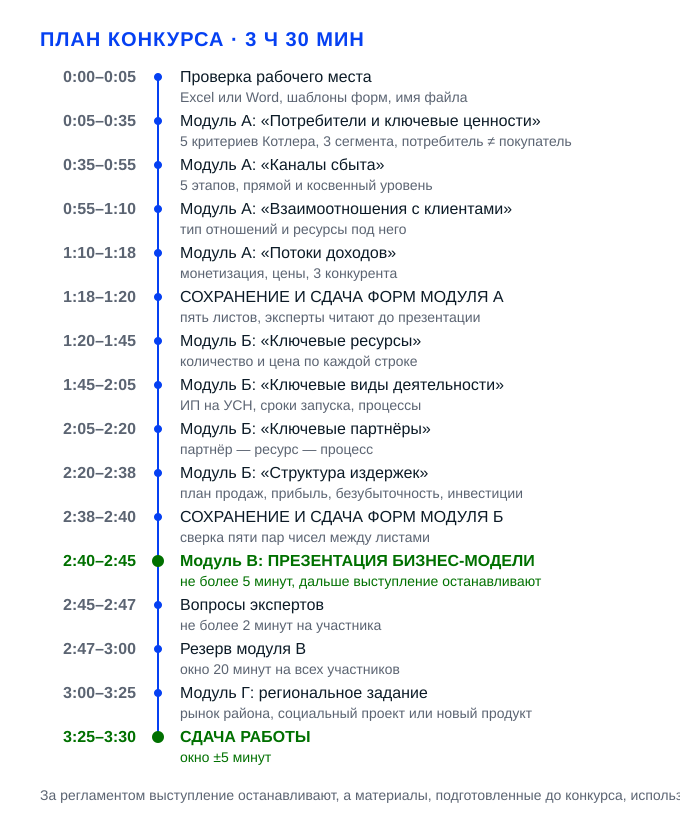
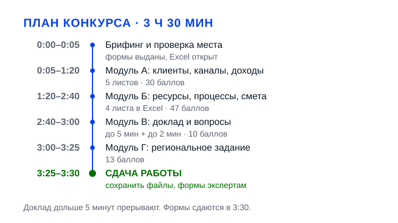
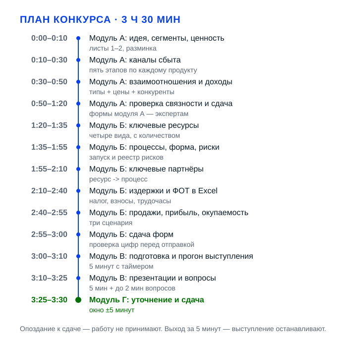

Предпринимательство (Р)
Задания ниже — официальные файлы «Абилимпикс» (источник: abilympics-russia.ru), разложенные по категориям. Решения написаны по тексту задания, регламенту и критериям оценки; в них указано, что именно проверяет эксперт.
Школьник
14–16 лет, базовый уровень заданияВыдержка из официального конкурсного задания: страницы, относящиеся к категории «Школьник» (стр. 6–9 источника).
Пошаговое решение
Конкурсное задание по компетенции «Предпринимательство (Р)» в категории «Школьники» построено вокруг одного результата: вы выступаете как учредитель или руководитель коммерческого предприятия и показываете работающую бизнес-модель, а не идею. На все модули отводится 3 часа 30 минут: модуль А — 1 час 20 минут на пять листов про потребителей, ценности, каналы, взаимоотношения и доходы (35 баллов), модуль Б — 1 час 20 минут на ресурсы, виды деятельности, партнёров и структуру издержек (45 баллов), модуль В — 5 минут презентации и до 2 минут вопросов экспертов (10 баллов), модуль Г — региональный этап (10 баллов). Сферу деятельности вы выбираете сами, формы можно дополнять обоснованиями, а работать разрешено в Excel, Word или на распечатанных бланках. Ниже задание разложено на пять задач и 51 шаг по порядку: от сегментов Котлера до окупаемости и защиты модели.

Задача 1. Проработать потребителей и ключевые ценности (модуль А)Модуль А · 35 баллов за модуль · 1 час 20 минут
Первый лист бизнес-модели — тот, с которого начинается всё остальное: пока не назван конкретный человек с конкретной задачей, ни каналы, ни цены, ни издержки посчитать нельзя. На этот лист уходит примерно треть модуля А, и именно за него чаще всего снимают баллы, потому что участник пишет «для всех» и «для молодёжи». Ваша цель — выйти из этой задачи с тремя-четырьмя описанными сегментами, у каждого из которых есть тип B2C, B2B или B2G, пять критериев сегментации по Котлеру, обоснование выбора и отдельно сформулированные потребители и покупатели.
Действие 1.1. Зафиксировать идею так, чтобы её можно было защищать
Шаг 1.1.1
Открываем файл с формами и в первой строке листа «Потребители и ключевые ценности» пишем идею одним предложением, укладываясь в 25–30 слов: что продаём, кому, какую задачу клиента закрываем и на чём именно зарабатываем. Например: «Кофейня-пекарня на 24 места рядом со школой продаёт выпечку и кофе ученикам, родителям и учителям и зарабатывает на чеке 250 рублей и утреннем потоке с 7:30». Проверяем по трём признакам: есть товар или услуга, есть платящий клиент, есть повторяемость сделки. Если хотя бы одного признака нет, идея пока не бизнес-модель, а замысел, и дальше все листы развалятся.
Задание требует, чтобы вы выступали как учредитель или руководитель коммерческого предприятия, а не описывали хобби или подработку. Формулировка в 25–30 слов дисциплинирует: если идея не укладывается в одно предложение, внутри неё два разных бизнеса. Эксперты начинают чтение работы именно с этой строки, и по ней сразу видно, понимает ли участник, за что ему будут платить.
Прочитайте своё предложение вслух и задайте к нему три вопроса: кто платит, за что платит, почему заплатит второй раз. Если на все три есть короткий ответ без «ну, в общем», формулировка рабочая. Второй тест — вычеркните из предложения любое слово: если смысл не изменился, слово лишнее и его надо убрать.
Типичная ошибка — написать «открытие современной кофейни для жителей города»: здесь нет клиента, цены и повторяемости, и лист заполняется общими словами, за которые баллы не дают. Вторая ошибка — описать сразу два бизнеса, из-за чего план продаж в модуле Б считается дважды и цифры не сходятся.
Эксперт читает эту строку первой и сверяет с ней все остальные листы: если в «Потоках доходов» появились товары, которых нет в описании идеи, он фиксирует несоответствие блоков модели.
Шаг 1.1.2
Проверяем, что выбранная деятельность — именно предпринимательство, а не самозанятость. Смотрим на три вещи: есть ли наёмные работники или партнёры, предполагается ли рост и масштабирование, нужны ли инвестиции в оборудование и помещение. В примечании к конкурсному заданию прямо сказано, что категорию «Самозанятый» использовать не рекомендуется, поэтому в листе «Ключевые виды деятельности» должна стоять ИП или ООО — выбираем форму осознанно, а не «потому что проще».
Организационно-правовая форма тянет за собой налоги, взносы и отчётность, а значит, напрямую влияет на «Структуру издержек» в модуле Б. Если в одном листе написано ИП на УСН, а в другом посчитаны взносы за сотрудников по логике самозанятого, цифры не сойдутся, и эксперт увидит это при сверке. Кроме того, отсутствие наёмного труда лишает модель раздела про фонд оплаты труда, который в задании для школьников прописан отдельно.
Назовите вслух число сотрудников и сумму инвестиций на старте. Если сотрудников ноль, а инвестиции меньше 50 тысяч рублей, скорее всего, вы описали подработку: добавьте хотя бы одного помощника и оборудование, без которого услуга не оказывается.
Самая частая ошибка — выбрать самозанятость «чтобы не платить взносы»: тогда разделы про партнёров, персонал и структуру издержек остаются пустыми, а это половина модуля Б. Обратная ошибка — сразу заявить ООО с четырьмя учредителями, не сумев объяснить, зачем нужна такая конструкция.
Эксперт проверяет, соответствует ли форма масштабу идеи: ИП на одном человеке с оборотом в миллион в месяц вызывает вопросы, как и ООО на три человека без объяснения ролей.
Шаг 1.1.3
Собираем три-четыре факта о локальном рынке, на которые вы будете опираться дальше: сколько в вашем районе похожих точек, сколько людей проходит мимо в утренний час, какой средний чек у соседей, есть ли рядом школа, офис или остановка. Источники разрешает само задание: интернет для поиска информации по бизнес-планированию, открытые данные администрации, собственный подсчёт прохожих за 15 минут в разное время. Каждый факт записываем одной строкой с источником и датой — эта колонка потом станет колонкой «Обоснование выбора ЦА».
Задание требует обосновывать выбор целевых групп, опираясь на релевантные исследования рынка и потребителей, а не на собственные представления. Цифра с источником превращает утверждение «кофе рядом со школой популярен» в аргумент, который эксперт может проверить и зачесть. Кроме того, эти же цифры понадобятся в модуле Б для плана продаж: выручка не берётся с потолка, она выводится из числа клиентов и среднего чека.
Проверьте, что на каждый сегмент у вас есть хотя бы одна цифра: число потенциальных клиентов, частота покупки или средний чек. Если факт нельзя подтвердить ни ссылкой, ни подсчётом, помечайте его как гипотезу и дальше формулируйте как гипотезу, которую нужно проверить.
Ошибка — писать «по данным исследований, рынок растёт на 20 %» без источника: такие фразы эксперт считает выдуманными и не зачитывает. Вторая ошибка — брать общероссийскую статистику вместо локальной, хотя задание говорит именно о рынке вокруг вашей точки.
Эксперт смотрит, различает ли участник проверенный факт и предположение: в работах победителей гипотезы всегда подписаны словом «гипотеза».
Действие 1.2. Разложить рынок на сегменты по Котлеру
Шаг 1.2.1
Заполняем на листе блок «Критерии сегментации» не менее чем пятью строками, и это должны быть именно критерии Филиппа Котлера: географический (район, расстояние пешей доступности), демографический (возраст, пол, состав семьи, доход), психографический (образ жизни, ценности, готовность пробовать новое), поведенческий (частота покупки, повод, чувствительность к цене, лояльность) и по искомым выгодам (что человек хочет получить — быстро, дешево, вкусно, полезно). В каждой строке пишем значение, а не название: не «демографический», а «18–25 лет, студенты и старшеклассники, доход до 30 тысяч».
Пять критериев — прямое требование задания, и это единственный раздел, где количество проверяется буквально: перечислены четыре критерия вместо пяти — балл снижен. Значения важнее названий, потому что по ним эксперт понимает, представляет ли участник своего клиента. Кроме того, значения критериев задают тон модели: «родители с детьми» требуют другого канала и цены, чем «студенты, которым нужно быстро».
Посчитайте строки: их должно быть минимум пять, и в каждой — конкретное значение, а не общее слово. Проверьте себя простым тестом: если поменять значение на противоположное, изменится ли продукт, цена или канал. Если нет — критерий описан формально.
Частая ошибка — написать пять критериев, но все про возраст и доход: это один демографический блок, раздробленный на строки, и эксперт видит подмену. Вторая ошибка — описать критерии «среднестатистического клиента» без привязки к конкретной точке в конкретном районе.
Эксперт проверяет именно пять критериев и их содержательность: формальные названия без значений он отмечает как неполное раскрытие раздела.
Шаг 1.2.2
Переносим критерии в таблицу по столбцам ЦА1, ЦА2, ЦА3 — так, как она нарисована в форме: строка «Сегмент (B2C/B2B/B2G)», строка «Критерии сегментации», строки значений по каждому критерию. В каждом столбце ставим тип сегмента. Для кофейни рядом со школой это выглядит так: ЦА1 — B2C, старшеклассники 15–18 лет, берут кофе и выпечку до уроков; ЦА2 — B2C, родители 30–45 лет, заходят после родительских собраний и в выходные с детьми; ЦА3 — B2B, учителя и сотрудники соседних офисов, заказывают кофе на вынос и обеды по предзаказу.
Тип сегмента B2C, B2B или B2G — это не формальность, а переключатель всей модели: в B2B сделка крупнее, но цикл дольше, канал — личные встречи и счёт, а не вывеска, а взаимоотношения почти всегда персональная поддержка. Смешали B2C и B2B в одном столбце — не опишете корректно ни каналы, ни цены, ни издержки. Три сегмента — рабочий минимум: два обычно слишком мало, чтобы показать разницу подходов, а пять вы не успеете раскрыть за 80 минут модуля.
В каждом столбце должно быть заполнено не меньше пяти строк критериев, тип сегмента подписан, и сегменты не дублируют друг друга. Проверьте различие: если для ЦА1 и ЦА2 совпадают все значения, это один сегмент, разрезанный на два столбца.
Ошибка — сделать три столбца с одинаковыми клиентами, отличающимися только возрастом: тогда все последующие листы выглядят шаблонно. Вторая ошибка — забыть B2B-сегмент, хотя в плане продаж потом появляется строка «корпоративные заказы», и связка блоков рвётся.
Эксперт сверяет столбцы с планом продаж и каналами: каждый сегмент должен проявиться в модели хотя бы одним отличием в подходе.
Шаг 1.2.3
В строке «Обоснование выбора ЦА» для каждого столбца пишем три-четыре предложения: почему выбран именно этот сегмент, чем он привлекателен (объём, частота, платёжеспособность, доступность) и почему вы сможете его обслужить лучше других. Опираемся на факты из шага 1.1.3: например, «в радиусе 400 метров — школа на 900 учеников и бизнес-центр на 300 рабочих мест, утром мимо проходит около 120 человек за 15 минут, из них примерно треть — с рюкзаками, то есть идут в школу». Отдельно объясняем, почему отказались от четвёртого сегмента, если он был.
Обоснование — это то, что отличает проработанную модель от переписанного шаблона, и задание просит обосновывать выбор максимально подробно. Логика простая: эксперт не знает ваш район и ваш продукт, он может судить только по аргументам в работе. Кроме того, обоснование защищает вас в презентации: на вопрос «почему вы решили, что школьники будут покупать кофе» у вас уже готов ответ с цифрами, и вы не начинаете придумывать его на сцене.
Проверьте, что в обосновании каждого сегмента есть хотя бы одна цифра и одно ограничение: например, «сегмент платёжеспособен, но чувствителен к цене, поэтому средний чек держим на уровне 250 рублей». Отсутствие ограничений — признак нереалистичного описания.
Ошибка — обосновывать выбор словами «это большая аудитория»: без цифры это не аргумент, и балл за обоснование не ставится. Вторая ошибка — обосновать только первый сегмент, а остальные оставить с прочерком, хотя форма требует заполнения по каждому столбцу.
Эксперт читает обоснование целиком и отмечает, есть ли в нём связь с локальным рынком, а не с общими рассуждениями о молодёжи.
Шаг 1.2.4
Заполняем строку «Потребители/покупатели»: для каждого сегмента отдельно называем, кто потребляет продукт и кто за него платит. В кофейне у школы потребитель и покупатель часто совпадают — старшеклассник сам покупает себе кофе. Но у сегмента «родители с детьми» потребитель — ребёнок, а покупатель — родитель, и это меняет и аргументацию, и выкладку: витрина должна быть видна с высоты детских глаз, а состав продукта — объяснён родителю. В B2B-сегменте потребитель — сотрудники офиса, покупатель — руководитель или офис-менеджер, и разговор идёт о счёте, а не о стакане кофе.
Задание прямо требует понимать разницу между потребителем и покупателем и либо разделять их, либо обосновывать, почему в вашем случае это одно лицо. Это не педантизм: от того, кто платит, зависит канал, тип взаимоотношений и структура издержек на привлечение. Модели, где эту разницу не видят, обычно проваливают лист «Каналы сбыта», потому что реклама бьёт не в того человека.
По каждому столбцу должна быть заполнена строка с двумя ролями. Если роли совпадают, в свободной ячейке пишите обоснование: «покупатель и потребитель совпадают, так как напиток приобретается для себя, решение принимается в моменте у витрины».
Ошибка — оставить строку пустой, посчитав её необязательной: это отдельный пункт формы, и его отсутствие видно сразу. Вторая ошибка — написать «потребители — все жители города», вернувшись к обезличенному описанию, от которого вы уходили в действии 1.2.2.
Эксперт смотрит на эту строку вместе с каналами: если покупатель и потребитель разведены, а канал остался один, он отмечает несогласованность.
Действие 1.3. Сформулировать ценностные предложения
Шаг 1.3.1
В строке «Ценностные предложения» для каждого сегмента пишем по два-три предложения с количественными выгодами: цена, скорость, экономия, производительность. Формулировка строится от клиента, а не от продукта: не «свежая выпечка собственного производства», а «горячий завтрак за 90 секунд и 180 рублей — дешевле, чем в кофейне у метро, и успеваешь до звонка». Каждая выгода должна быть измеримой: 90 секунд ожидания, 180 рублей за набор, 15 % экономии на кофе навынос по сравнению с сетевыми точками.
Задание делит преимущества на количественные и качественные, и количественные ценятся выше, потому что их можно проверить расчётом. Такие формулировки сразу связывают лист «Потребители» с листом «Потоки доходов»: если вы обещаете завтрак за 180 рублей, значит, в цене есть 180 рублей, и в издержках есть себестоимость этого набора. Эксперт проверяет обещание на следующем листе, и совпадение усиливает впечатление от работы.
Проверьте каждое обещание тремя вопросами: можно ли его измерить, можно ли проверить в момент покупки, отличается ли оно от обещания конкурента. Обещание, которое нельзя измерить, переносите в качественные, а не выдавайте за количественное.
Ошибка — писать «высокое качество и доступные цены»: это не ценность, а штамп, за который балл не дают. Вторая ошибка — обещать скорость, которую невозможно обеспечить наличным оборудованием: 40 секунд на капучино при одной группе и одном человеке в смене вы не выдержите, и на презентации это станет очевидным.
Эксперт проверяет, превращается ли ценность в конкретный параметр производства: обещание 90 секунд должно проявиться в описании процесса и в количестве сотрудников.
Шаг 1.3.2
Дополняем строку качественными выгодами для каждого сегмента: атмосфера и возможность посидеть с ноутбуком, понятный состав без добавок, доступность для человека с инвалидностью, локальный бренд, ощущение «своего места». Качественные выгоды пишем так же конкретно: «вход без ступеней и пандус с уклоном 5 градусов — человек на коляске заходит сам, без помощи», «на витрине карточки с составом и калорийностью — родитель видит, что берёт ребёнок».
Качественные преимущества задание называет наравне с количественными и приводит в пример дизайн, новизну, бренд, удобство применения и доступность. Для чемпионата «Абилимпикс» доступность среды — сильный аргумент, который эксперты отмечают отдельно: он показывает социальную зрелость модели. Кроме того, качественные выгоды задают тип взаимоотношений, поэтому формулировать их нужно до листа «Взаимоотношения с клиентами».
Проверьте, что качественная выгода видна глазами: её можно сфотографировать или показать на месте. Если выгоду нельзя увидеть, её нельзя и подтвердить, и в презентации она прозвучит как обещание, а не как преимущество.
Ошибка — подменить качество словом «уютно» без единой детали: эксперт не понимает, что именно вы сделаете. Вторая ошибка — заявить доступность, не предусмотрев её в ресурсах и издержках: пандус стоит денег, и если в бюджете его нет, обещание повисает.
Эксперт ищет связку «качественная выгода — ресурс, который её обеспечивает»: на этом стыке видно, реальна модель или нарисована.
Шаг 1.3.3
Сверяем готовые формулировки с правилом: ценностное предложение — это выгода клиента, а не свойство продукта. Берём каждую строку и переписываем по схеме «что клиент получает» вместо «что у нас есть»: «собственная печь» превращается в «выпечка горячая с 7:30, потому что печём каждые 40 минут», «кофемашина профессиональная» — в «кофе готовится 25 секунд, очередь из пяти человек рассасывается за две минуты». Отдельно проверяем, что для каждого сегмента выгода своя: если у ЦА1 и ЦА3 текст совпадает дословно, значит, сегменты описаны формально.
Именно на этом шаге работы чаще всего снимают баллы: участник перечисляет характеристики бизнеса, а эксперт ищет преимущества для конкретного сегмента, созданные определённым сочетанием элементов. Переписывание по схеме «что получает клиент» дисциплинирует и заодно готовит материал для презентации: в модуле В нужно за 5 минут объяснить, в чём выгода, и заученные свойства продукта звучат там слабо.
Проверьте текст на наличие слов «мы», «наше», «собственное»: если они стоят в начале предложения, формулировка, скорее всего, описывает продукт, а не выгоду. В рабочем варианте предложение начинается с клиента или с результата для него.
Ошибка — оставить в листе оба варианта, свойство и выгоду, рассчитывая, что эксперт зачтёт больше: лист становится нечитаемым, и балл снижается за корректность формулировок. Вторая ошибка — написать выгоду, которой нет в модели: обещали доставку, а канала доставки в листе нет.
Эксперт читает лист «Потребители и ключевые ценности» целиком за 2–3 минуты и оценивает, складывается ли из него портрет клиента и понятное обещание.
Задача 2. Описать каналы, взаимоотношения и деньги (модуль А, вторая половина)Модуль А · те же 35 баллов · вторая половина 1 ч 20 мин
Вторая половина модуля А отвечает на вопрос, как обещание доходит до клиента и как превращается в деньги. Здесь три листа: «Каналы сбыта» с пятью этапами взаимодействия, «Взаимоотношения с клиентами» с выбором типа отношений и ресурсами под них, «Потоки доходов» с моделью монетизации, ценой и конкурентным анализом минимум по трём соперникам. Листы связаны жёстко: канал определяет расходы на привлечение, тип отношений определяет, сколько стоит удержание, а цена должна выдержать и то, и другое.
Действие 2.1. Заполнить лист «Каналы сбыта» по пяти этапам
Шаг 2.1.1
Открываем лист «Каналы сбыта» и заполняем шапку: продукт или услуга в первой колонке, дальше пять этапов, которые заданы в форме, — информационный, оценочный, продажный, доставка и постпродажный. Для каждого этапа указываем уровень канала: прямой, когда вы сами разговариваете с клиентом, или косвенный, когда между вами стоит посредник (агрегатор доставки, маркетплейс, торговая сеть). В кофейне у школы вывеска, витрина и соцсети — прямые каналы, а доставка через агрегатор — косвенный.
Задание требует определить и описать уровни каналов для каждого продукта и подробно раскрыть этапы взаимодействия, включая маркетинговую составляющую. Уровень канала — не подпись ради галочки: косвенный канал забирает комиссию 15–30 % от заказа, и эта цифра пойдёт в переменные расходы. Если вы не разделили каналы по уровням, в модуле Б нечем объяснить, почему при одинаковой выручке прибыль у двух точек разная.
Проверьте таблицу по столбцам: на каждом из пяти этапов должна быть хотя бы одна заполненная ячейка, а уровень канала подписан словом «прямой» или «косвенный». Если на каком-то этапе стоит прочерк, значит, этап в модели не продуман.
Ошибка — описать только продажный этап, потому что он кажется главным: тогда лист не отвечает на вопрос, как клиент узнаёт о вас и как он возвращается, и оценка за полноту снижается. Вторая ошибка — назвать все каналы прямыми, хотя заказы идут через агрегатор с комиссией.
Эксперт смотрит, различает ли участник этапы и уровни: пять этапов с уровнями — это структурный каркас листа, и его проверяют первым.
Шаг 2.1.2
Заполняем информационный и оценочный этапы. На информационном пишем, как клиент узнаёт о вас: вывеска и световой короб со стороны тротуара, оформленная витрина с ценниками, страница в соцсети с ежедневным фото выпечки, договорённость с родительским чатом школы о публикации меню. На оценочном — как он принимает решение: пробный стаканчик на входе, открытая витрина, где видно, как печётся, отзывы в картах, возможность расплатиться картой и по QR-коду.
Эти два этапа задание выделяет отдельно, потому что именно на них тратится маркетинговый бюджет, и именно там теряются клиенты: человек увидел вывеску, но не понял цену и ушёл. Для школьника это особенно важный пункт: он показывает, что участник думает о пути клиента, а не только о продукте. Стоимость привлечения одного клиента, которую вы оцените здесь, понадобится в плане продаж.
Проверьте, что для каждого сегмента из задачи 1 назван свой способ узнать о вас: старшеклассники приходят из соцсетей, родители — из рекомендаций и витрины, офисные сотрудники — из предзаказа по телефону. Совпадение всех каналов у разных сегментов — признак, что этап описан формально.
Ошибка — написать «реклама в интернете» без конкретной площадки, бюджета и сообщения: эксперт не может оценить такой канал. Вторая ошибка — пообещать акцию с бесплатным кофе, не заложив её стоимость в издержки.
Эксперт проверяет, есть ли в информационном этапе конкретное сообщение и носитель, а в оценочном — понятный способ попробовать продукт.
Шаг 2.1.3
Раскрываем продажный этап и доставку. В продажном указываем, как именно происходит покупка: заказ у стойки, предзаказ через сообщение в соцсети с оплатой при получении, безналичный расчёт, чек. В доставке — как продукт попадает к клиенту: самовывоз со стойки в течение 5 минут, доставка курьером по району в радиусе 2 километров за 45 минут, передача через агрегатор. Для каждой строки пишем, кто выполняет действие и сколько времени оно занимает.
Продажный этап и доставка определяют пропускную способность: если одна касса обслуживает 20 человек в час, а вы обещали утренний поток в 60 человек, модель не выдержит. Время и ответственный в каждой строке нужны ещё и потому, что на листе «Ключевые виды деятельности» эти же действия станут процессами. Задание просит подробно описать этапы взаимодействия, и описание без времени и исполнителя подробным не считается.
Проверьте арифметикой: умножьте число сотрудников на производительность и сравните с планом продаж. Если в час пик очередь больше, чем вы можете обслужить, добавьте второго человека в смену или уберите обещание скорости.
Ошибка — не указать способ оплаты и оформление чека: на презентации вопрос «а как вы принимаете деньги» ставит участника в тупик. Вторая ошибка — обещать доставку по всему городу, не посчитав курьера и его бензин.
Эксперт сопоставляет продажный этап с планом продаж и смотрит, выдерживает ли канал заявленный объём. Вопрос «сколько человек в час вы обслуживаете» задают почти всегда.
Шаг 2.1.4
Заполняем постпродажный этап: что происходит после покупки. Здесь пишем конкретные механики удержания — карта постоянного клиента с шестым кофе в подарок, сообщение в соцсети с просьбой оценить заказ, разбор жалобы в течение суток, приглашение на дегустацию новой позиции, скидка на выпечку в конце дня. Для каждой механики указываем, сколько она стоит и кто её выполняет.
Задание прямо называет постпродажное обслуживание частью канала, и это тот этап, который в школьных работах пропускают чаще всего. Между тем повторные покупки — основа экономики кофейни: если клиент возвращается раз в неделю, стоимость его привлечения размывается на десятки чеков. Кроме того, здесь видно, умеет ли участник считать не только выручку, но и удержание, а это отличает зрелую модель.
Проверьте, что у каждой механики есть цена и исполнитель, а у модели — понятная доля повторных клиентов, которую вы заложите в план продаж. Если механика называется «отличный сервис», её нельзя посчитать и нельзя оценить.
Ошибка — ограничиться фразой «мы любим своих клиентов»: балл за этап не ставится. Вторая ошибка — ввести карту лояльности, не посчитав скидку в переменных расходах, из-за чего прибыль в модуле Б окажется завышенной.
Эксперт ищет в постпродажном этапе измеримую механику возврата и её стоимость. Без цифры этап считается нераскрытым.
Действие 2.2. Выбрать типы взаимоотношений с клиентами
Шаг 2.2.1
На листе «Взаимоотношения с клиентами» для каждого сегмента выбираем тип отношений из шести, названных в задании: персональная поддержка, особая персональная поддержка, самообслуживание, автоматизированное обслуживание, сообщества, совместное создание. Выбор подписываем словами и указываем, почему именно этот тип: для старшеклассников — самообслуживание у стойки и автоматизированное обслуживание через приложение лояльности, для офисных сотрудников — персональная поддержка с закреплённым менеджером и предзаказом, для родителей — сообщество с чатом и совместное создание меню.
Типы отношений в задании перечислены не для полноты: каждый из них стоит разных денег и требует разных ресурсов, а связь «ценность — тип отношений — УТП» проверяется экспертом напрямую. Самообслуживание дешевле персональной поддержки в разы, но оно не работает там, где клиенту нужно объяснить состав продукта. Если тип выбран произвольно, следующий шаг про ресурсы разваливается.
Проверьте, что в таблице у каждого сегмента есть тип и обоснование в одно-два предложения. Допустимо указать два типа для одного сегмента, если вы объясните, какой работает на первой покупке, а какой — на повторной.
Ошибка — поставить всем сегментам «персональную поддержку», потому что она «качественнее»: тогда расходы на персонал вырастут так, что цена станет неконкурентной. Вторая ошибка — выбрать сообщество, не назвав площадку, где это сообщество живёт.
Эксперт проверяет связку с ценностями: тип отношений должен продолжать обещание, а не противоречить ему. Расхождение он показывает вопросом на защите.
Шаг 2.2.2
Раскрываем содержание выбранных типов на примере своего проекта: кто именно и в каком режиме общается с клиентом, сколько времени это занимает, что входит в поддержку. Например: «особая персональная поддержка для офисного сегмента — менеджер на связи с 8:00 до 16:00 в мессенджере, предзаказ принимается до 9:30, счёт выставляется раз в неделю, на одного менеджера приходится до 15 компаний». Такие же расшифровки пишем для самообслуживания (что клиент делает сам, где инструкция) и для сообщества (кто модерирует, как часто публикуется контент).
Форма требует раскрыть содержание каждого типа на примере проекта, и это то место, где видно, представляет ли участник свой рабочий день. Конкретика про часы, объём и ответственного превращает тип отношений в операционный процесс, который потом попадёт в «Ключевые виды деятельности». Без этого на презентации нечего сказать о том, как вы удерживаете клиента.
Проверьте, что в каждой расшифровке есть три элемента: кто, когда, сколько. Если хотя бы одного нет, описание останется общим и в модуле Б вы не сможете посчитать на него трудозатраты.
Ошибка — описать поддержку как «ответим на вопросы клиентов» без часов и норматива: тогда невозможно понять, нужен ли отдельный человек. Вторая ошибка — обещать круглосуточную связь при одном сотруднике в смене.
Эксперт сопоставляет описание отношений с численностью персонала в модуле Б. Обещание персональной поддержки при одном сотруднике он считает невыполнимым.
Шаг 2.2.3
Заполняем строку «Какие ресурсы требуются для обеспечения выбранного типа взаимоотношений»: для самообслуживания — понятная выкладка, ценники, терминал оплаты; для персональной поддержки — сотрудник с телефоном и CRM-таблицей; для сообщества — модератор и контент-план на месяц; для совместного создания — механика сбора предложений и время на их разбор. Каждый ресурс подписываем количеством и стоимостью: «телефон для менеджера — 15 000 рублей единоразово», «модератор чата — 2 часа в день».
Задание отдельным пунктом требует описать ресурсы под выбранные типы отношений, и это мост к модулю Б, где ресурсы перечисляются с количеством. Если ресурс назван без количества и цены, он не попадёт в структуру издержек, и прибыль окажется посчитанной без реальных затрат на сервис. Кроме того, здесь проверяется реалистичность: сообщество без модератора быстро превращается в свалку жалоб.
Проверьте, что для каждого типа отношений из шага 2.2.1 есть хотя бы один ресурс с количеством и ценой. Сверьте список с листом «Ключевые ресурсы» позже: он должен совпадать.
Ошибка — написать «требуются сотрудники» без числа и ставки: непонятно, один человек или три. Вторая ошибка — не заложить ресурсы под сообщество, считая, что клиенты будут общаться сами.
Эксперт сверяет эту строку с ресурсами и издержками: совпадение усиливает оценку за связность модели, расхождение — снижает.
Действие 2.3. Определить монетизацию, цены и конкурентное поле
Шаг 2.3.1
На листе «Потоки доходов» для каждого товара или услуги указываем модель монетизации из списка в задании: продажа активов (продали булочку — получили деньги), плата за использование, подписка (кофе по фиксированной цене каждое утро), аренда, лицензия, франшиза, реклама. Для кофейни это продажа активов по основной массе чеков плюс подписка «20 кофе за месяц» для офисного сегмента и размещение рекламы локального производителя на витрине.
Модель монетизации — это ответ на вопрос, за что именно приходят деньги, и задание требует определить её для каждого товара. Разные модели дают разную структуру выручки: подписка приносит деньги вперёд и снижает кассовый разрыв, продажа активов зависит от потока. Если монетизация не названа, в модуле Б нельзя корректно построить план продаж, потому что непонятно, что считать единицей продажи.
Проверьте, что у каждой позиции из описания идеи есть модель монетизации, а единица продажи названа (чашка, набор, подписка, час аренды). Если позиция есть в идее, но не имеет способа заработать, уберите её из модели.
Ошибка — перечислить все модели сразу «для солидности»: работа выглядит нереалистичной, потому что франшиза и лицензия несовместимы со стартом на 24 места. Вторая ошибка — забыть про подписку и потерять самый предсказуемый поток.
Эксперт смотрит, соответствует ли модель монетизации масштабу бизнеса и подтверждена ли она ценой. Лицензия и франшиза в модели на 24 места вызывают вопросы.
Шаг 2.3.2
Выбираем стратегию ценообразования и объясняем выбор: «снятие сливок» на уникальной позиции, «проникновение» через низкую цену на входе, «среднерыночная цена при лучшем качестве», «ценность для клиента» с надбавкой за скорость и удобство. Для кофейни у школы логично среднерыночное позиционирование с небольшой надбавкой за скорость: кофе 120 рублей, набор «кофе и булочка» 250 рублей, подписка 2 000 рублей за 20 напитков. Рядом с каждой ценой пишем обоснование: из чего она сложилась.
Стратегия ценообразования должна, с одной стороны, соответствовать ключевым ценностям клиента, а с другой — рыночной ситуации, и задание формулирует это требование прямо. Цена без обоснования читается как взятая с потолка, а в модуле Б она не даст сойтись прибыли. Кроме того, через цену проверяется идея: если для безубыточности нужен чек в 400 рублей, а рядом три точки с чеком 200, модель нежизнеспособна.
Проверьте цену двумя способами: сравните с тремя конкурентами из следующего шага и разложите на себестоимость плюс наценку. Если цена ниже себестоимости или выше рынка больше чем на 30 % без объяснения, вернитесь к стратегии.
Ошибка — поставить цены «как у всех» и не объяснить, за счёт чего вы заработаете при той же цене: нужен либо меньший расход сырья, либо больший поток. Вторая ошибка — не указать единицу измерения, и тогда непонятно, 250 рублей — это за набор или за стакан.
Эксперт сопоставляет цену со стратегией и с конкурентами: расхождение без объяснения считается ошибкой расчёта. Он же проверяет единицу измерения у каждой цены.
Шаг 2.3.3
Проводим конкурентный анализ минимум по трём соперникам: два прямых (кофейня в том же доме и пекарня через дорогу) и один косвенный (супермаркет с кофе-автоматом и полкой выпечки, куда заходят по пути). По каждому указываем приоритетные для покупателя характеристики: средний чек, ассортимент, скорость, часы работы, наличие мест, доставка, программа лояльности. Данные берём из открытых источников и собственного наблюдения: цену видно на витрине, поток можно посчитать за 15 минут.
Задание требует описать не менее трёх конкурентов и корректно разделить прямых и косвенных, и это минимум, который проверяется буквально. Косвенный конкурент — самый недооценённый: супермаркет с кофе-автоматом забирает именно того клиента, который спешит. Разделение важно потому, что с прямыми вы конкурируете качеством и атмосферой, а с косвенными — скоростью и удобством расположения.
Проверьте, что в таблице три строки и больше, у каждой заполнены хотя бы четыре характеристики, а тип конкурента подписан. Если у всех конкурентов одинаковые значения, вы, скорее всего, смотрели один тип точек.
Ошибка — описать конкурентов общими словами «дорого и невкусно»: такая оценка не подтверждается и не даёт вам преимущества. Вторая ошибка — учитывать только прямых конкурентов и не заметить, что половину утреннего потока забирает магазин у остановки.
Эксперт проверяет количество конкурентов и наличие разделения на прямых и косвенных — это формальный критерий, который виден сразу.
Шаг 2.3.4
Завершаем лист выводом о позиционировании: в одной-двух строках пишем, по какой характеристике вы выигрываете у каждого конкурента и за счёт какого ресурса это обеспечено. Например: «быстрее пекарни через дорогу за счёт предзаказа в мессенджере и второй кассы в утреннюю смену; дешевле сетевой кофейни на 20 % за счёт своей печи и отсутствия франшизных платежей; удобнее супермаркета за счёт посадки и Wi-Fi». Затем сохраняем файл по инструкции площадки и проверяем, что все пять листов модуля А заполнены до конца.
Вывод о позиционировании — это то, что вы будете говорить в презентации первым, и то, что связывает лист «Потребители» с листом «Потоки доходов». Задание оценивает корректность определения конкурентов и обоснованность выбора, а вывод показывает, что анализ не был самоцелью. Сохранение и отправка форм — формальное требование модуля: по истечении времени модуля заполненные формы направляются экспертам, и несохранённый файл не оценивается вообще.
Проверьте файл перед отправкой: пять листов, ни одной пустой строки в обязательных блоках, имя файла содержит вашу фамилию и категорию, если площадка это требует. Откройте документ заново после сохранения — иногда часть таблицы уходит за границу печати.
Ошибка — дописывать лист за минуту до конца модуля и не сохранить: потеря целого модуля на 35 баллов. Вторая ошибка — оставить вывод о позиционировании на презентацию, где на него не будет времени.
Эксперт получает формы сразу после модуля А и читает их до презентации: первое впечатление складывается именно по этим пяти листам.
Задача 3. Проработать ресурсы, запуск и партнёров (модуль Б, первая половина)Модуль Б · 45 баллов · 1 ч 20 мин
Модуль Б отвечает на вопрос, чем модель работает и кто ей в этом помогает. Сначала вы перечисляете ключевые ресурсы с количеством и ценой, затем выбираете организационно-правовую форму и расписываете запуск по срокам, потом описываете партнёров и риски. Логика такая: ресурсы задают издержки, издержки задают цену, партнёры закрывают те ресурсы, которые вам невыгодно держать самому. Если эта часть сделана формально, вторая половина модуля Б не считается, потому что считать будет нечего.
Действие 3.1. Описать ключевые ресурсы с количеством и ценой
Шаг 3.1.1
На листе «Ключевые ресурсы» заполняем блок материальных ресурсов: помещение, оборудование, мебель, транспорт, инвентарь. Каждую строку пишем с количеством, ценой и способом получения — собственное, в аренду или от партнёра. Для кофейни на 24 места это выглядит так: помещение 60 квадратных метров в аренду за 60 000 рублей в месяц, кофемашина на две группы 250 000 рублей, печь 120 000, витрина 80 000, мебель и барная стойка 90 000, касса с терминалом 25 000, посуда и инвентарь 30 000.
Задание требует определить все необходимые ресурсы, указав требуемое количество, и это прямо проверяется: строка без количества считается нераскрытой. Количество нужно ещё и арифметически — из него вырастают единоразовые расходы в листе «Структура издержек». Кроме того, способ получения ресурса определяет, попадёт он в инвестиции или в ежемесячные платежи, а значит, влияет на бюджет и на точку безубыточности.
Проверьте, что каждая строка отвечает на четыре вопроса: что, сколько, за сколько, как получено. Сложите единоразовые позиции — сумма должна совпасть с бюджетом инвестиций, который вы посчитаете в задаче 4.
Ошибка — написать «оборудование для кофейни» без перечня: тогда в издержках появляется круглая сумма без обоснования, и эксперт не может её проверить. Вторая ошибка — не указать, что помещение в аренде, и потом посчитать и аренду, и покупку помещения.
Эксперт проверяет полноту перечня и наличие количества: по этому листу видно, представлял ли участник, из чего физически состоит его бизнес.
Шаг 3.1.2
Заполняем финансовые и информационные ресурсы. В финансовых указываем источники денег на старте и их объём: собственные накопления 300 000 рублей, заём у родственников 200 000, грант для молодых предпринимателей до 500 000 рублей, кредит не берём. В информационных — то, без чего модель не работает: база рецептур с технологическими картами, доступ к кассовой программе и учёту, страница в картах с отзывами, договор с поставщиком с фиксированной ценой на квартал, знание локального потока по часам.
Задание делит ресурсы на материальные, финансовые, информационные и трудовые, и информационные чаще всего оставляют пустыми, теряя баллы за полноту. Между тем именно они объясняют, почему вы дешевле конкурента: технологическая карта с точным расходом сырья — это ресурс, который экономит 3–5 % себестоимости. Источники финансирования нужны и для итогового бюджета инвестиций, который требуется в конце модуля Б.
Проверьте, что сумма источников равна бюджету инвестиций, а не «примерно похожа»: разница в 50 тысяч рублей на защите читается как ошибка. По информационным ресурсам проверьте, что каждый можно предъявить — файл, доступ, договор.
Ошибка — написать «инвестиции из личных средств» без суммы: непонятно, хватает ли денег. Вторая ошибка — заложить грант, не зная условий программы, и получить вопрос, на каком основании вы на него рассчитываете.
Эксперт смотрит на источники финансирования отдельно: реалистичность источника для школьника — один из показательных моментов работы.
Шаг 3.1.3
Заполняем трудовые ресурсы: должность, количество человек, требования к соискателю, график и оплата. Для кофейни это управляющий на 0,5 ставки — 45 000 рублей, два бариста-продавца по 35 000, пекарь 40 000, уборка через клининг по договору 2 раза в неделю. Требования пишем проверяемые: для бариста — санитарная книжка, опыт работы с кофемашиной от полугода, умение работать в утреннюю смену с 7:00. График — 2 через 2 по 10 часов, что укладывается в норму трудового законодательства.
В задании для школьников требования к соискателям и условия оплаты прямо не расписаны так подробно, как для специалистов, но состав персонала нужен для фонда оплаты труда, а он входит в структуру издержек. Кроме того, численность персонала — это проверка пропускной способности: если вы обещали 90 чеков в день и работу с 7:30, кто-то должен стоять за стойкой в это время. Санитарные книжки и график показывают, что участник понимает реальные требования к найму.
Проверьте арифметику: сумма часов всех сотрудников должна покрывать часы работы точки, а сумма окладов — совпадать с фондом оплаты труда в листе издержек. Сверьте, что на каждую смену приходится минимум два человека в часы пик.
Ошибка — написать «два продавца» без графика и ставки, из-за чего ФОТ считается по наитию. Вторая ошибка — поставить одному человеку 12-часовую смену семь дней в неделю: это нарушение трудового законодательства, и эксперт отмечает его как грубую ошибку расчёта.
Эксперт сверяет штат с графиком работы и с планом продаж: несоответствие численности и объёма — самый частый повод для вопросов на защите.
Действие 3.2. Выбрать организационно-правовую форму и расписать запуск
Шаг 3.2.1
На листе «Ключевые виды деятельности» в первой строке указываем организационно-правовую форму и обосновываем её. Для проекта с наёмными сотрудниками и оборотом около 675 000 рублей в месяц подходит ИП: регистрация за 5 рабочих дней, упрощённая отчётность, один учредитель. ООО выбираем, если планируем двух и более партнёров или работу с крупными поставщиками по НДС. Самозанятость не берём: в примечании к заданию она не рекомендована, и наёмных сотрудников по этой форме оформить нельзя.
Форма задаёт налоги, взносы, отчётность и предел по выручке, а значит, определяет структуру издержек. Если форма не обоснована, эксперт не понимает, откуда в расчётах взялись взносы 30 % и почему налог считается по ставке 15 %. Кроме того, выбор формы показывает, знаком ли участник с процедурой запуска: у ИП и ООО разный набор документов, сроков и ответственности.
Проверьте, что форма названа полным словом, обоснована двумя-тремя причинами и согласуется с числом сотрудников и системой налогообложения в задаче 4. Если в модели есть партнёр-совладелец, ИП с одним владельцем не подходит.
Ошибка — выбрать ИП и одновременно описать двух равноправных учредителей: такая конструкция невозможна без договора товарищества. Вторая ошибка — обосновать форму словами «так проще», не связав её с налогами и персоналом.
Эксперт проверяет, соответствует ли форма модели и упомянута ли она там, где считается налог. Форма, названная один раз, читается как формальность.
Шаг 3.2.2
Расписываем последовательность запуска со сроками, привязанными к неделям: первая неделя — регистрация ИП, открытие расчётного счёта, покупка кассы; вторая-третья — поиск и подписание договора аренды, согласование вентиляции; четвёртая-шестая — ремонт и монтаж оборудования; седьмая — закупка сырья, обучение персонала, отладка технологических карт; восьмая — пробные дни с приглашёнными гостями и открытие. Итого около двух месяцев от решения до первой продажи, и каждая строка с ответственным.
Задание требует максимально подробно описать последовательность действий и сроки организации запуска, и это проверяемый пункт: календарь без сроков не считается планом. Сроки нужны и экономически — от них зависит, сколько месяцев вы платите аренду до первой выручки, а эта сумма входит в резерв и в бюджет инвестиций. Кроме того, порядок действий показывает, знает ли участник, что ремонт и вентиляция занимают больше времени, чем кажется.
Проверьте, что сроки не пересекаются там, где они физически не могут идти параллельно: монтаж оборудования не начинается до окончания ремонта, обучение персонала — до его найма. Сложите недели и сравните с датой открытия в презентации.
Ошибка — написать «открытие через месяц», не учитывая ремонт и согласования: такой план нереалистичен и вызывает вопросы о компетентности. Вторая ошибка — закупить сырьё до готовности помещения, из-за чего продукты портятся и деньги уходят впустую.
Эксперт смотрит на календарь как на проверку реализма: короткие сроки снижают доверие ко всей финансовой части. Он ищет в плане ответственных по каждой строке.
Шаг 3.2.3
Описываем три группы процессов. Управляющие: планирование меню и закупок раз в неделю, контроль финансов по пятницам, разбор отзывов и жалоб. Операционные: открытие точки в 7:00, замес и расстойка теста, выпечка каждые 40 минут, обслуживание гостей, закрытие кассы и сдача выручки. Поддерживающие: уборка, обслуживание кофемашины и печи по регламенту раз в месяц, ведение учёта, обучение новых сотрудников. У каждого процесса указываем владельца и периодичность.
Задание требует определить состав ключевых управляющих, операционных и поддерживающих процессов для бесперебойной работы, и это тот раздел, по которому видно, понимает ли участник разницу между «делать продукт» и «управлять бизнесом». Процессы — основа для издержек: у каждого есть исполнитель и стоимость. Кроме того, на презентации вопрос «кто у вас закупает сырьё» задают почти всегда, и ответ должен быть в модели.
Проверьте, что в каждой группе есть хотя бы два процесса, у каждого назван владелец и периодичность. Убедитесь, что все процессы из листа «Каналы сбыта» и «Взаимоотношения с клиентами» здесь присутствуют.
Ошибка — перечислить только операционные процессы, забыв управление и поддержку: тогда модель выглядит как один бесконечный рабочий день. Вторая ошибка — описать процесс без владельца, и на защите выясняется, что закупками не занимается никто.
Эксперт ищет в списке процессы, которые обеспечивают заявленные ценности: обещали свежую выпечку — должен быть процесс выпечки по расписанию.
Действие 3.3. Собрать ключевых партнёров
Шаг 3.3.1
Заполняем лист «Ключевые партнёры» таблицей из трёх колонок: партнёр, какой ресурс он даёт, какой процесс обеспечивает. Для кофейни: молочный завод — молоко и сливки по договору с отсрочкой 7 дней, обеспечивает производство напитков; местная пекарня-поставщик — часть ассортимента, если своя печь не справляется с объёмом; агрегатор доставки — поток заказов и логистика; клининговая компания — уборка; бухгалтер на аутсорсе — учёт и отчётность; администрация района — согласование вывески и участие в ярмарке выходного дня.
Партнёры нужны, чтобы не держать все ресурсы самому: покупка собственной машины для доставки обойдётся дороже, чем комиссия агрегатора на старте. Задание требует учесть всех партнёров модели с указанием, какой ресурс и какой процесс они обеспечивают, и это проверяется по таблице. Кроме того, здесь видно, понимает ли участник, что партнёр — это не «друг, который поможет», а договор с условиями.
Проверьте, что каждый партнёр закрывает ресурс, который уже есть в листе «Ключевые ресурсы», и обеспечивает процесс из листа «Виды деятельности». Если партнёр появился впервые и ни к чему не привязан, уберите его или привяжите.
Ошибка — написать «поставщики сырья» одной строкой: непонятно, кто именно, на каких условиях и что будет при срыве поставки. Вторая ошибка — включить в партнёры инвестора и банк, которые дают деньги, но не обеспечивают процесс.
Эксперт проверяет связность тройки «партнёр — ресурс — процесс». Разорванная тройка считается неполным раскрытием раздела.
Шаг 3.3.2
Для каждого партнёра дописываем условия сотрудничества и оценку зависимости: доля его поставки в общем объёме, срок договора, что произойдёт при срыве. Например: «молочный завод — 100 % молока, договор на год с отсрочкой, замена — второй поставщик с наценкой 8 %, поэтому держим договор с двумя и делим объём 70 на 30». Отдельно отмечаем партнёров, от которых модель зависит критически, и партнёров, которых легко заменить.
Раздел про партнёров в задании связан с целями сотрудничества: оптимизировать модель, снизить риски или получить ресурсы. Оценка зависимости показывает, что участник думает о рисках, а не только о выгоде, и это перекликается со следующим листом. Если у вас один поставщик на критический ресурс, эксперт задаст вопрос о плане Б, и лучше, чтобы ответ был в работе.
Проверьте, что у каждого критического партнёра есть альтернатива или объяснение, почему её нет. Доля поставки в процентах должна быть указана числом, а не словом «основной».
Ошибка — указать партнёров без условий, и на защите выясняется, что договорённостей нет и цены не зафиксированы. Вторая ошибка — построить модель на одном поставщике с эксклюзивными условиями, не описав, что будет при его уходе.
Эксперт оценивает реалистичность условий: отсрочка платежа, объём и альтернатива — те детали, которые отличают проработанную модель.
Действие 3.4. Разделить риски и придумать меры
Шаг 3.4.1
Выписываем риски в две колонки. Систематические, то есть внешние и общие для всех: рост цен на сырьё, снижение потока из-за закрытия школы на каникулы, изменение санитарных требований, рост арендной ставки, конкуренция с сетевой кофейней. Несистематические, то есть свои: поломка кофемашины, уход бариста, порча партии сырья, ошибка в закупке, срыв поставки. Для каждого риска оцениваем вероятность и последствия в деньгах.
Задание для школьников прямо не требует раздела рисков, но для специалистов он обязателен, а в модели он нужен, чтобы показать устойчивость: эксперт всегда спрашивает, что будет, если поток упадёт. Деление на систематические и несистематические — принятая рамка, и её использование показывает терминологическую грамотность. Кроме того, меры по рискам попадают в поддерживающие процессы и в резерв бюджета.
Проверьте, что в каждой колонке минимум три риска, у каждого указана вероятность и денежная оценка. Риск без оценки последствий нельзя сравнить с другими, а значит, нельзя и выбрать меру.
Ошибка — перечислить только внешние риски, сняв с себя ответственность за внутренние: поломка оборудования случается чаще, чем изменение законодательства. Вторая ошибка — писать риск без последствий, например «возможен рост цен».
Эксперт смотрит на различение типов рисков и на наличие денежной оценки: это показывает уровень финансовой грамотности участника.
Шаг 3.4.2
К каждому риску пишем меру контроля и действие в негативном сценарии. На рост цен на сырьё — фиксация цены в договоре на квартал и ежемесячный пересмотр меню; на падение потока в каникулы — предзаказы для офисов и скидка на выпечку в конце дня; на поломку кофемашины — сервисный договор с выездом за 24 часа и резерв 30 000 рублей на ремонт; на уход бариста — второй обученный сотрудник и почасовая подмена. Меры должны быть выполнимы теми ресурсами, которые уже описаны.
Мера контроля без ресурса — обещание, а не план, поэтому каждая мера должна опираться на строку из листа «Ключевые ресурсы» или на партнёра. В задании требуется описать меры контроля систематических рисков и действия при негативном сценарии для всех типов, и это тот раздел, который отличает живую модель от красивой презентации. Кроме того, резерв в бюджете инвестиций появляется именно отсюда.
Проверьте, что у каждого риска из шага 3.4.1 есть мера и что каждая мера подкреплена ресурсом, деньгами или партнёром. Если мера звучит как «будем внимательнее», она не работает.
Ошибка — написать меры, которые дороже самого риска: страховка на 50 000 рублей против риска в 20 000 не имеет смысла. Вторая ошибка — оставить негативный сценарий без действий, ограничившись словами «постараемся избежать».
Эксперт проверяет, что меры реалистичны и не противоречат бюджету: резерв из мер должен быть в инвестициях. Мера дороже риска засчитывается как ошибка.
Задача 4. Посчитать издержки, прибыль и инвестиции (модуль Б, вторая половина)Модуль Б · 45 баллов · расчётная часть
Здесь модель превращается в цифры, и здесь же теряется больше всего баллов: расчёты не сходятся между листами, налог посчитан по неверной базе, а инвестиции взяты с потолка. Порядок работы жёсткий: сначала налоговый режим и фонд оплаты труда, потом план продаж и разделение затрат на переменные, постоянные и единоразовые, потом операционная и чистая прибыль, точка безубыточности и бюджет инвестиций с источниками. Каждая цифра должна выводиться из предыдущей, а не появляться отдельно.
Действие 4.1. Выбрать налоговый режим и посчитать фонд оплаты труда
Шаг 4.1.1
На листе «Структура издержек» в первой строке пишем систему налогообложения и обосновываем выбор. Для кофейни с выручкой 675 000 рублей и расходами около 546 000 рублей в месяц выгоднее УСН «доходы минус расходы» по ставке 15 %: налог считается с разницы, и при высокой доле затрат это дешевле, чем 6 % с оборота. Сравниваем два варианта в двух строках расчёта: 6 % от 675 000 — это 40 500 рублей, 15 % от прибыли 128 600 — 19 290 рублей. Разница 21 210 рублей в месяц остаётся в бизнесе.
Задание требует определить оптимальную систему налогообложения, и «оптимальная» означает посчитанную, а не выбранную по привычке. Ошибка в режиме меняет всю структуру издержек и чистую прибыль, а значит, и срок окупаемости. Кроме того, сравнение двух режимов в работе показывает, что участник считает варианты, а не берёт первый попавшийся — это отдельный плюс при оценке.
Проверьте, что ставка, база и сумма названы для обоих режимов, а выбор объяснён одной фразой с цифрой. Убедитесь, что режим не противоречит форме из шага 3.2.1 и пределу по выручке.
Ошибка — посчитать 15 % со всей выручки, а не с разницы: налог вырастает втрое, и чистая прибыль обнуляется. Вторая ошибка — выбрать 6 % «потому что проще», не проверив, что при доле расходов 81 % это дороже.
Эксперт проверяет базу налога и арифметику: здесь ошибки видны сразу и стоят дорого. Выбор режима без сравнения двух ставок он считает случайным.
Шаг 4.1.2
Считаем фонд оплаты труда. Берём штат из шага 3.1.3: управляющий 45 000, два бариста по 35 000, пекарь 40 000, итого оклады 155 000 рублей в месяц. Сверяем часы: точка работает 12 часов в день без выходных, это 360 часов в месяц, четыре сотрудника при графике 2 через 2 по 10 часов закрывают около 300 часов, значит, нужен ещё один человек на подмену — добавляем бариста на 0,5 ставки 18 000 рублей. Оклады становятся 173 000, страховые взносы около 30 % — 51 900, итоговый ФОТ 224 900 рублей в месяц.
Фонд оплаты труда — самая крупная постоянная статья в общепите, и задание требует рассчитать его с учётом графика и взносов. Если ФОТ посчитан без взносов, прибыль завышается на четверть, а на защите это первый вопрос, который задаёт эксперт-экономист. Сверка часов с графиком нужна, чтобы не нарушить трудовое законодательство: 12-часовые смены семь дней в неделю невозможны физически.
Проверьте три числа: сумма окладов, сумма взносов, итог. Итог должен совпасть со строкой ФОТ в постоянных расходах. Отдельно проверьте, что часы всех сотрудников покрывают часы работы точки.
Ошибка — забыть взносы и посчитать только оклады: чистая прибыль вырастает на 51 900 рублей, которых нет. Вторая ошибка — поставить штат из двух человек на 12-часовую работу без выходных, что противоречит трудовому кодексу и не выдерживает проверки.
Эксперт смотрит на ФОТ вместе со штатным расписанием: совпадение чисел между листами — признак аккуратности. Отсутствие взносов завышает прибыль на четверть.
Шаг 4.1.3
Если в модели есть сдельная часть или процент с продаж, приводим пример расчёта. Например, у бариста фиксированная ставка 30 000 рублей плюс 3 % от личных продаж свыше 300 000 рублей в месяц: при выручке 350 000 рублей надбавка составит 1 500 рублей, при 400 000 — 3 000 рублей. Такой же расчёт делаем для пекаря, если он получает процент от объёма выпечки. Все суммы вносим в таблицу как переменную часть ФОТ.
Сдельная часть делает расходы зависимыми от выручки, и это меняет расчёт точки безубыточности: часть ФОТ переезжает из постоянных затрат в переменные. Задание требует привести пример расчёта при наличии сдельной системы, и пример с цифрами показывает, что участник понимает механику мотивации. Кроме того, процент с продаж — реальный инструмент в общепите, и его наличие делает модель правдоподобнее.
Проверьте, что процент указан от какой базы, есть ли порог и как считается надбавка на конкретном числе. Если в модели нет сдельной части, напишите об этом прямо: «окладная система, сдельных выплат нет» — это тоже корректный ответ.
Ошибка — посчитать процент от прибыли вместо выручки: база другая, и суммы не сходятся с планом продаж. Вторая ошибка — ввести процент, не пересчитав точку безубыточности, из-за чего она занижается.
Эксперт ищет в расчёте явную базу и порог: без них процент считается неопределённым условием. Пример на конкретном числе он ценит выше описания схемы.
Действие 4.2. Составить план продаж и разделить затраты
Шаг 4.2.1
Строим план продаж по месяцам на первые шесть месяцев. Исходим из потока: 90 чеков в день при среднем чеке 250 рублей дают 22 500 рублей в день, или 675 000 рублей в месяц при 30 днях. Первый месяц берём с коэффициентом 0,6 — точка только открылась, о ней ещё не знают; второй 0,75; третий 0,9; с четвёртого выходим на план. Получаем 405 000, 506 250, 607 500 и далее по 675 000 рублей. План расписываем по товарным группам: напитки 55 %, выпечка 35 %, сопутствующие товары 10 %.
План продаж — основа всей расчётной части: без него нельзя посчитать ни переменные затраты, ни прибыль, ни окупаемость. Задание требует составить план продаж для каждого товара или группы товаров, и разбивка по группам нужна, потому что у напитков и выпечки разная себестоимость. Коэффициенты роста показывают, что участник понимает: в первый месяц выручка не равна проектной мощности.
Проверьте, что произведение чека на число покупок и на дни совпадает с итогом, а сумма по товарным группам равна общей выручке. Убедитесь, что план не превышает пропускную способность из шага 2.1.3.
Ошибка — поставить полный план с первого месяца: тогда прибыль в первый месяц завышена, а окупаемость занижена, и на защите это ловится вопросом о первых неделях. Вторая ошибка — не разбивать выручку по группам, из-за чего невозможно посчитать переменные затраты.
Эксперт проверяет связь плана с потоком: 90 чеков должны быть обоснованы наблюдением, а не желанием. Полный план с первого месяца он считает нереалистичным.
Шаг 4.2.2
Считаем переменные затраты на единицу и на месяц. В общепите это сырьё и упаковка: при среднем чеке 250 рублей себестоимость продуктов 75 рублей, то есть 30 % от выручки, или 202 500 рублей в месяц при полном плане. Отдельно считаем эквайринг 1,8 % от безналичной выручки (при 70 % безнала это около 8 500 рублей), комиссию агрегатора доставки 20 % от заказов через него и скидку по карте лояльности 3 % от выручки постоянных клиентов.
Разделение затрат на переменные и постоянные — то, без чего не считается ни маржинальность, ни точка безубыточности. Задание требует рассчитать переменные затраты на реализуемые товары, и процент от выручки — самый удобный способ для общепита: он сразу показывает, сколько остаётся на покрытие постоянных расходов. Комиссия агрегатора и эквайринг — те затраты, которые новички забывают, а они съедают до 4 % выручки.
Проверьте, что переменные затраты даны и на единицу, и на месяц, и что их сумма не превышает 45 % выручки. Иначе маржинальность слишком низкая и модель не выдержит даже небольшого падения потока.
Ошибка — отнести аренду к переменным затратам, потому что «зависит от выручки»: аренда фиксирована договором. Вторая ошибка — забыть упаковку и эквайринг, из-за чего прибыль завышается на 3–5 %.
Эксперт проверяет долю переменных затрат: для общепита норма 25–40 %, выход за границы требует объяснения. Эквайринг и упаковку он ищет отдельно.
Шаг 4.2.3
Считаем постоянные и единоразовые расходы. Постоянные в месяц: аренда 60 000, коммунальные 15 000, ФОТ 224 900, реклама 20 000, бухгалтер 8 000, клининг 6 000, прочие 10 000 — итого 343 900 рублей. Единоразовые: кофемашина 250 000, печь 120 000, витрина 80 000, мебель 90 000, касса и терминал 25 000, ремонт и вентиляция 200 000, первая закупка 80 000, депозит по аренде 60 000, регистрация и счёт 15 000, реклама на старте 30 000, резерв на два месяца 90 000 — итого 1 040 000 рублей.
Задание требует перечислить все постоянные, переменные и единоразовые расходы с указанием частоты выплат, количества и сумм. Единоразовые расходы — это и есть бюджет инвестиций, поэтому их нельзя смешивать с ежемесячными: если ремонт попадёт в постоянные затраты, точка безубыточности вырастет вдвое и модель покажется убыточной. Частота выплат нужна для кассового плана: аренда платится вперёд, ФОТ — два раза в месяц, налог — по итогам квартала.
Проверьте каждую строку по трём признакам: сумма, периодичность, количество. Сложите единоразовые — итог должен совпасть с бюджетом инвестиций в шаге 4.3.3 и с источниками финансирования из шага 3.1.2.
Ошибка — включить ремонт и оборудование в ежемесячные расходы: тогда прибыль первого месяца отрицательная без причины. Вторая ошибка — не указать периодичность, и непонятно, 60 000 рублей за аренду — это в месяц или за год.
Эксперт проверяет, что единоразовые и постоянные расходы разделены: это базовая грамотность расчёта. Смешение ремонта с арендой искажает безубыточность.
Действие 4.3. Свести прибыль, безубыточность и бюджет инвестиций
Шаг 4.3.1
Считаем операционную прибыль: выручка 675 000 минус переменные 202 500 минус постоянные 343 900 равно 128 600 рублей в месяц. Проверяем маржинальность: 675 000 минус 202 500 равно 472 500 рублей маржи, это 70 % выручки, и постоянные расходы покрываются при выручке около 491 000 рублей. Считаем и первый месяц: при выручке 405 000 и переменных 121 500 операционная прибыль отрицательная, минус 60 400, и это нормально для старта.
Операционная прибыль показывает, работает ли модель в принципе, до налогов и долгов. Задание требует рассчитать операционную прибыль, и её значение нужно для сравнения сценариев: если при полном плане прибыль меньше 10 % выручки, модель хрупкая и любой рост аренды её ломает. Отрицательный первый месяц — не ошибка, а честный расчёт, и его лучше показать самому, чем получить вопрос на защите.
Проверьте арифметику в три действия: выручка минус переменные, минус постоянные. Убедитесь, что маржа в процентах посчитана от выручки, а не от прибыли, и что сумма затрат совпадает с листами 4.2.2 и 4.2.3.
Ошибка — вычесть налог дважды: сначала в постоянных расходах, потом отдельной строкой. Вторая ошибка — показать прибыль только за идеальный месяц, скрыв стартовые месяцы, что делает расчёт неправдоподобным.
Эксперт пересчитывает прибыль на калькуляторе: расхождение в тысячу рублей он замечает. Он же смотрит, показаны ли стартовые месяцы, а не только идеальный третий.
Шаг 4.3.2
Считаем чистую прибыль и точку безубыточности. Налог при УСН 15 % от прибыли: 128 600 × 0,15 = 19 290 рублей. Чистая прибыль 109 310 рублей в месяц при полном плане. Точка безубыточности по марже: постоянные 343 900 делим на коэффициент маржи 0,7 и получаем 491 286 рублей выручки в месяц, то есть 66 чеков в день при чеке 250 рублей. Это на 24 чека меньше плановых 90, значит, запас прочности около 27 %.
Точка безубыточности — главный ответ на вопрос «а если клиентов будет меньше». Задание требует рассчитать чистую прибыль после налогов, и вместе с безубыточностью эти два числа показывают устойчивость модели. Запас прочности в процентах — удобный аргумент на презентации: он переводит разговор из области обещаний в область расчёта.
Проверьте, что безубыточность посчитана из постоянных расходов и маржи, а не «на глаз», и что она переведена в чеки в день. Сравните её с планом: если безубыточность выше плана, модель убыточна по определению.
Ошибка — считать безубыточность по полным затратам вместе с единоразовыми: тогда цифра завышается и вывод получается ложным. Вторая ошибка — не учитывать налог в чистой прибыли, оставив операционную как итог.
Эксперт смотрит именно на пару «чистая прибыль — безубыточность»: по ней видно, считал участник модель или переписал пример.
Шаг 4.3.3
Подводим бюджет инвестиций и источники финансирования. Итог единоразовых расходов 1 040 000 рублей, из них 90 000 — резерв на два месяца отрицательного денежного потока. Источники: собственные накопления 300 000, заём у родственников 240 000 под 0 % с возвратом через 12 месяцев, грант для молодых предпринимателей 500 000 — итого 1 040 000 рублей. Считаем окупаемость: 1 040 000 делим на чистую прибыль 109 310, получаем около 9,5 месяца при выходе на полный план с четвёртого месяца.
Задание требует подвести итоговый бюджет инвестиций и обосновать реалистичные источники финансирования, и реалистичность здесь ключевое слово: для школьника кредит на миллион в банке — не источник, а фантазия. Резерв в бюджете нужен потому, что первый месяц убыточен, и без него касса не сойдётся. Окупаемость — финальная цифра модели, и она должна выводиться из прибыли, а не быть названной отдельно.
Проверьте, что сумма источников равна бюджету до рубля, резерв выделен отдельной строкой, а окупаемость посчитана от чистой прибыли с учётом стартовых месяцев. Если источники больше бюджета, объясните, на что пойдёт остаток.
Ошибка — заложить кредит под 25 % и не учесть проценты в постоянных расходах. Вторая ошибка — посчитать окупаемость делением инвестиций на выручку: получается 1,5 месяца, что невозможно и сразу вызывает недоверие ко всей работе.
Эксперт проверяет источники на реалистичность и сверяет окупаемость с прибылью: это финальная проверка всей финансовой части.
Действие 4.4. Сверить книгу и сдать формы
Шаг 4.4.1
Проходим по всем девяти листам и сверяем числа между ними: число сегментов в листе «Потребители» равно числу столбцов в «Каналах» и «Взаимоотношениях»; цены из листа «Потоки доходов» совпадают со средним чеком в плане продаж; персонал из листа «Ключевые ресурсы» совпадает со штатом в ФОТ; единоразовые расходы из «Структуры издержек» совпадают с бюджетом инвестиций; каждый партнёр закрывает ресурс, который есть в списке. Расхождения выписываем на отдельный лист и правим по одному.
Связность блоков — то, за что в этом задании дают основную часть баллов: модель оценивается с точки зрения взаимосвязи её частей, и это прямо сказано в описании модуля В. Расхождение в числах читается как небрежность и обнуляет впечатление от сильных разделов. Сверка занимает 10–15 минут и почти всегда находит хотя бы одну ошибку.
Проверьте пять пар чисел из описания шага. Если все пять сходятся, модель готова к презентации; если нет — правьте то, что появилось позже, обычно это лист издержек.
Ошибка — править цифры в одном листе и забыть про другой, из-за чего расхождение становится ещё заметнее. Вторая ошибка — оставить сверку на потом и не успеть: за пять минут до сдачи правки делаются наугад.
Эксперт читает листы подряд и сравнивает числа: связность — первый критерий оценочного листа. Расхождение в одну цифру он выносит на защиту вопросом.
Шаг 4.4.2
Сдаём формы модуля Б по регламенту площадки: сохраняем файл с именем, которое требует организатор, закрываем лишние окна, оставляем открытым итоговый лист, поднимаем руку и ждём эксперта. Перед сдачей проверяем, что в документе нет чужих данных, старых версий и пустых листов. Если работа велась на бумаге, складываем листы по порядку, подписываем каждый своей фамилией и сдаём комплектом.
Формы направляются экспертам сразу после модуля, и то, что не сохранено или сохранено в старом файле, не оценивается. Порядок сдачи и подпись на бумажных листах нужны для идентификации работы: перепутанные листы могут быть приписаны другому участнику. Спокойная сдача без суеты ещё и создаёт правильное впечатление перед презентацией.
Проверьте перед сдачей: файл открывается, все девять листов на месте, имя файла правильное, бумажные листы подписаны и сложены по порядку. Убедитесь, что вы сдали именно свою работу и получили подтверждение эксперта.
Ошибка — продолжать правки после сигнала о завершении модуля: это нарушение регламента, и работу могут не принять. Вторая ошибка — отправить файл, не проверив, что сохранилась последняя версия.
Эксперт фиксирует время сдачи: опоздание даже на минуту даёт право не принимать работу, и это правило действует без исключений.
Задача 5. Презентовать модель, ответить на вопросы и закрыть региональный модульМодули В и Г · 10 + 10 баллов · 5 мин выступление + 2 мин вопросы
Финальная часть конкурса состоит из двух шагов: пять минут презентации с двумя минутами вопросов и региональный модуль. Здесь уже ничего не пересчитывается — вы показываете, что модель связана: клиент требует такой ценности, ценность доставляется таким каналом, канал стоит таких денег, деньги приходят из таких потоков. Регламент жёсткий: выступление останавливают, если вы вышли за пять минут, а подготовленные заранее материалы использовать запрещено — опора только на то, что сделано на площадке.
Действие 5.1. Собрать выступление на пять минут
Шаг 5.1.1
Разбиваем пять минут на семь блоков по 40 секунд: клиент и его задача, ваше решение и ценность, каналы и как клиент вас находит, деньги — модель монетизации и цена, ресурсы и партнёры, цифры — выручка, прибыль, безубыточность, окупаемость, и последний блок — что вы делаете в следующие три месяца. На каждый блок пишем по три-четыре опорные фразы с цифрой и не пишем полный текст: читать с листа на защите неудобно и заметно.
Пять минут — это примерно 600–700 слов в спокойном темпе, и семь блоков по 40 секунд укладываются в этот объём с запасом на паузы. Структура «от клиента к деньгам» повторяет логику бизнес-модели, и эксперт, слушая её, видит связность блоков — именно это оценивается в модуле В. Полный текст вреден ещё и потому, что при сбое памяти вы теряете нить; опорные фразы позволяют продолжить с любого места.
Проверьте, что в каждом блоке есть одна цифра и одно утверждение, а общее число слов в опорных фразах не превышает 150. Прочитайте вслух с таймером: если получается больше пяти минут, режьте блок про ресурсы, он наименее интересен экспертам.
Ошибка — начинать с истории создания и «мы долго думали»: за первые 40 секунд вы должны назвать клиента и его задачу, иначе внимание потеряно. Вторая ошибка — пытаться рассказать все девять листов: времени хватит на четыре, остальное останется за кадром.
Эксперт слушает первые 40 секунд особенно внимательно: по ним он решает, владеет ли участник материалом. Дальше он сверяет услышанное с формами.
Шаг 5.1.2
Готовим визуальную опору на площадке: один лист «Бизнес-модель» или одна схема из девяти блоков, где каждый блок — одно слово и одна цифра. Показываем её в начале и возвращаемся к ней, когда говорим про связи: «канал предзаказа даёт повторные покупки, поэтому подписка в потоке доходов занимает 15 %». Никаких скачанных картинок и заготовленных дома слайдов — задание запрещает материалы, подготовленные до начала соревнований.
Визуальная опора нужна не для красоты, а чтобы эксперт видел структуру и мог задавать вопросы по конкретному блоку. Задание разрешает сопровождать презентацию графическими материалами, разработанными на площадке, и это единственный допустимый вариант: за готовую презентацию работу могут не оценить. Схема из девяти блоков удобна тем, что совпадает с формами, которые эксперт уже читал.
Проверьте, что схема читается с расстояния трёх метров, в ней не больше девяти блоков и на каждом есть цифра. Убедитесь, что все цифры на схеме совпадают с формами — расхождение заметят сразу.
Ошибка — сделать мелкую схему с текстом на полстраницы: её никто не прочитает, а вы потратите на неё время модуля. Вторая ошибка — принести заготовленные дома слайды: это прямое нарушение особых указаний.
Эксперт смотрит, пользуетесь ли вы схемой по ходу рассказа или она висит фоном. Схема, нарисованная на площадке, для него ещё и доказательство самостоятельности.
Действие 5.2. Выступить по регламенту
Шаг 5.2.1
Начинаем с клиента: «Наш клиент — старшеклассник, который выходит из дома в 7:40 и хочет позавтракать до звонка. Сейчас он идёт в магазин у остановки, тратит 12 минут и ест на ходу. Мы даём горячий набор за 250 рублей и 90 секунд ожидания в 40 метрах от школы». В первых двух фразах должны прозвучать клиент, его задача, ваше решение и цена — этого достаточно, чтобы эксперт понял модель.
Первые 40 секунд задают рамку всего выступления: если начать с продукта и оборудования, эксперт будет выяснять клиента вопросами, а время уйдёт. Формулировка «клиент — задача — решение — цена» сразу показывает, что модель построена от потребности, а это основной критерий оценки раздела «Потребители и ключевые ценности». Кроме того, такая подача экономит время на остальные блоки.
Проверьте, что в первых двух фразах есть клиент, задача, решение и цена, и что вы не упомянули себя и свою команду больше одного раза. Отрепетируйте начало отдельно, пять раз подряд, пока оно не будет звучать без запинки.
Ошибка — начать с «Здравствуйте, меня зовут, я представляю проект кофейни»: тридцать секунд уходят впустую. Вторая ошибка — начать с цифр инвестиций: слушатель ещё не понимает, зачем эти деньги.
Эксперт отмечает, прозвучал ли клиент в начале: это первый пункт оценочного листа модуля В. Представление и история проекта в первых секундах снижают оценку.
Шаг 5.2.2
Дальше ведём рассказ по цепочке связей, а не по списку листов: ценность требует быстрого канала, быстрый канал требует второй кассы и предзаказа, предзаказ требует мессенджера и обученного сотрудника, сотрудник стоит 35 000 рублей в месяц, поэтому чек держим на 250 рублях, а безубыточность на 66 чеках в день. Каждый переход подкрепляем одной цифрой: 90 секунд ожидания, 15 % заказов через предзаказ, 224 900 рублей фонда оплаты труда.
Связность блоков — то, что задание называет главным в презентации: модель нужно представить с точки зрения взаимосвязи её частей. Рассказ по цепочке показывает причинно-следственные связи и защищает от вопроса «почему у вас такая цена». Кроме того, цепочка компактнее списка: девять листов в перечислении занимают все пять минут и не оставляют времени на вывод.
Проверьте, что в рассказе есть минимум пять переходов «потому что» и на каждом стоит цифра. Если переходов меньше, вы перечисляете блоки, а не показываете модель.
Ошибка — рассказывать листы по порядку: «теперь каналы, теперь доходы» — это отчёт, а не защита. Вторая ошибка — увлекаться продуктом и не дойти до денег: блок про прибыль и окупаемость должен прозвучать обязательно.
Эксперт слушает именно переходы: по ним он проверяет, как блоки держат друг друга. Рассказ списком он оценивает как пересказ форм, а не как защиту модели.
Шаг 5.2.3
Держим деловой стиль и темп. Говорим стоя, не заслоняя схему, темп спокойный — около 120 слов в минуту, пауза после каждой ключевой цифры. Смотрим на экспертов, а не в лист. Заканчиваем за 20 секунд до пятого минуты фразой-выводом: «Модель выходит на прибыль 109 310 рублей в месяц и окупается за 9,5 месяца». Если сбились, не извиняемся долго — называем следующий блок и продолжаем.
Регламент жёсткий: выступление останавливают при выходе за пять минут, и недосказанный вывод стоит дороже, чем пропущенная деталь. Деловой стиль тоже указан в задании отдельно: разговорная подача и оправдания снижают оценку. Запас в 20 секунд нужен, потому что волнение ускоряет речь и время уходит быстрее, чем на репетиции.
Проверьте по таймеру: три прогона подряд должны укладываться в 4 минуты 40 секунд. Убедитесь, что вывод звучит полностью и что вы не читаете с листа больше двух раз.
Ошибка — ускоряться к концу и комкать вывод: последняя фраза запоминается лучше всего, и её потеря обидна. Вторая ошибка — оправдываться за недостаток опыта: это снижает доверие к цифрам.
Эксперт фиксирует время и манеру: остановка за регламентом — прямой минус в листе. Он же отмечает, прозвучал ли вывод с прибылью и окупаемостью.
Действие 5.3. Ответить на вопросы за две минуты
Шаг 5.3.1
Заранее, ещё в модуле Б, готовим ответы на шесть вопросов, которые задают почти всегда: откуда взяты 90 чеков в день, почему цена 250 рублей, что будет при падении потока на 30 %, кто ваши конкуренты и чем вы отличаетесь, почему выбран ИП и УСН 15 %, сколько нужно денег и когда вы их вернёте. На каждый ответ — одна цифра и одно обоснование в два предложения. Ответы записываем на обратной стороне схемы мелким шрифтом, чтобы подсмотреть, если собьёт.
На вопросы отведено не более двух минут на участника, и за это время успевают задать два-три вопроса. Готовый ответ с цифрой звучит уверенно и закрывает тему, а рассуждение на ходу занимает время и вызывает дополнительные вопросы. Шесть заготовок покрывают почти все реальные вопросы, потому что эксперты проверяют одни и те же слабые места: обоснованность потока, цены и окупаемости.
Проверьте, что в каждом из шести ответов есть число, которое можно показать в форме. Проговорите ответы вслух по 20 секунд каждый: если ответ длиннее, вы не успеете на два вопроса.
Ошибка — отвечать общими словами «мы всё продумали»: это приглашение к следующему вопросу. Вторая ошибка — спорить с экспертом и защищать цифру, которая не сходится: правильнее признать и объяснить, как вы её уточните.
Эксперт задаёт вопросы по слабым местам работы: по ответам видно, работал участник сам или получил готовый проект. Ответ с цифрой он отличает с первых секунд.
Шаг 5.3.2
Отвечаем по короткой структуре: сначала прямой ответ одной фразой, потом цифра, потом обоснование. Например: «Поток 90 чеков — это наблюдение, а не желание: я считал проходящих мимо в 7:30–8:10 три дня подряд, вышло 110–130 человек, из них в школу идут примерно 60, и треть из них заходит в магазин у остановки». Если ответа нет, говорим честно: «Этот параметр я не считал, в модели он принят на уровне 15 %, проверю на первых неделях» — и не выдумываем цифру.
Две минуты на вопросы — короткий отрезок, и структура «ответ — цифра — обоснование» позволяет уложиться в 20–30 секунд на вопрос. Честное признание пробела ценится выше выдуманного числа: эксперт проверяет цифру вопросом на встречу, и ложь раскрывается мгновенно. Кроме того, спокойная реакция на сложный вопрос — часть оценки коммуникации и делового стиля.
Проверьте, что каждый ответ начинается с прямого «да», «нет» или числа, а не с «хороший вопрос». Убедитесь, что вы можете назвать источник хотя бы для трёх ключевых цифр.
Ошибка — начинать ответ с длинного вступления и не успеть закончить: эксперт прервёт и зачтёт ответ незавершённым. Вторая ошибка — придумывать цифру на ходу, которая противоречит формам.
Эксперт сравнивает ответы с формами: совпадение цифр — аргумент в пользу самостоятельности. Честное «не считал» он принимает, выдуманное число проверяет вторым вопросом.
Действие 5.4. Выполнить региональный модуль
Шаг 5.4.1
Читаем задание регионального модуля и определяем, какой из трёх типовых вариантов вам достался: анализ локального рынка товаров или услуг, разработка социального проекта для местного сообщества или презентация инновационного продукта для жителей региона. Дальше раскладываем задание на те же блоки, что и основную модель: кто целевая группа, какая у неё проблема, что вы предлагаете, каким каналом это доходит, какие ресурсы нужны и как вы измеряете эффект.
Региональный модуль даёт 10 баллов из 100 и выполняется по вариативному заданию, а примеры в задании описаны именно для категории школьников. Раскладка на знакомые блоки экономит время: вы уже умеете заполнять эти разделы, и не нужно изобретать структуру заново. Кроме того, в социальном проекте обязательно требуется описать способ оценки эффективности — это отдельный пункт, который легко пропустить.
Проверьте, что в ответе есть все пять элементов: целевая группа, проблема, решение, канал и измеряемый эффект. Если задание требует конкретный сектор экономики региона, убедитесь, что вы его назвали и привязали к местности.
Ошибка — писать региональный модуль как отдельный текст, не связанный с основной моделью: время уходит дважды, а связность теряется. Вторая ошибка — не указать способ оценки эффективности в социальном проекте, хотя это прямое требование задания.
Эксперт оценивает региональный модуль по тем же принципам, что и основную модель: конкретика, цифры, связь с местным рынком.
Шаг 5.4.2
Выполняем задание и сдаём его в общем порядке. Если это анализ рынка, приводим три-четыре цифры по своему району и вывод о возможности для бизнеса; если социальный проект — считаем охват и стоимость одного благополучателя; если инновационный продукт — показываем, чем он отличается от существующих и почему нужен жителям. Оформляем в тех же формах, сохраняем и сдаём вместе с остальными листами до сигнала о завершении конкурса.
Региональный модуль стоит 10 баллов, и это ровно та часть, которую участники часто делают в спешке в последние 30 минут, теряя баллы на оформлении. Сдача в общем порядке важна технически: работа, не попавшая к экспертам, не оценивается. Стоимость одного благополучателя или охват — те измеримые показатели, которые отличают проект от лозунга.
Проверьте перед сдачей: задание выполнено полностью, есть хотя бы одна расчётная цифра, файл сохранён и назван правильно, бумажные листы подписаны. Убедитесь, что эксперт принял работу и время сдачи зафиксировано.
Ошибка — отложить региональный модуль на последние минуты и сдать недописанным: 10 баллов теряются почти без борьбы. Вторая ошибка — сдать модуль отдельным файлом, который потом теряется при сборе.
Эксперт смотрит на завершённость: недоделанный региональный модуль оценивается ниже, чем простой, но законченный. Он же ищет расчётную цифру эффекта.
Студент
учащиеся колледжей и техникумовВыдержка из официального конкурсного задания: страницы, относящиеся к категории «Студент» (стр. 6–11 источника).
Пошаговое решение
«Предпринимательство (Р)» в категории «Студенты» — конкурс, где вы выступаете как учредитель или руководитель коммерческого предприятия и защищаете работающую бизнес-модель, а не идею. На все модули отводится 3 часа 30 минут: модуль А — 1 час 20 минут на пять листов про клиентов и деньги (30 баллов), модуль Б — 1 час 20 минут на четыре листа про ресурсы, процессы, партнёров и издержки (47 баллов), модуль В — доклад до 5 минут и до 2 минут вопросов (10 баллов), плюс региональный модуль Г на 13 баллов, итого 100. Сферу деятельности выбираете сами, но модель продумываете до конкурса: на площадке вы её только оформляете, считаете и защищаете, а работать можно в Excel, в Word или на распечатанных формах. Все цифры ниже посчитаны на одном сквозном примере — производство кухонных фасадов в Уфе, — чтобы было видно, как блоки сходятся между собой; подставляйте свои, сохраняя логику связей.

Задача 1. Заполнить лист «Потребители и ключевые ценности»Модуль А · 30 баллов
Первый лист держит на себе остальные три: если сегменты описаны расплывчато, дальше не сходятся ни каналы, ни ценность, ни выручка. За 1 час 20 минут модуля А нужно успеть сформулировать идею в проверяемом виде, разложить целевые группы не менее чем по пяти критериям сегментации Котлера, развести потребителя и покупателя и написать ценностные предложения с количественными и качественными выгодами. Работа идёт прямо в форме — в Excel, Word или на распечатанном листе, черновик экспертам не передаётся.
Действие 1.1. Сформулировать бизнес-идею в проверяемом виде
Шаг 1.1.1
Открываем лист «Потребители и ключевые ценности», ставим курсор в поле «Описание бизнес-идеи» и пишем три-четыре предложения по одной схеме: кто наш клиент, какую его проблему мы снимаем, за счёт какого продукта или услуги, в какие сроки и по какой цене. Не «производство мебели», а «изготовление кухонных фасадов на заказ в Уфе для семей, которые меняют кухню в панельном доме и не хотят ждать фабричных 45 дней: замер, распил и монтаж за 14 дней на своём участке». Пишем сразу в файл формы, а не в блокнот — всё, что осталось в черновике, до эксперта не дойдёт.
Описание идеи — единственная точка, из которой эксперт выводит связность всех четырёх листов модуля А, и она входит в 30 баллов наравне с сегментацией. Формулировка с клиентом, проблемой, продуктом и сроком позволяет дальше не выдумывать заново, а ссылаться на собственный текст: сегменты вырастают из клиента, каналы — из географии и срока, ценность — из проблемы.
Прочитайте абзац вслух и отметьте пальцем четыре элемента: клиент, его боль, продукт, срок или цена, плюс география. Если хотя бы одного нет — допишите одной фразой. Хороший тест: посторонний человек по вашему абзацу должен суметь сказать, что вы продаёте и кому.
Самая частая ошибка — описать идею отраслью: «услуги общепита», «строительство», «IT». Эксперт не сможет привязать к такой формулировке ни сегменты, ни цены, и весь лист выглядит как набор не связанных между собой фраз — это минус по критерию полноты и обоснованности.
Эксперт читает «Описание бизнес-идеи» первым и дальше сверяет с ним каждый блок, поэтому несоответствие абзаца и таблицы сегментов замечается сразу. Отдельно он отмечает, есть ли в описании срок и цена: если нет, вопросы о них придут на защите.
Шаг 1.1.2
Выделяем в идее ядро — один товар или услугу, которая даёт 70–80 % выручки, и в описании ставим её на первое место, а сопутствующие позиции перечисляем через запятую после. Если проект многопродуктовый, всё равно выбираем флагман: например, «основное — фасады на заказ, дополнительно — столешницы и фурнитура под тот же замер». Дальше в таблице сегментов работаем именно с флагманом, а дополнения упоминаем в ценности одной строкой.
Ценностное предложение невозможно сформулировать «для всего ассортимента сразу»: у фасада и у фурнитуры разные покупатели и разные выгоды. Когда ядро выделено, каждый следующий блок формы получается коротким и проверяемым, а эксперт видит управляемую бизнес-модель, а не перечень всего, что участник умеет делать.
Проверьте по своей же цифре: если на флагман приходится меньше половины выручки, ядро выбрано неверно, и стоит переписать описание. Удобно держать рядом лист с планом продаж — там видно долю каждой позиции в деньгах.
Ошибка — оставить в описании весь ассортимент и потом в каждом блоке пытаться описать всё сразу. Форма расползается, на сегментацию уходит лишний час, а связность блоков падает: у эксперта складывается впечатление, что участник сам не решил, чем торгует.
Эксперт смотрит, совпадает ли флагман из описания с первой позицией в потоках доходов и в структуре издержек. Расхождение он трактует как небрежность сборки модели, даже когда каждый лист по отдельности выглядит прилично.
Шаг 1.1.3
Подбираем две-три цифры, подтверждающие спрос, и вписываем их в поле сразу под описанием идеи: объём и рост сегмента, средний чек, число потенциальных клиентов в районе. Источники — Башкортостанстат, отраслевые обзоры, выгрузки 2ГИС и Авито по своему городу; на поиск тратим не больше пятнадцати минут, потому что модуль А идёт 1 час 20 минут и на все четыре листа.
Конкурсное задание прямо требует обосновывать выбор целевых групп на релевантных исследованиях рынка и потребителей, и это одна из самых весомых частей модуля А. Цифра с источником превращает утверждение «спрос есть» в аргумент, а заодно защищает вас на презентации, когда эксперт спросит, откуда взяты клиенты.
Рядом с каждой цифрой стоит источник и год, а не просто «по данным интернета». Проверьте, что цифра относится к вашему городу или хотя бы к республике: общероссийский объём рынка на защите звучит неубедительно, если бизнес работает в одном районе.
Ошибка — вставить красивую цифру из чужой презентации без источника. На вопрос эксперта «откуда данные» ответа нет, и обоснование ЦА рассыпается, унося с собой часть баллов модуля А за полноту. Вторая — взять общероссийский объём рынка для бизнеса в одном районе: масштаб не сходится, и цифра работает против вас.
Эксперт проверяет наличие ссылок и адекватность цифр масштабу проекта; вопрос про источник задаётся почти всегда на защите. Он же смотрит, не подменена ли статистика рекламным текстом с сайта конкурента.
Действие 1.2. Сегментировать целевые группы по пяти критериям Котлера
Шаг 1.2.1
В шапке таблицы над колонками ставим тип сегмента — B2C, B2B или B2G, — а в строках оставляем пять критериев: географический, демографический, социально-экономический, психографический и поведенческий. В каждую клетку пишем не признак вообще, а измеримую характеристику: «Уфа, спальные районы Черниковка и Сипайлово, радиус 7 км от цеха», «семьи 30–45 лет, доход 60–90 тыс. на семью», «покупают раз в 7–10 лет, решение принимают вместе, сравнивают три подрядчика». Трёх-четырёх признаков в клетке достаточно.
Требование «не менее чем по пяти критериям сегментации Филиппа Котлера» записано в конкурсном задании буквально, и по нему оценивают корректность описания целевых групп. Пять строк по трём колонкам — это пятнадцать клеток, которые эксперт может проверить глазами за минуту, и именно они показывают, что сегментация сделана, а не заявлена.
Пройдите по таблице построчно: в каждой строке хотя бы одна цифра или срок, в каждом столбце все пять критериев. Если клетка заполнена словами «качество», «удобство», «надёжность» — это не критерий сегментации, а выгода, её место в ценностном предложении.
Типичная ошибка — оставить две-три строки пустыми или заполнить их характеристиками продукта. Эксперт видит, что по пяти критериям сегменты не описаны, и снимает баллы за корректность сегментации, хотя остальная часть листа может быть сильной.
Эксперт сверяет таблицу с требованием о пяти критериях и смотрит, различаются ли колонки между собой, а не дублируют друг друга. Если два сегмента описаны одинаковыми признаками, он считает, что сегментации нет, и снижает баллы за корректность.
Шаг 1.2.2
Оставляем в работе три сегмента — больше на одном листе не читается — и против каждого проставляем долю в выручке, например 60, 25 и 15 процентов. Сегмент, который даёт меньше десяти процентов и требует отдельного канала, честнее убрать из таблицы и упомянуть в примечании: он не влияет на модель, но показывает, что участник видел рынок шире своей ниши.
Доли в выручке связывают первый лист с «Потоками доходов» и планом продаж: если в потребителях у вас три равных сегмента, а в деньгах 90 % даёт один, эксперты считают модель несогласованной. Кроме того, приоритезация сразу подсказывает, какой сегмент описывать в презентации подробно, а какой достаточно назвать.
Сумма долей равна 100 %, и эти же проценты потом повторяются в плане продаж и в расчёте выручки. Проверьте, что самый крупный сегмент — тот же, для которого написано главное ценностное предложение, и что ни один сегмент не остался без доли.
Ошибка — нарисовать пять сегментов «для солидности» и не расставить приоритеты. На защите вопрос «какой сегмент кормит бизнес» ставит участника в тупик, а в форме это читается как отсутствие стратегии.
Эксперт смотрит на приоритезацию: понятно ли, на кого бизнес работает в первую очередь. Если доли проставлены, он использует их как шкалу для проверки остальных листов и задаёт вопрос о самом крупном сегменте.
Шаг 1.2.3
Обоснование выбора ЦА пишем отдельным блоком под таблицей, по одному абзацу на сегмент: почему выбран именно он, какая у него нерешённая задача, чем подтверждён спрос. Например: «Черниковка — старый фонд, кухни 6 метров, стандартные фабричные модули не встают, за год в районе продано около 1,2 тыс. квартир, при доле замены кухни 40 % это порядка 480 потенциальных заказов». Опираемся на те цифры, что собрали в шаге 1.1.3.
Конкурсное задание просит не просто перечислить группы, а максимально подробно обосновать их выбор, и это отдельный критерий внутри модуля А. Абзац с цифрой отвечает на вопрос «почему этот сегмент, а не соседний», который эксперт задаёт первым, если обоснования нет.
В каждом абзаце есть три элемента: характеристика сегмента, его проблема и цифра спроса. Если из абзаца нельзя вывести, сколько денег сегмент приносит и почему он доступен именно вам, обоснование пока слабое.
Ошибка — написать «сегмент перспективный и растущий» без опоры на данные: это оценка на вкус, а не обоснование. Вторая — обосновывать удобством для себя («мне так проще работать»), хотя оценивается рыночная логика.
Эксперт ищет в этом блоке связку «цифра спроса — проблема — наш продукт» и проверяет, не подменена ли она общими словами о перспективности. Совпадение цифры с шагом 1.1.3 он отмечает как признак аккуратной работы с данными.
Действие 1.3. Развести потребителя и покупателя
Шаг 1.3.1
Заполняем строку «Потребители/покупатели» отдельно по каждому сегменту. Для B2C пишем так: покупатель — супруги 30–45 лет, платящие из семейного бюджета, потребитель — вся семья, включая детей и старших родственников, которые кухней пользуются ежедневно. Для B2B разводим три роли: пользователь, закупщик и лицо, принимающее решение, — например, мастер участка просит, снабженец оформляет, директор подписывает.
Конкурсное задание требует понимать разницу между потребителями и покупателями и разделять их либо обосновывать иное, и это проверяется в первом же блоке листа. Разделение меняет всё дальше: ценность пишется для того, кто пользуется, а канал и аргументация — для того, кто платит, и путать их значит терять баллы дважды.
В строке видно две разные роли с разными мотивами: у покупателя — цена, срок, гарантия, у потребителя — удобство, внешний вид, безопасность. Если обе роли описаны одинаково, значит разделения фактически нет и его нужно переписать.
Ошибка — написать «покупатель и потребитель совпадают» без обоснования: задание разрешает такой вариант, но требует аргумента. Если же роли разные, а описаны как одна, эксперт фиксирует непонимание модели, и ценностные предложения дальше выглядят нацеленными в пустоту.
Эксперт проверяет, различаются ли мотивы двух ролей, и задаёт вопрос «кто у вас платит» на защите, если строка заполнена невнятно. Для B2B он отдельно смотрит, названы ли все три роли, потому что без них канал продаж в следующем листе не строится.
Шаг 1.3.2
Описываем путь решения о покупке в три-четыре шага с указанием, кто на каком шаге влияет: увидел рекламу, посмотрел примеры работ, позвал замерщика, согласовал смету с супругом. В B2B добавляем шаг согласования бюджета и шаг выбора поставщика по трём коммерческим предложениям. Пишем в том же листе под таблицей, если в форме нет отдельного поля, — дополнять формы конкурсное задание разрешает.
Путь покупки объясняет, почему в проекте именно такие каналы и такой тип взаимоотношений: если решение принимают вдвоём и с замером, самообслуживания не будет, нужна персональная поддержка. Эта цепочка — главный аргумент связности блоков, за которую дают баллы и в модуле А, и на презентации.
В цепочке есть точка, где клиент может отказаться, и она названа: долгий замер, непрозрачная смета, отсутствие примеров. Если таких точек не видно, описание слишком гладкое и не помогает выстроить каналы.
Ошибка — свести путь к «увидел рекламу — купил». В реальности между этими шагами стоят звонок, замер и согласование, и именно там теряются клиенты; без этого описания каналы в следующем листе получаются безадресными.
Эксперт смотрит, совпадают ли шаги пути покупки с этапами каналов сбыта и типами взаимоотношений на следующих листах. Если в пути покупки есть замер, а в каналах его нет, он фиксирует разрыв связности и снимает баллы.
Действие 1.4. Сформулировать ценностные предложения
Шаг 1.4.1
Пишем ценностное предложение по формуле: для какого сегмента, какой продукт, какая выгода, в отличие от какой альтернативы. Количественные выгоды ставим первыми, потому что их можно измерить: «фасад за 14 дней вместо 45», «на 18 % дешевле фабричного аналога за счёт собственного распила», «замер и монтаж в один выезд — экономия два дня отпуска». Каждая выгода — с цифрой, которую вы готовы защитить расчётом.
Ценностное предложение с количественной выгодой напрямую оценивается в модуле А, а потом проверяется в экономике: если вы обещаете дешевле на 18 %, это должно следовать из структуры издержек, иначе эксперт увидит разрыв между обещанием и расчётом. Цифра в ценности — это ещё и заготовка ответа на вопрос о конкурентах.
Проверьте каждую цифру вопросом «из чего она складывается»: 14 дней = 3 дня замер и проект плюс 7 дней производство плюс 4 дня монтаж. Если разложение не получается, выгода написана на веру и на защите рассыплется.
Ошибка — писать «быстро и качественно» без чисел: это не выгода, а рекламный штамп, и эксперт его не зачитывает. Вторая — обещать скидку, которая не проходит по расчёту себестоимости, и терять баллы уже в модуле Б.
Эксперт сверяет количественные обещания с расчётами в структуре издержек и потоках доходов. Если обещанная скорость обеспечена своим производством, он отмечает это как сильную сторону, потому что выгода подкреплена ресурсом.
Шаг 1.4.2
Добавляем к количественным качественные выгоды, которые важны именно вашему сегменту: доступность для человека на коляске (порог без ступеней, ширина прохода от 90 см), спокойный замер без спешки, гарантия на фурнитуру 5 лет, понятная смета без скрытых позиций. Каждую выгоду привязываем к конкретному сегменту из таблицы, а не к «клиентам вообще», и не дублируем ею количественные пункты.
Задание прямо делит преимущества на количественные — цена, скорость, производительность — и качественные — дизайн, новизна, бренд, удобство применения, доступность. Оценивается именно соответствие выгоды требованиям сегмента, поэтому выгода без адресата считается нерелевантной, даже если звучит красиво.
У каждой качественной выгоды есть адресат из таблицы и признак, по которому клиент её проверит: «ширина прохода 90 см» проверяется рулеткой, «гарантия 5 лет» — текстом договора. Если проверить нечем, выгода декоративная.
Ошибка — написать список из десяти преимуществ «на всякий случай»: эксперт видит, что участник не выбрал главное, и снижает оценку за релевантность, ведь ценность должна быть узкой. Вторая — приписать выгоду чужому сегменту: пандус важен для человека на коляске и почти не влияет на выбор семьи, которая меняет кухню.
Эксперт отбирает две-три выгоды и проверяет, действительно ли они решают проблему названного сегмента. Выгоды, которые нельзя проверить рулеткой, договором или чеком, он помечает как декларативные.
Задача 2. Заполнить листы «Каналы сбыта», «Взаимоотношения с клиентами» и «Потоки доходов»Модуль А · 30 баллов
Вторая половина модуля А отвечает на вопрос, как ценность доходит до клиента и превращается в деньги. За оставшееся время нужно расписать все пять этапов каналов для каждого продукта с делением на прямые и косвенные, выбрать тип взаимоотношений для каждого сегмента и назвать ресурсы под него, определить модель монетизации и стратегию ценообразования с конкретными ценами, а затем разобрать не менее трёх конкурентов, отделив прямых от косвенных. Именно здесь чаще всего теряется связность: канал не совпадает с сегментом, цена не вытекает из ценности, конкурент выбран «для галочки».
Действие 2.1. Расписать пять этапов каналов сбыта
Шаг 2.1.1
Берём лист «Каналы сбыта», в первой колонке пишем продукт или услугу, дальше идём по пяти этапам строго по порядку: информационный (как человек узнаёт о вас), оценочный (как он сравнивает и проверяет), продажный (как оформляется сделка), доставка (как продукт попадает к клиенту), постпродажный (как вы обслуживаете после). В каждой клетке — конкретный инструмент с частотой или сроком: «Авито и 2ГИС плюс 8 объектов с табличкой», «примеры работ на планшете на замере», «договор и аванс 30 % на месте», «монтаж 4 дня бригадой из двух человек», «гарантийный выезд в течение 48 часов».
Оценивается корректное определение и описание уровней каналов для каждого типа продукта, и пять этапов — это та рамка, по которой эксперт проверяет полноту. Каждая клетка отвечает на свой вопрос, поэтому пустая клетка видна сразу: она означает, что на этом этапе клиент предоставлен сам себе, и выручка теряется именно там.
Пройдите по строке слева направо и проверьте, что каждый этап заканчивается переходом к следующему: узнал — зашёл на страницу — оставил заявку — получил замер — подписал — дождался монтажа — получил гарантию. Если цепочка рвётся на каком-то шаге, этот этап описан формально.
Ошибка — заполнить только информационный и продажный этапы, потому что они очевидны, и оставить оценочный с постпродажным пустыми. В дорогих услугах теряется именно оценка, а в дешёвых — постпродажка, от которой зависит повторная покупка.
Эксперт проверяет, все ли пять этапов раскрыты для каждого продукта, и отмечает строки, где вместо инструмента стоит общее слово «реклама» или «сайт».
Шаг 2.1.2
Против каждого этапа помечаем канал как прямой или косвенный и объясняем выбор одной фразой: прямой — свой сайт, сарафан, собственная бригада монтажа, где вы общаетесь с клиентом сами; косвенный — дизайнер интерьера, который приводит заказчика, маркетплейс, дилер. Если этап идёт через партнёра, пишем, что именно он делает и какой процент или сумму за это получает.
Разделение прямых и косвенных каналов прямо требуется заданием и напрямую влияет на экономику: косвенный канал стоит комиссии, и эта комиссия обязана появиться в структуре издержек модуля Б. Когда деление сделано честно, эксперт видит, что участник понимает цену привлечения, а не просто перечисляет площадки.
У каждого косвенного канала есть цена — процент, фиксированная сумма или скидка партнёру, — и эта цифра совпадает с переменными затратами в модуле Б. Проверьте, что ни один партнёрский канал не остался без вознаграждения.
Ошибка — записать партнёров в каналы и забыть про их комиссию. При расчёте прибыли выручка оказывается завышенной, и на защите это ловится первым же вопросом о доле партнёрских продаж, а расхождение между листами стоит баллов в двух модулях.
Эксперт сверяет список каналов с ключевыми партнёрами и со структурой издержек: косвенный канал без вознаграждения он считает ошибкой модели. Отдельно он отмечает, назван ли хотя бы один канал с измеримой ценой привлечения.
Шаг 2.1.3
Для каждого канала считаем две оценки: сколько клиентов он приводит в месяц и во сколько обходится один клиент. Пишем тут же, в примечании к строке, чтобы не искать потом: «2ГИС — 12 обращений, 4 заказа, 3 600 рублей в месяц, 900 рублей за заказ». Если считать не по чему, ставим плановую цифру и помечаем её как оценку, чтобы на защите честно назвать её допущением.
Стоимость привлечения связывает маркетинг с экономикой: без неё нельзя понять, окупается ли канал, и нельзя обосновать бюджет продвижения. На защите вопрос «сколько стоит клиент» задают почти всегда, и ответ из формы звучит гораздо убедительнее, чем придуманный на месте.
Проверьте пропорцию: стоимость привлечения должна быть в разы меньше прибыли с одного заказа, иначе канал убыточен. Если цифра не сходится, канал либо не нужен, либо цена продукта посчитана неверно — это сигнал вернуться к потокам доходов.
Ошибка — назвать каналы, но не дать ни одной цифры по их отдаче. Тогда маркетинговая часть проекта выглядит необоснованной, и баллы за раскрытие маркетинговой составляющей снимаются, даже если сами площадки выбраны правильно.
Эксперт смотрит, есть ли у каналов измеримая отдача, и сравнивает стоимость привлечения с маржой в потоках доходов. Если цифра выше прибыли с заказа, он задаёт вопрос об окупаемости канала прямо на защите.
Действие 2.2. Выбрать тип взаимоотношений для каждого сегмента
Шаг 2.2.1
На листе «Взаимоотношения с клиентами» напротив каждого сегмента выбираем тип из шести названных в задании: персональная поддержка, особая персональная поддержка, самообслуживание, автоматизированное обслуживание, сообщества, совместное создание. Выбор объясняем выгодой сегмента: для заказчика кухни — особая персональная поддержка с закреплённым менеджером и замерщиком, для покупателя фурнитуры — самообслуживание с каталогом и калькулятором на сайте.
Тип отношений прямо связан с ключевыми ценностями сегментов и с УТП бизнеса, и задание требует чётко определить его для каждой группы. Если тип не выбран, вся персональная работа с клиентом остаётся необеспеченной: непонятно, кто звонит, как часто и по какому поводу, а значит, и ресурсы под это в модуле Б не закладываются.
Проверьте, что выбранный тип совпадает с ценностным предложением: если ценность — «спокойный замер без спешки», то самообслуживание ей противоречит. В таблице должно быть видно, что для разных сегментов типы разные, а не один на всех.
Ошибка — выбрать один тип для всех и назвать его «комплексным обслуживанием». Задание разрешает несколько типов в рамках одного сегмента, но требует раскрыть содержание на примере проекта, а расплывчатая формулировка содержания не раскрывает.
Эксперт проверяет, раскрыт ли тип отношений на примере: кто, как часто и по какому поводу выходит на связь. Если для всех сегментов выбран один тип, он считает, что различия сегментов не учтены.
Шаг 2.2.2
Под каждый выбранный тип описываем ресурсы: закреплённый менеджер на 40 часов в неделю, CRM с карточкой клиента и напоминаниями, скрипт первого звонка, график замеров, база примеров работ, регламент гарантийного выезда за 48 часов. В соседней колонке пишем, чей это ресурс — свой, наёмный или партнёрский, — чтобы потом он без потерь перешёл в лист «Ключевые ресурсы».
Задание отдельно требует описать ресурсы, которые потребуются для обеспечения выбранных типов взаимоотношений, и это проверяемый пункт. Связка с ресурсами важна и практически: персональная поддержка без выделенного человека не работает, и в структуре издержек её стоимость обязана появиться в фонде оплаты труда.
Каждый ресурс из этого блока находится потом в листе «Ключевые ресурсы» с количеством и ценой. Если какой-то ресурс описан здесь и исчез там, модель несогласована, и это видно при сверке листов: пройдите по двум спискам и отметьте совпадения.
Ошибка — написать «CRM-система» без указания, кто её ведёт и сколько это стоит. Ресурс существует только на бумаге, а на защите выясняется, что за поддержку некому платить, и это минус сразу по двум листам.
Эксперт сверяет список ресурсов под отношения с клиентами и лист ключевых ресурсов: совпадение он считает признаком проработанной модели. Отсутствие выделенного человека под персональную поддержку трактуется как разрыв между листами.
Действие 2.3. Определить модель монетизации и цены
Шаг 2.3.1
На листе «Потоки доходов» против каждого товара или услуги выбираем модель монетизации из перечня задания: продажа активов, плата за использование, подписка, аренда, лицензия, франшиза, реклама. Для фасадов это продажа актива плюс плата за монтаж, для консультаций — почасовая плата за использование, для обслуживания — подписка на сервис. Если моделей несколько, пишем их в порядке вклада в выручку и указываем долю каждой.
Модель монетизации — первый пункт листа «Потоки доходов», и без него дальнейшие цены висят в воздухе. Разные модели дают разную частоту платежей и разный денежный поток: подписка приносит меньше, но регулярно, а продажа актива — много и один раз, и от этого зависит, хватит ли оборотных средств в первые месяцы.
Проверьте, что выбранная модель сходится с типом взаимоотношений: подписка требует автоматизированного обслуживания или сообщества, разовая продажа допускает самообслуживание. Если модели противоречат друг другу, переписывать нужно один из двух листов.
Ошибка — назвать всё «продажей» и не разделить разовые и регулярные поступления. Тогда в плане продаж появляется ровная выручка, которой в реальности не бывает, и расчёт прибыли первого квартала оказывается оптимистичным.
Эксперт смотрит, соответствует ли модель монетизации характеру продукта и совпадает ли с ценовыми строками ниже. Разовую продажу, названную подпиской, он отмечает как непонимание механики дохода.
Шаг 2.3.2
Определяем стратегию ценообразования и записываем её одной фразой с обоснованием: «ценностное ценообразование — 78 тыс. за кухню 3 метра, потому что ближайший аналог с сопоставимой фурнитурой стоит 95 тыс., а переменные затраты на такую кухню 45 тыс., то есть 42 % маржи» или «проникновение на рынок: первый месяц скидка 10 % ради отзывов». Дальше ставим конкретные цены по каждой позиции, а не диапазон «от и до».
Стратегия ценообразования должна, с одной стороны, отвечать ключевым ценностям потребителей, а с другой — рыночной ситуации, и задание требует именно этого сочетания. Цена без обоснования выглядит взятой с потолка, а на защите первый же вопрос «почему столько» обнуляет уверенность доклада.
У каждой цены есть три опоры: себестоимость, цена конкурента и ценность для клиента. Проверьте, что цена выше себестоимости минимум на маржинальность, которую вы заложили в плане, и что разрыв с конкурентом объясним.
Ошибка — поставить цену «как у всех» и не объяснить, чем она подкреплена. Вторая — назначить цену ниже себестоимости ради объёма: в структуре издержек это сразу даёт отрицательную прибыль, и эксперты снимают баллы в модуле Б за нереалистичный расчёт.
Эксперт сверяет цену с себестоимостью и с ценами конкурентов, названных ниже в том же листе. Если цена ниже себестоимости или взята без обоснования, он переносит этот вывод в оценку модуля Б.
Действие 2.4. Разобрать конкурентов
Шаг 2.4.1
Разделяем конкурентов на прямых и косвенных. Прямые предлагают тот же продукт той же группе: три фабрики и две местные бригады, которые делают фасады в Уфе. Косвенные решают ту же задачу другим способом: готовая кухня из масс-маркета, кухня под ремонт «своими руками», переезд в квартиру с уже установленной кухней. Прямых берём не меньше трёх, косвенных — двух, и подписываем каждого в таблице.
Задание требует провести конкурентный анализ и корректно определить прямых и косвенных конкурентов, а без этого разделения сравнение идёт не с теми. Косвенные конкуренты часто забирают больше клиентов, чем прямые, и если о них не упомянуть, анализ выглядит неполным и нереалистичным.
В таблице есть колонка для типа конкурента, и она заполнена у каждой строки. Проверьте, что косвенный конкурент действительно решает ту же задачу клиента, а не просто работает в соседней отрасли, и что прямых набралось не меньше трёх.
Ошибка — взять три компании, о которых известно только название и сайт. Анализ превращается в перечисление, и баллы за конкурентный анализ снимаются, потому что характеристики для сравнения не названы.
Эксперт проверяет, отделены ли прямые конкуренты от косвенных и достаточно ли их для сравнения: минимум три прямых он считает нормой. Косвенных он тоже ищет в таблице, потому что они чаще отбирают клиента.
Шаг 2.4.2
По каждому конкуренту заполняем одни и те же характеристики, приоритетные для бизнеса и для покупателей: цена за сопоставимый продукт, срок, ассортимент, гарантия, каналы продвижения, отзывы и их тон. Ставим оценки по единой шкале и подводим итог: в чём мы сильнее, в чём проигрываем и что делаем с проигрышем. Слабую сторону честно признаём и закрываем действием, а не замалчиваем.
Сравнение по одинаковым характеристикам — единственный способ показать, что конкурентный анализ настоящий. Эксперт ищет не список имён, а вывод: какую нишу вы занимаете между конкурентами и почему клиент придёт к вам, и за этот вывод дают баллы в модуле А.
Проверьте, что таблица читается как матрица: в строках конкуренты, в столбцах характеристики, и по каждой характеристике видно ваше место. Если после таблицы нельзя сформулировать преимущество одной фразой, сравнение не доведено до вывода.
Ошибка — сравнивать по характеристикам, которых у конкурентов не проверить, например «качество работы». Берите то, что видно в объявлении или отзыве: цена, срок, гарантия, число отзывов, наличие доставки.
Эксперт проверяет набор характеристик: достаточно ли их, чтобы покупатель сделал выбор, и есть ли вывод о собственном позиционировании. Таблицу без вывода он оценивает как половину работы.
Задача 3. Заполнить листы «Ключевые ресурсы», «Ключевые виды деятельности» и «Ключевые партнёры»Модуль Б · 47 баллов
Модуль Б весит больше остальных — 47 баллов из 100, и начинается он с того, чем бизнес работает: ресурсы с количеством и ценой, организационно-правовая форма, календарь запуска, состав процессов и партнёрская сеть. За 1 час 20 минут нужно успеть перевести идею из модуля А в операционную плоскость: каждый ресурс получает количество и рублёвую оценку, каждая риск-строка — меру контроля и действие в негативном сценарии, каждый партнёр — ресурс и обеспечиваемый им процесс. Здесь проверяется реалистичность: цифры отсюда пойдут в смету издержек, и расхождение сразу видно.
Действие 3.1. Перечислить ключевые ресурсы с количеством
Шаг 3.1.1
Открываем лист «Ключевые ресурсы» и разбиваем его на четыре группы, названные в задании: материальные, финансовые, информационные и трудовые. По каждой строке пишем наименование, количество и стоимость: «помещение цеха 120 кв. м — 60 тыс. руб. в месяц», «станок форматно-раскроечный — 1 шт., 480 тыс. руб.», «фургон 2,5 т — 1 шт., аренда 45 тыс. в месяц», «бригада монтажа — 2 человека». Прочерков и пустых групп не оставляем.
Ресурсы — обязательный компонент создания ценностного предложения и единственная опора для структуры издержек: расходы легко посчитать только тогда, когда ресурсы определены точно. Пропущенная группа означает, что в смете не появится целая статья, и прибыль окажется завышенной относительно реальности — а это прямая потеря баллов в модуле Б.
Пройдите по четырём группам и проверьте, что в каждой есть хотя бы одна строка с количеством и ценой. Сложите стоимость ресурсов и сравните с итогом инвестиций: если суммы расходятся в разы, значит часть ресурсов не оценена.
Ошибка — перечислить ресурсы без количества: «оборудование», «персонал», «сайт». Из такого списка нельзя посчитать издержки, и в следующем листе появляются придуманные цифры, которые не сходятся с реальностью проекта.
Эксперт проверяет наличие всех четырёх групп и то, указано ли количество: без него ресурс считается неопределённым, а модель — недосчитанной. Особое внимание он уделяет информационным ресурсам, которые участники чаще всего пропускают: сайт, база клиентов, права на проектную документацию.
Шаг 3.1.2
По трудовым ресурсам расписываем каждую должность отдельно: наименование, требования к соискателю, график, условия труда и оплату. Например: «мастер участка — опыт от 3 лет, знание раскроя, 5/2 с 9:00 до 18:00, оклад 75 тыс. руб.», «монтажник — допуск к высотным работам, сменный график 2/2 по 11 часов, 65 тыс. руб. плюс 1 500 руб. за монтаж». Требования пишем реалистичные для своего города, иначе вакансия закрывается месяцами.
Задание требует уточнить требования к соискателям и определить реалистичные условия оплаты с учётом графика и условий труда, и это отдельный пункт оценки модуля Б. Реалистичность оплаты важна прикладным образом: эти оклады попадут в фонд оплаты труда, и заниженная цифра даст красивую, но нежизнеспособную прибыль.
Проверьте каждую ставку по местному рынку: откройте два-три объявления с похожей вакансией и сравните вилку. Если ваша ставка ниже медианы района больше чем на 20 %, либо повышайте, либо обосновывайте, чем компенсируете.
Ошибка — написать «сотрудники — 3 человека, 150 тыс. руб. на всех» без разбивки. Эксперт не может проверить ни требования, ни график, ни систему оплаты, и снимает баллы за проработку трудовых ресурсов целиком.
Эксперт сверяет список должностей с фондом оплаты труда в структуре издержек и с составом процессов: каждая операция должна быть кем-то обеспечена. Требования к соискателям он читает как проверку реалистичности — слишком общие слова о «стрессоустойчивости» без опыта и допусков он не засчитывает.
Шаг 3.1.3
Для каждого ресурса отмечаем, как он у вас появляется: собственность, аренда, наём или получение от партнёра. Пишем тут же, в колонке «источник», потому что от этого зависит тип расхода — покупка попадает в инвестиции, аренда в постоянные затраты, партнёрский ресурс в стоимость партнёрства. Помещение цеха в аренду — это 60 тыс. ежемесячно, а тот же станок в лизинг — платёж 22 тыс. в месяц вместо 480 тыс. сразу.
Способ получения ресурса меняет структуру издержек и бюджет инвестиций, а значит, и вывод о том, сколько денег нужно на старте. Задание прямо говорит, что компания может владеть ресурсами, брать их в наём или получать от партнёров, и правильный выбор здесь часто спасает проект от нереалистичных вложений.
По каждому ресурсу видно, куда он попал: в единоразовые расходы, в постоянные или в обязательства перед партнёром. Проверьте, что ни один ресурс не висит без источника — такие строки потом теряются при расчёте.
Ошибка — записать всё в собственность, потому что «так надёжнее». Тогда инвестиции на старте раздуваются до сумм, которые негде взять, и проект выглядит нереализуемым даже при хорошей идее. Вторая ошибка — отдать ключевой ресурс партнёру и не описать, на каких условиях вы его получаете: в смете такая строка потом не появляется вовсе.
Эксперт смотрит, обоснован ли выбор собственность или аренда: для дорогого оборудования он ждёт лизинг или аренду, для ключевого — собственность. Строку без источника получения ресурса он отмечает как незакрытый пробел в расчётах.
Действие 3.2. Определить правовую форму и календарь запуска
Шаг 3.2.1
Выбираем организационно-правовую форму и объясняем выбор: ИП или ООО, а также налоговый режим, если он уже понятен. Пишем три причины, почему именно так: «ООО, потому что два учредителя и партнёр-поставщик требует договора с юридическим лицом, а также потому что ответственность ограничена долей в уставном капитале 20 тыс. руб.». Вариант «самозанятый» в задании прямо не рекомендуется, поэтому его либо не берём, либо объясняем, почему крупнее не нужно.
Задание требует определить оптимальную организационно-правовую форму, и от неё зависят налоги, отчётность, возможность нанимать людей и работать с корпоративными клиентами. Ошибка в форме приводит к тому, что вся экономика проекта считается по неверным ставкам, а это уже расхождение с модулем Б в части издержек.
Проверьте форму по трём вопросам: есть ли наёмные работники, нужны ли счета и договоры с юрлицами, готовы ли вы к отчётности. Если хотя бы на один ответ «да» — ИП или ООО, а не самозанятость; выбор должен быть объяснён в тексте, а не только назван.
Ошибка — выбрать ООО «для солидности» без объяснения или, наоборот, остановиться на самозанятости при пяти сотрудниках. Второе прямо противоречит ограничениям режима и замечается экспертом сразу, потому что нанять пятерых самозанятый не может.
Эксперт проверяет, следует ли форма из задач бизнеса: числа учредителей, наличия сотрудников и типа клиентов. Он также смотрит, назван ли налоговый режим, потому что от него зависят ставки в структуре издержек.
Шаг 3.2.2
Строим календарь запуска с датами и сроками от дня решения: регистрация — 5 рабочих дней, открытие счёта — 3 дня, договор аренды и подключение электричества 15 кВт — 2 недели, закупка и монтаж станка — 3 недели, набор персонала — 4 недели, первые три заказа по себестоимости — 6 недель. Каждый пункт с ответственным и результатом, чтобы было видно, что запуск укладывается в три месяца.
Задание требует максимально подробно описать последовательность действий и сроки по организации запуска, и это одна из самых проверяемых частей модуля Б. Календарь показывает, понимает ли участник, что бизнес не начинается с рекламы: сначала регистрация, помещение и люди, и только потом продажи.
Проверьте, что сроки не пересекаются нелогично: нельзя монтировать станок до аренды помещения и нельзя принимать заказы до монтажа. Сумма сроков по критическому пути должна совпадать с датой первой выручки в плане продаж.
Ошибка — написать «запуск за месяц» без разбивки на этапы. Либо сроки нереальны, либо часть работ скрыта, и в любом случае эксперт не видит управления проектом, хотя это отдельный критерий модуля Б. Вторая ошибка — поставить параллельно монтаж станка и набор персонала, не учтя, что обучать людей можно только на работающем оборудовании.
Эксперт ищет в календаре критический путь и сверяет дату первой выручки с планом продаж и с графиком платежей по кредиту. Календарь без ответственных он считает планом намерений, а не запуска.
Шаг 3.2.3
Считаем, сколько денег нужно до первой выручки, и вписываем эту сумму отдельной строкой: аренда за два месяца 120 тыс., оборудование 480 тыс., ремонт и электрика 180 тыс., ФОТ за два месяца 840 тыс., запас материалов 250 тыс., регистрация и счёт 15 тыс., реклама на старте 60 тыс., резерв 10 % — итого около 2,14 млн руб. Этот расчёт — заготовка для бюджета инвестиций в модуле Б, поэтому цифры должны совпадать с листом ресурсов.
Сумма до первой выручки — то, что инвестор или банк спрашивает первым, и без неё нельзя обосновать источники финансирования. Если участник называет инвестиции, не покрывающие подготовительный период, проект формально не может стартовать, и это заметная потеря баллов в модуле Б.
Сложите расходы подготовительного периода и сравните с бюджетом инвестиций: разница должна быть нулевой или объяснённой. Проверьте, что резерв на непредвиденное не меньше десяти процентов — без него любой сдвиг сроков означает кассовый разрыв.
Ошибка — считать только оборудование и забыть про аренду и зарплату до первой выручки. В результате денег не хватает на второй месяц, бизнес останавливается, а на защите эта дыра видна по несовпадению сумм.
Эксперт сверяет сумму до первой выручки с бюджетом инвестиций и сроками из календаря запуска. Если сумма меньше двух месяцев постоянных расходов, он считает расчёт неполным и задаёт вопрос об источниках покрытия разрыва.
Действие 3.3. Описать ключевые бизнес-процессы
Шаг 3.3.1
Делим процессы на три группы, как просит задание: управляющие, операционные и поддерживающие. Управляющие — планирование загрузки, контроль качества, финансы; операционные — замер, проектирование, раскрой, сборка, монтаж; поддерживающие — бухгалтерия, закупка, IT, уборка. По каждому пишем, кто его выполняет и с какой периодичностью, и какой результат на выходе.
Ключевые виды деятельности — обязательный компонент бизнес-модели: без них не создаётся ценностное предложение и не поддерживаются отношения с клиентами. Разделение на три группы показывает, что участник видит бизнес как систему, а не как одну операцию, и это отдельный критерий в 47 баллах модуля Б.
Проверьте, что у каждого операционного процесса есть исполнитель из списка должностей в листе ресурсов. Если процесс есть, а человека нет, модель не работает; если человек есть, а процесса нет — непонятно, за что он получает оклад.
Ошибка — перечислить только операционные процессы, забыв управление и поддержку. Тогда в смете не появятся бухгалтер и закупщик, а на защите первый вопрос «кто считает деньги» показывает разрыв между листами.
Эксперт сверяет состав процессов с должностями и с фондом оплаты труда, отмечая процессы без исполнителя. Поддерживающие процессы он проверяет особенно внимательно: бухгалтерия и закупка часто забываются, хотя без них бизнес не работает.
Шаг 3.3.2
Для каждого ключевого процесса фиксируем норматив: замер — 40 минут на объект, проект — 1 рабочий день, раскрой — 2 дня на кухню, сборка — 3 дня, монтаж — 1 день на бригаду. Нормативы нужны, чтобы посчитать пропускную способность: при двух бригадах и 22 рабочих днях в месяце выходит около 40 монтажей, и это верхняя граница плана продаж. Пишем нормативы прямо в листе деятельности, чтобы они не потерялись.
Пропускная способность связывает процессы с выручкой: если в плане продаж стоит 60 заказов, а процессы выдерживают 40, план невыполним, и эксперты это видят по несоответствию двух листов. Нормативы также дают базу для сдельной оплаты, которую требует раскрыть структура издержек.
Умножьте норматив на число исполнителей и сравните с планом продаж: план должен быть не выше пропускной способности с загрузкой 80 %. Проверьте, что нормативы реалистичны для вашего города и не предполагают работу без выходных.
Ошибка — поставить план продаж по желанию, а не по мощности. Тогда либо не хватит людей, либо появятся простои, и в обоих случаях расчёт прибыли оказывается оторванным от операций. Вторая ошибка — не указать нормативы вовсе: сдельную оплату, которую требует структура издержек, тогда не из чего посчитать.
Эксперт ищет соответствие между пропускной способностью, планом продаж и численностью персонала. Если план продаж выше мощности, он задаёт вопрос, за счёт чего участник собирается его выполнить.
Действие 3.4. Разобрать риски по типам
Шаг 3.4.1
Делим риски на систематические и несистематические. Систематические действуют на всех: рост ключевой ставки и удорожание кредита, инфляция по материалам на 12 % в год, изменение налоговых режимов, падение спроса на ремонт. Несистематические касаются именно вас: уход мастера, поломка станка, срыв поставки фурнитуры, пожар в цеху, иск по качеству. По каждому риску пишем вероятность и денежную оценку последствия.
Задание требует предусмотреть риски, разделив их на систематические и несистематические, и описать меры контроля по каждому типу. Деление важно потому, что управляются они по-разному: систематические прогнозируются и закладываются в резерв, несистематические страхуются и дублируются.
Проверьте, что в каждой группе не меньше трёх рисков и у каждого есть денежная оценка последствия. Риск без суммы невозможно заложить в резерв, а значит, он не управляется, хотя формально описан. Отдельно убедитесь, что систематические риски не подменены несистематическими: рост ставки и инфляция действуют на всех, а поломка станка — только на вас.
Ошибка — ограничиться общими фразами «риск низкого спроса, риск конкуренции». Эксперт отмечает, что риски названы, но не оценены и не разделены по типам, и снимает баллы за проработку блока. Вторая ошибка — отнести к систематическим то, что зависит только от вас, например уход мастера.
Эксперт проверяет, есть ли в каждой группе конкретные риски с оценкой и не подменены ли они перечислением страхов. Деление на систематические и несистематические он считает формальным, если по каждому типу не указаны разные инструменты управления.
Шаг 3.4.2
К каждому систематическому риску пишем меру контроля и триггер: «при росте ставки по кредиту выше 25 % переходим на лизинг с фиксированным платежом», «при удорожании ЛДСП выше 8 % за квартал пересматриваем прайс с уведомлением клиентов за 14 дней», «при падении заявок ниже 20 в месяц включаем акцию на замеры и пересматриваем бюджет рекламы». Триггер — это цифра, при которой действие включается, а не общее «следим за ситуацией».
Мера контроля систематического риска должна быть проверяемой, иначе она превращается в обещание. Конкурсное задание просит описать меры контроля и действия в негативном сценарии для всех типов рисков, и наличие триггера — самый простой признак того, что сценарий продуман.
У каждой меры есть цифра-триггер и ответственный. Проверьте, что меры не противоречат друг другу: нельзя одновременно повышать цены и держать объём за счёт скидок. Хороший тест — прочитать меру как инструкцию: сможет ли сотрудник без вас понять, когда именно её включать.
Ошибка — написать «страхование» как единственную меру против всех рисков. От падения спроса страховка не спасает, и эксперт видит, что сценарии не проработаны. Вторая ошибка — мера без триггера: «следим за ситуацией» невозможно ни проверить, ни включить в нужный момент.
Эксперт ищет триггеры и ответственных в описании мер, а также проверяет, что негативный сценарий имеет конкретные действия. Меры, состоящие из глаголов наблюдения, он не засчитывает как контроль.
Шаг 3.4.3
К несистематическим рискам подбираем конкретные инструменты: резервный фонд на три месяца постоянных расходов, второй поставщик фурнитуры с договором, обучение второго мастера на раскрое, страхование помещения и оборудования на 1,5 млн руб., гарантийный резерв 3 % от выручки на переделки. Каждый инструмент оцениваем в деньгах и включаем в издержки или в инвестиции.
Несистематические риски управляются дублированием и страхованием, и стоимость этих мер должна быть видна в экономике: если резервный фонд обещан, но не заложен в бюджет, обещание ничего не стоит. Эксперт проверяет именно связь риска с деньгами, потому что это отличает план от декларации.
Сумма мер по рискам сопоставима с резервом в бюджете инвестиций и со статьёй прочих расходов. Проверьте, что ни одна мера не осталась бесплатной: второй поставщик, страховка и обучение всегда стоят денег.
Ошибка — перечислить меры, не указав их стоимость. Тогда резерв в бюджете появляется «из воздуха», и на защите не удаётся объяснить, откуда взялась сумма. Вторая ошибка — заложить резерв в 3 % от выручки при двух поставщиках и страховании: суммы не сходятся, и расчёт выглядит небрежным.
Эксперт сверяет меры по рискам со структурой издержек и оценивает, заложены ли они в деньги. Отдельно он смотрит, есть ли второй поставщик по критичной позиции: отсутствие дубля он считает уязвимостью модели.
Действие 3.5. Собрать карту ключевых партнёров
Шаг 3.5.1
На листе «Ключевые партнёры» перечисляем всех, без кого модель не работает: поставщик ЛДСП и фурнитуры, арендодатель цеха, дизайнер интерьера как источник заказов, транспортная компания для доставки, банк по эквайрингу и зарплатному проекту, сервис по обслуживанию станка. Против каждого пишем, какой ресурс бизнес получает и какой процесс партнёр обеспечивает, — это два обязательных столбца задания.
Раздел описывает сеть поставщиков и партнёров, благодаря которым функционирует бизнес-модель, и задание требует перечислить по каждому получаемые ресурсы и обеспечиваемый процесс. Без этой связки список партнёров бесполезен: непонятно, зачем они нужны и что будет, если партнёр уйдёт.
Проверьте, что каждый партнёр связан с ресурсом из листа ресурсов или с процессом из листа деятельности. Партнёр, который ни к чему не привязан, в модели лишний, и эксперт это отмечает. Заодно убедитесь, что в списке есть арендодатель и банк — их чаще всего забывают, хотя платежи по ним обязательно попадут в смету.
Ошибка — перечислить партнёров без описания, что они дают. Список из пяти названий без функций не считается проработанной партнёрской сетью, и баллы за лист будут низкими. Вторая ошибка — назвать партнёром любого контрагента, включая разовую покупку фурнитуры, и размыть понятие ключевого партнёра.
Эксперт проверяет наличие двух столбцов — ресурс и процесс — у каждого партнёра, а также то, что сеть покрывает ключевые виды деятельности. Партнёров без функций он вычёркивает из зачёта.
Шаг 3.5.2
Для двух-трёх критичных партнёров описываем условия сотрудничества: отсрочка платежа 14 дней, скидка 7 % при объёме от 300 тыс. в месяц, комиссия дизайнеру 8 % от суммы заказа, фиксированная аренда 60 тыс. с индексацией не выше 5 % в год. Условия переносим в издержки: комиссия и скидка — переменные, аренда — постоянная, и это должно быть видно в расчёте.
Партнёрские условия — это деньги, и они напрямую формируют структуру издержек. Задание требует учесть всех партнёров с учётом ранее представленных данных, поэтому комиссия дизайнеру обязана совпасть с косвенным каналом из модуля А, а скидка поставщика — с закупочной ценой в переменных затратах.
Проверьте, что каждая комиссия и скидка из этого блока нашлась в переменных или постоянных затратах. Расхождение между партнёрскими условиями и сметой — самая заметная ошибка при сверке листов, и её видно за минуту: комиссия 8 % от заказа 78 тыс. равна 6,2 тыс. руб., и эта цифра должна стоять в затратах.
Ошибка — описать партнёрство как «взаимовыгодное сотрудничество» без цифр. Тогда в смете не появляется ни комиссия, ни скидка, и выручка с прибылью оказываются завышенными. Вторая ошибка — дать партнёру скидку больше маржи: продажа через него становится убыточной, а в плане это не видно.
Эксперт сопоставляет условия партнёрства со статьями затрат и с ценой в потоках доходов. Комиссию, которая не оставляет маржи, он считает ошибкой ценообразования и переносит вывод в оценку модуля Б.
Задача 4. Собрать структуру издержек и экономику проекта в ExcelМодуль Б · 47 баллов
Экономическая часть модуля Б выполняется в Excel и проверяется цифрами: эксперт складывает столбцы и смотрит, сходятся ли суммы. Нужно выбрать систему налогообложения, посчитать фонд оплаты труда с трудочасами и взносами, построить план продаж по каждой позиции, разделить затраты на переменные, постоянные и единоразовые, вывести операционную и чистую прибыль и подвести бюджет инвестиций с реалистичными источниками. Все суммы должны совпадать с ресурсами, партнёрскими условиями и ценами из модуля А — расхождение здесь стоит дороже всего, потому что видно арифметически.
Действие 4.1. Определить налоги и посчитать фонд оплаты труда
Шаг 4.1.1
На листе «Структура издержек» первым блоком фиксируем систему налогообложения и ставки: УСН «доходы минус расходы» 15 % при доле подтверждаемых расходов выше 60 %, либо УСН «доходы» 6 %, либо патент. Рядом пишем обоснование в одну строку с расчётом: «при выручке 2,5 млн и расходах 2,1 млн налог по схеме 15 % — 60 тыс., по схеме 6 % — 150 тыс., выбираем первую». Ставку обязательно сверяем с действующей редакцией НК РФ на год расчёта, потому что региональные ставки отличаются.
Оптимальная система налогообложения — прямое требование конкурсного задания, и она заметно меняет чистую прибыль: разница между 6 % с оборота и 15 % с разницы в примере выше — 150 тыс. против 60 тыс. в год. Эксперт проверяет не название режима, а наличие расчёта, который показывает, почему выбран именно он.
Проверьте, что ставка применима к вашей форме и виду деятельности: патент доступен не для всех услуг, а УСН имеет ограничения по выручке и численности. Если расчёт показывает выгоду режима, который вам недоступен, вся экономика проекта считается по неверным ставкам.
Ошибка — написать «УСН 6 %» без альтернативы и обоснования. Эксперт видит, что выбор не проверялся, и снимает баллы за определение оптимальной системы. Вторая ошибка — забыть, что на УСН всё равно платятся страховые взносы за сотрудников.
Эксперт смотрит на наличие сравнения двух режимов с суммами и на корректность ставок применительно к выбранной форме. Если участник называет режим, недоступный при его численности или виде деятельности, он фиксирует это как ошибку обоснования.
Шаг 4.1.2
По каждому сотруднику заводим строку: должность, система оплаты (оклад, сдельная, оклад плюс процент), ставка, график и количество трудочасов в неделю. Норма — 40 часов, для работников с инвалидностью I или II группы она сокращается до 35 часов в неделю, и это надо отразить в графике и в расчёте. Считаем месячный фонд: оклад умножаем на количество ставок, добавляем сдельную часть по плановому объёму — например, монтажник 65 тыс. плюс 1 500 руб. за монтаж при плане 20 монтажей даёт 95 тыс.
Задание требует рассчитать ежемесячный фонд оплаты труда с указанием системы оплаты для каждого сотрудника и определить трудочасы так, чтобы не нарушалось трудовое законодательство. Сокращённая норма для работников с инвалидностью — не формальность: если в графике стоит 40 часов, расчёт противоречит закону, и это замечается экспертом.
Сумма трудочасов по всем сотрудникам не превышает норму с учётом сокращений, а месячный фонд равен сумме строк. Проверьте сдельную часть примером: объём работы × расценка = сумма, и этот пример должен быть в листе, потому что задание требует его отдельно.
Ошибка — поставить всем по 40 часов и не учесть сокращённую норму, а также забыть сдельную часть в расчёте фонда. В результате фонд занижен, прибыль завышена, и на защите первый же вопрос о зарплате монтажника вскрывает расхождение.
Эксперт проверяет, есть ли по каждой должности система оплаты, график и трудочасы, а также пример расчёта сдельной части. Сокращённую норму для работников с инвалидностью он ищет отдельно, потому что на этой компетенции она встречается часто.
Шаг 4.1.3
Считаем страховые взносы и итоговый фонд: от суммы выплат берём единый тариф страховых взносов — 30 % в пределах предельной базы, добавляем взнос на травматизм по классу профессионального риска (для бытовых услуг обычно 0,2–0,9 %), и полученную сумму прибавляем к фонду оплаты труда. Для малого бизнеса действует пониженный тариф на выплаты выше МРОТ, поэтому ставку уточняем по действующей редакции НК РФ и пишем в листе, откуда она взята.
Взносы — это треть фонда оплаты труда, и в структуре издержек они часто становятся самой крупной статьёй после закупки материалов. Задание требует рассчитать взносы в фонды и итоговый фонд оплаты труда, и пропуск этой строки завышает прибыль на десятки процентов — ошибка, которую эксперт находит делением.
Итоговый фонд равен фонду начислений, умноженному на коэффициент взносов, и это можно проверить на калькуляторе. Убедитесь, что взносы не задвоены: они считаются сверх оклада, а не вычитаются из него.
Ошибка — посчитать только оклады и назвать это фондом оплаты труда. Тогда расходы занижены примерно на 30 %, а чистая прибыль завышена на ту же величину, и весь расчёт прибыли теряет смысл. Вторая ошибка — вычесть взносы из оклада: сотрудник получит меньше, чем указано в вакансии, и расчёт разойдётся с обещанием.
Эксперт пересчитывает взносы от фонда и сверяет итог с суммой в смете; расхождение он трактует как арифметическую ошибку всего блока. Отдельно он проверяет, указан ли источник ставки, потому что тарифы меняются.
Действие 4.2. Построить план продаж и переменные затраты
Шаг 4.2.1
Строим план продаж по каждой позиции на 12 месяцев с разбивкой по месяцам: количество и цена. Первые два месяца — запуск, поэтому объём 30–40 % от планового, третий-четвёртый — выход на 70 %, с пятого — полная загрузка. Для кухни 3 метра при цене 78 тыс. и мощности 40 монтажей в месяц план на полную загрузку — 32 заказа, то есть 2,5 млн выручки; в первый месяц ставим 12 заказов и 936 тыс.
План продаж — основа всей экономики: из него выводятся выручка, переменные затраты и прибыль, и задание требует составить его для каждого товара или услуги. Разбивка по месяцам важна потому, что бизнес не выходит на полную загрузку сразу, и ровная выручка с первого месяца выглядит как выдумка.
Сумма помесячной выручки равна годовой, а объём не превышает пропускную способность из листа деятельности. Проверьте, что цена в плане совпадает с ценой в потоках доходов до рубля, а количество заказов первого месяца согласуется с датой первой выручки в календаре запуска.
Ошибка — поставить одинаковую выручку во все двенадцать месяцев. Эксперт видит, что участник не учитывает разгон, и снимает баллы за реалистичность плана, даже если итоговая сумма выглядит скромно. Вторая ошибка — поставить план выше пропускной способности бригад: заказы просто некому выполнять.
Эксперт сверяет план продаж с мощностью, с ценами и с датой первой выручки в календаре запуска. План, который начинается с полной загрузки в первый месяц, он считает нереалистичным.
Шаг 4.2.2
Считаем переменные затраты на единицу: материалы (ЛДСП, кромка, фурнитура) — 34 тыс. на кухню, сдельная часть монтажа — 3 тыс., комиссия партнёра — 6,2 тыс. при 8 %, упаковка и доставка — 2 тыс. Итого 45,2 тыс. на заказ, или 58 % от цены. Умножаем на количество из плана и получаем переменные затраты по месяцам; маржинальность проверяем отдельной строкой.
Переменные затраты показывают, сколько остаётся с каждого заказа на покрытие постоянных расходов, и без них нельзя посчитать точку безубыточности. Задание требует рассчитать переменные затраты на реализуемые товары и услуги, и именно здесь чаще всего забывают комиссию партнёру, из-за чего маржа оказывается завышенной.
Проверьте маржинальность: при цене 78 тыс. и переменных 45,2 тыс. остаётся 32,8 тыс., то есть 42 %. Если цифра ниже 25 %, бизнес не покроет постоянные расходы при реальных объёмах — это сигнал пересмотреть цену или закупку.
Ошибка — отнести материалы к постоянным расходам или посчитать их «в среднем». Тогда маржа на единицу неизвестна, точка безубыточности не считается, и вся прибыль в листе держится на предположениях. Вторая ошибка — забыть комиссию партнёру: маржа завышается на 6–8 %, и план выглядит доходнее реальности.
Эксперт проверяет, что переменные затраты даны на единицу и умножены на объём, а не вписаны общей суммой без структуры. Он также смотрит, попали ли в них комиссии партнёров из модуля Б.
Шаг 4.2.3
Считаем точку безубыточности и вписываем её в лист: постоянные расходы делим на маржу с единицы. При постоянных 625 тыс. в месяц и марже 32,8 тыс. нужно 19 заказов, чтобы выйти в ноль, а всё, что выше, даёт прибыль. Сравниваем эту цифру с планом продаж: если план в первый месяц 12 заказов, месяц будет убыточным, и это нужно честно показать в расчёте.
Точка безубыточности — самый быстрый способ проверить реалистичность плана, и эксперт смотрит на неё как на индикатор зрелости расчёта. Если участник показывает прибыль с первого месяца при плане ниже точки безубыточности, это арифметическое противоречие, которое видно без глубокого анализа.
Проверьте арифметику: постоянные расходы за месяц делятся на маржу с одного заказа, результат округляется вверх. Убедитесь, что в плане продаж есть месяцы выше этой цифры, иначе проект не выходит в прибыль за год.
Ошибка — не считать точку безубыточности вовсе и показывать прибыль с первого месяца. Вторая ошибка — считать её от выручки, а не от количества заказов, и получать цифру, которую невозможно сверить с планом.
Эксперт сверяет точку безубыточности с планом продаж и с постоянными расходами; противоречие он отмечает как ошибку расчёта. Если участник называет её без вычисления, он просит посчитать на месте.
Действие 4.3. Свести постоянные расходы и прибыль
Шаг 4.3.1
Отдельным блоком собираем постоянные расходы месяца: аренда цеха 60 тыс., аренда фургона 45 тыс., фонд оплаты труда с взносами (например, четыре человека — 420 тыс. с взносами), реклама 40 тыс., бухгалтерия 12 тыс., связь и интернет 4 тыс., обслуживание станка 8 тыс., проценты по кредиту (платёж по льготному займу 36 тыс. в месяц). Итого около 625 тыс.; единоразовые расходы (оборудование, ремонт, регистрация) выносим в отдельный блок, чтобы не смешивать их с ежемесячными.
Задание требует учесть постоянные и единоразовые расходы отдельно, и смешивание этих двух категорий — типичная причина неверной прибыли: покупка станка за 480 тыс. относится ко всему сроку работы, а не к одному месяцу. Правильное разделение позволяет увидеть, какая сумма нужна на старте, а какая — на текущую деятельность.
Сумма постоянных расходов совпадает со строками ресурсов и партнёрских условий из модуля Б. Проверьте, что ни один ежемесячный платёж не попал в единоразовые и наоборот: аренда — месяц, оборудование — старт.
Ошибка — записать покупку оборудования в месячные расходы. Тогда первый месяц показывает огромный убыток, а остальные одиннадцать — необоснованную прибыль, и расчёт перестаёт отражать реальность. Вторая ошибка — забыть проценты по кредиту и обслуживание станка: постоянные расходы занижаются, и прибыль выходит завышенной.
Эксперт проверяет разделение затрат на три блока и совпадение сумм с ресурсами и партнёрскими условиями. Он ищет в постоянных расходах строки, которых не было в ресурсах, — чаще всего это бухгалтерия и связь.
Шаг 4.3.2
Выводим операционную прибыль по месяцам: выручка минус переменные минус постоянные, и отдельной строкой — чистая прибыль после налога и выплат по кредиту. Показываем накопленный итог за 12 месяцев и срок окупаемости: если инвестиции 2,14 млн, а средняя чистая прибыль 215 тыс. в месяц, проект окупается примерно за одиннадцать месяцев с учётом двух убыточных месяцев на старте.
Задание требует рассчитать операционную и чистую прибыль после вычета налогов и выплат по долговым обязательствам, и это итог всего экономического блока. Срок окупаемости — цифра, которую эксперт ищет первым: она показывает, понимает ли участник, когда вернутся вложения.
Проверьте цепочку: выручка минус переменные равна марже, маржа минус постоянные даёт операционную прибыль, из неё вычитается налог и проценты — получается чистая. Каждый переход должен быть виден формулой в Excel, а не только итогом.
Ошибка — считать чистую прибыль как выручку минус все расходы, забыв налог и проценты по кредиту. Тогда срок окупаемости занижается, и проект выглядит лучше, чем есть, а расхождение обнаруживается при проверке формул.
Эксперт смотрит на прозрачность цепочки: видны ли формулы переходов от выручки к чистой прибыли и указан ли срок окупаемости. Итог без формул он проверяет пересчётом и часто находит расхождение в налоге.
Действие 4.4. Подвести бюджет инвестиций и источники финансирования
Шаг 4.4.1
Собираем итоговый бюджет инвестиций: оборудование 480 тыс., ремонт и электрика 180 тыс., первый запас материалов 250 тыс., аренда и ФОТ до первой выручки 960 тыс., регистрация и открытие счёта 15 тыс., реклама на старте 60 тыс., резерв 10 % — около 2,14 млн руб. Каждую строку подписываем источником цифры, чтобы на защите можно было назвать коммерческое предложение или прайс.
Бюджет инвестиций — итог модуля Б, и его сумма должна быть обоснована ресурсами, а не взята из головы. Задание требует подвести итоговый бюджет инвестиций, и именно эта цифра определяет, какие источники финансирования вообще возможны: на 2,1 млн не подходит микрозайм до 500 тыс.
Сумма инвестиций равна сумме всех строк, а каждая строка опирается на ресурс из листа ресурсов. Проверьте, что бюджет покрывает период до первой выручки, что резерв не меньше десяти процентов и что в нём есть запас материалов на первый месяц работы.
Ошибка — назвать инвестиции «примерно 1 млн» без разбивки. Эксперт не может проверить ни полноту, ни реалистичность, и баллы за бюджет снимаются независимо от качества остальных расчётов. Вторая ошибка — не заложить запас материалов: первый заказ выполнять не из чего.
Эксперт сверяет бюджет инвестиций с ресурсами и с суммой до первой выручки, а также смотрит, есть ли резерв на непредвиденное. Каждую крупную строку он просит обосновать ценой поставщика.
Шаг 4.4.2
Обосновываем источники: собственные средства 500 тыс., льготный займ по программе поддержки малого бизнеса 1,2 млн под 6 % на три года, грант для начинающего предпринимателя 440 тыс. — и показываем, как выплаты по займу встают в ежемесячные расходы. Если проект социальный или участник относится к категории с особыми возможностями здоровья, добавляем профильные меры поддержки и указываем, где они оформляются.
Задание требует обосновать выбор реалистичных источников финансирования, и реалистичность здесь проверяется по двум признакам: доступность источника для вашей формы и наличие денег на обслуживание долга. Проценты по займу обязаны появиться в постоянных расходах, иначе расчёт прибыли неполон.
Проверьте два условия: сумма источников равна бюджету инвестиций, а ежемесячный платёж по займу покрывается чистой прибылью. Если платёж больше прибыли, проект не проходит по долговой нагрузке, и это нужно честно показать.
Ошибка — написать «кредит в банке» без суммы, ставки и срока. Тогда непонятно, откуда взялись проценты в расходах, а на вопрос о долговой нагрузке ответа нет. Вторая ошибка — сложить источники, которые не дадут вместе: грант и льготный займ часто нельзя получить на один и тот же проект одновременно.
Эксперт проверяет, сходится ли сумма источников с бюджетом и заложены ли платежи по займу в издержки. Он также оценивает, доступен ли названный источник вашей форме и категории.
Задача 5. Защитить бизнес-модель и отработать региональный модульМодули В и Г · 23 балла
На защиту отводится 20 минут модуля В: сам доклад — не более 5 минут, вопросы экспертов — не более 2 минут на участника, и презентация будет остановлена, если участник выйдет за рамки. Показывать заранее подготовленные материалы нельзя, поэтому доклад собирается из уже заполненных листов. Затем идёт региональный модуль Г на 13 баллов: эксперт называет одно из вариативных заданий — сформулировать УТП, оптимизировать расходы или построить партнёрскую сеть, — и отвечать нужно на цифрах своей же модели, не выходя за пределы площадки.
Действие 5.1. Собрать доклад на пять минут из заполненных листов
Шаг 5.1.1
Строим доклад по пяти блокам, по одному на минуту: клиент и его проблема, ценность и отличие от конкурентов, как приводим клиента и удерживаем, чем располагаем (ресурсы, люди, партнёры), экономика и срок окупаемости. Каждый блок — три-четыре предложения с одной цифрой, взятой из своего же листа: 78 тыс. за кухню, 42 % маржи, 19 заказов до безубыточности, окупаемость одиннадцать месяцев. Никаких новых слайдов, подготовленных до конкурса, — только то, что заполнено на площадке.
Задание требует представить бизнес-модель с точки зрения взаимосвязи её блоков, и связность доклада — это и есть те 10 баллов модуля В. Пять блоков по минуте дают ровно пять минут, а одна цифра в каждом блоке держит внимание эксперта и показывает, что модель посчитана, а не рассказана.
Проверьте доклад по хронометражу: прочитайте вслух с секундомером, каждый блок должен укладываться в 55–60 секунд. Если блок не влезает, режьте детали, а не цифры: цифра — доказательство, деталь — украшение.
Ошибка — начать с рассказа о себе и о том, как появилась идея. На это уходит полторы минуты из пяти, а клиент и экономика остаются нераскрытыми, и эксперт снижает оценку за структуру и полноту представления.
Эксперт слушает первые тридцать секунд и по ним понимает, о чём бизнес; отсутствие клиента и цифры в начале он отмечает как слабую структуру доклада и снижает оценку за представление.
Шаг 5.1.2
Готовим визуальную опору на площадке: распечатанный лист «Бизнес-модель» или схему из девяти блоков на экране, нарисованную здесь же, с теми же названиями, что в формах. Показывая блок, называем его связь с соседним: «ценность требует персонального менеджера, поэтому в ресурсах стоит ставка на 40 часов, а в издержках — 95 тыс. с взносами». Так доклад читается как система, а не как список.
Презентация может сопровождаться графическими материалами, разработанными на площадке, и именно связка блоков оценивается в модуле В. Схема с подписанными переходами показывает, что участник видит модель целиком, а эксперт получает возможность задавать точные вопросы по существу.
На схеме девять блоков и хотя бы четыре подписанные связи между ними, а цифры на схеме совпадают с листами. Проверьте, что названия блоков не переписаны по-своему: эксперт сверяет их с формой и с докладом.
Ошибка — вынести на схему только названия блоков без связей. Тогда доклад превращается в перечисление, и главное требование модуля В — показать взаимосвязь — остаётся невыполненным. Вторая ошибка — нарисовать схему, но говорить по бумажке, не глядя на неё: связь не проговаривается вслух.
Эксперт смотрит на схему во время доклада и проверяет, называет ли участник связи между блоками, а не только их содержимое. Схему без подписанных переходов он оценивает как иллюстрацию, а не как модель.
Шаг 5.1.3
Отдельно готовим один слайд или абзац про слабое место модели и план его закрытия: например, «зависимость от одного поставщика фурнитуры, поэтому второй поставщик уже в партнёрах и заложен в затраты 8 тыс. в месяц». Честно названная слабость с планом закрытия работает сильнее, чем идеальная картинка, и снимает половину вопросов экспертов, которые иначе прозвучат в отведённые две минуты.
Устойчивость модели — часть оценки и в модуле В, и в региональном модуле: задание требует предусмотреть риски и действия в негативном сценарии. Когда участник сам называет уязвимость и показывает меру, эксперт видит управленческое мышление, а не заученный текст.
В этом блоке есть риск, его денежная оценка и конкретная мера из листа рисков. Проверьте, что мера уже заложена в издержки, иначе она звучит как обещание без ресурса, а эксперт задаёт именно этот вопрос.
Ошибка — утверждать, что рисков нет, или называть слабостью то, что слабостью не является. Эксперт задаёт уточняющий вопрос, и участник теряет время из двух минут, отведённых на ответы, а впечатление остаётся как о человеке, не видящем свою модель.
Эксперт отмечает готовность говорить о слабых местах: уклончивый ответ он считает признаком непроработанной модели, а названный риск с мерой — признаком управленческого опыта.
Действие 5.2. Отрепетировать тайминг и деловой стиль
Шаг 5.2.1
Прогоняем доклад дважды с секундомером на площадке, в том же темпе, в котором будем говорить перед экспертами, и запоминаем две контрольные точки: к 2:30 должны быть проговорены клиент, ценность и каналы, к 4:30 — экономика и окупаемость. Если к контрольной точке не успели, остаток доклада сокращаем на ходу: пропускаем детали, но не цифры. Пятиминутный лимит жёсткий — презентацию останавливают.
Соблюдение временного регламента задание называет существенным: доклад будет остановлен, если участник выйдет за рамки, и незаконченная защита стоит баллов модуля В независимо от качества модели. Контрольные точки позволяют не потерять главное при нехватке времени.
Оба прогона укладываются в 4 минуты 40 секунд — оставляем двадцать секунд запаса на волнение и на то, чтобы переключить схему. Проверьте, что контрольные точки проходятся без спешки и без скороговорки.
Ошибка — репетировать один раз и без часов. На защите волнение съедает тридцать-сорок секунд, доклад обрывается на экономике, и самая сильная часть остаётся неозвученной. Вторая ошибка — ускоряться к концу: скороговорка на цифрах не даёт эксперту их записать.
Эксперт фиксирует время начала и окончания доклада; выход за пять минут он останавливает и отмечает в оценочном листе. Контрольные точки он не видит, но по темпу определяет, отрепетировано ли выступление.
Шаг 5.2.2
Готовим деловой стиль выступления: обращение к экспертам на «вы», без жаргона и без оценочных слов вроде «круто» или «супер», темп ровный, пауза после каждой цифры, чтобы её успели записать. Стоим или сидим ровно, смотрим в сторону экспертов, а не в схему, и держим в руках один лист с пятью цифрами — шпаргалку из ключевых показателей, а не полный текст.
Деловой стиль прямо назван в задании как требование к презентации, и он влияет на впечатление сильнее, чем кажется: сбивчивая речь и чтение с листа снижают оценку даже при сильной модели. Шпаргалка из пяти цифр нужна, чтобы не потерять ключевые показатели под волнением.
Проверьте на прогоне: ни одной оговорки вроде «как бы» и «в принципе», цифры называются полностью, без «примерно». Если сбиваетесь, потренируйте только переходы между блоками — они и создают ощущение уверенности.
Ошибка — читать доклад с листа. Эксперт видит отсутствие владения материалом и задаёт больше вопросов, а на вопросы остаётся всего две минуты. Вторая ошибка — говорить слишком тихо или стоять спиной к экспертам у схемы.
Эксперт оценивает деловой стиль и манеру: смотрит, держит ли участник контакт и отвечает ли на вопросы по существу, а не пересказывает доклад заново. Чтение с листа и разговор в сторону схемы он отмечает отдельно.
Действие 5.3. Ответить на вопросы экспертов
Шаг 5.3.1
На вопросы отводится не более двух минут на участника, поэтому отвечаем коротко: сначала прямой ответ одним предложением, потом цифра-подтверждение, потом, если нужно, ссылка на лист. На вопрос «почему цена 78 тысяч» отвечаем: «потому что переменные 45, маржа 42 %, у конкурента аналогичная кухня 95, и клиент видит разницу в сроке — 14 дней против 45». Такой ответ занимает двадцать секунд и закрывает тему.
Время на вопросы ограничено двумя минутами на участника, и умение ответить коротко входит в оценку модуля В. Развёрнутый ответ на один вопрос съедает время остальных, а эксперты успевают задать меньше вопросов — значит, меньше возможностей показать знание модели и заработать баллы.
Проверьте свои ответы на трёх самых вероятных вопросах: цена, клиенты, окупаемость. Если ответ не укладывается в три предложения, значит вы объясняете процесс, а не называете цифру, и его надо переписать.
Ошибка — начинать ответ с предыстории. Две минуты проходят на одном вопросе, и эксперт остаётся с впечатлением, что участник не владеет ключевыми цифрами. Вторая ошибка — отвечать вопросом на вопрос или уходить в тему, которой не касались.
Эксперт оценивает точность ответов: цифра из формы, названная сразу, весит больше, чем общие рассуждения о рынке и перспективах отрасли. Ответ, который расходится с листами, он проверяет повторным вопросом.
Шаг 5.3.2
Если ответа нет, говорим прямо: «этот показатель я не считал, в модели он не заложен» — и предлагаем, как его получили бы. Спорить с экспертом и защищать ошибку нельзя: вопрос задаётся, чтобы проверить понимание, а не чтобы поймать. Если вопрос касается данных, которые можно подтвердить документом, показываем его в присутствии эксперта из другой организации, как требует регламент.
Правила компетенции запрещают использовать на площадке почту и средства связи, кроме случаев обоснования заявленных материалов фактическими данными, и тогда действия выполняются в присутствии независимого эксперта. Честное признание пробела оценивается выше, чем попытка выкрутиться, потому что показывает зрелость управления.
Проверьте, что при вас есть документы, которые могут спросить: выписка, прайс поставщика, коммерческое предложение. Всё, что нельзя подтвердить, лучше не заявлять в докладе вовсе, иначе вопрос о подтверждении застанет врасплох.
Ошибка — придумывать цифру на ходу. Эксперт задаёт уточняющий вопрос, и несовпадение с формой становится заметным, а доверие к остальным показателям падает. Вторая ошибка — спорить с экспертом: время уходит, а оценка не растёт.
Эксперт проверяет, совпадают ли ответы с заполненными формами: расхождение он трактует как несамостоятельность работы, а точное совпадение — как признак того, что модель написана самим участником.
Действие 5.4. Отработать региональный модуль
Шаг 5.4.1
Заранее держим наготове формулировку УТП на случай первого варианта задания: одно предложение с сегментом, выгодой и отличием, плюс два доказательства. Например: «кухня под старый фонд за 14 дней и на 18 % дешевле фабричной, потому что распил свой, а замер и монтаж делает одна бригада». Формулировку записываем в лист сразу, как только задание объявлено, и рядом ставим цифры-доказательства из модулей А и Б.
Региональный модуль даёт 13 баллов из 100, и один из трёх его вариантов — формулировка уникального торгового предложения с учётом конкурентных преимуществ и специфики местной среды. Задание выполняется на площадке, поэтому УТП нельзя принести готовым, но можно заранее понимать его структуру и держать под рукой цифры.
В формулировке есть сегмент, выгода в числах и отличие от альтернативы, и каждое утверждение подтверждается расчётом. Проверьте, что УТП не состоит из прилагательных: если убрать все слова о качестве, смысл должен остаться.
Ошибка — написать «качественно, быстро, недорого». Это не УТП, а набор слов, и баллы регионального модуля снимаются, потому что отличие от конкурентов не названо. Вторая ошибка — строить УТП на том, чего нет в модели: обещанная скорость без своей бригады не подтверждается.
Эксперт ищет в формулировке конкретику: кому, что, насколько лучше и за счёт чего. Он также сверяет УТП с ценностным предложением из модуля А — расхождение между ними он считает ошибкой.
Шаг 5.4.2
На случай второго варианта держим готовую структуру оптимизации расходов: три статьи с наибольшим весом, по каждой — мера и эффект в рублях. Например: «закупка ЛДСП напрямую у производителя вместо посредника — минус 6 тыс. на кухню, 192 тыс. в месяц при 32 заказах; перевод части монтажа на сдельную оплату — минус 40 тыс.; отказ от аренды фургона в пользу доставки партнёра — минус 25 тыс. при сохранении срока».
Второй вариант регионального задания — оптимизация структуры расходов и повышение рентабельности, и он проверяет умение работать с собственной сметой. Ответ должен опираться на статьи из листа издержек: эксперт сверяет, из какой строки взялась экономия.
По каждой мере видно, какую строку сметы она меняет и на сколько, а суммарный эффект не превышает саму статью. Проверьте, что после оптимизации маржа остаётся положительной и сроки выполнения заказов не удлиняются.
Ошибка — предлагать «сократить персонал» без расчёта последствий для пропускной способности. Экономия в фонде оплаты труда превращается в потерю заказов, и эксперт это отмечает. Вторая ошибка — считать эффект от всех мер сразу, хотя часть из них несовместима.
Эксперт проверяет связь каждой меры со статьёй затрат и её влияние на рентабельность, а не размер экономии самой по себе. Меры без привязки к смете он считает общими советами.
Шаг 5.4.3
На случай третьего варианта держим карту партнёрской сети с условиями: кто, какой ресурс даёт, что получает взамен, какой процесс обеспечивает. Для расширения присутствия добавляем двух партнёров с конкретной ролью — дизайнера интерьера с комиссией 8 % и управляющую компанию жилого комплекса с размещением на 600 квартир за 15 тыс. в месяц — и считаем выгоду: плюс 6 заказов в месяц, плюс 468 тыс. выручки, минус 37 тыс. комиссии.
Третий вариант — развитие партнёрских сетей, и он требует выявить потенциальных партнёров, описать условия сотрудничества и оценить выгоду от совместной деятельности. Выгода должна быть в деньгах, иначе предложение остаётся на уровне идеи, а региональный модуль оценивает именно расчёт.
У каждого нового партнёра есть роль, стоимость сотрудничества и вклад в выручку, а итог сходится с планом продаж. Проверьте, что комиссия не превышает маржу с заказа, иначе рост выручки не даёт прибыли.
Ошибка — перечислить партнёров без условий и без расчёта выгоды. Эксперт видит список намерений, а не сеть, и баллы модуля Г оказываются низкими. Вторая ошибка — назвать комиссию больше маржи: рост выручки тогда не даёт прибыли, и это видно по расчёту.
Эксперт проверяет, есть ли у каждого партнёра условие и цифра выгоды, и сходятся ли они с экономикой проекта. Партнёра без роли и без стоимости он не засчитывает.
Специалист
работающие профессионалыВыдержка из официального конкурсного задания: страницы, относящиеся к категории «Специалист» (стр. 6–7, 11–18 источника).
Пошаговое решение
Конкурсное задание по компетенции «Предпринимательство (Р)» в категории «Специалисты» построено вокруг одного результата: вы выступаете как учредитель или руководитель коммерческого предприятия и показываете работающую бизнес-модель, а не идею. На три модуля отводится 3 часа 30 минут: модуль А — 1 час 20 минут на пять листов про клиентов и деньги (30 баллов), модуль Б — 1 час 20 минут на четыре листа про ресурсы, процессы, партнёров и издержки (47 баллов), модуль В — 5 минут презентации и до 2 минут вопросов (10 баллов). Региональный модуль даёт ещё 13 баллов, итого 100. Сфера деятельности выбирается свободно, но модель продумывается до конкурса: на площадке вы её оформляете, считаете и защищаете. Интернет разрешён для поиска данных, заранее подготовленные презентации и наставники на площадке запрещены.

Задача 1. Проработать блок «клиенты и деньги» бизнес-модели (модуль А)Модуль А · 30 баллов · 1 час 20 минут
Модуль А — это пять листов, которые отвечают на один вопрос: кому мы продаём, за что именно клиент платит и как деньги до нас доходят. Заполняются они последовательно, потому что каждый следующий лист опирается на предыдущий: сегменты дают ценность, ценность задаёт каналы, каналы определяют тип отношений, а вместе они задают цену и конкурентную позицию. На весь модуль отводится 1 час 20 минут, и этого времени хватает только при одном условии — бизнес-идея у вас уже продумана до конкурса. Если вы начинаете придумывать бизнес на площадке, вы не успеете ни посчитать, ни оформить, и потеряете баллы сразу в двух модулях.
Действие 1.1. Сформулировать бизнес-идею и разложить её на сегменты
Шаг 1.1.1
Открываем файл с формой «Потребители и ключевые ценности» и в верхней строке «Описание бизнес-идеи» пишем не более трёх предложений: что именно продаём, кому и за счёт чего этот клиент будет платить. Формулировка должна быть проверяемой, то есть такой, по которой можно посчитать клиентов и рубли. Вместо «помогаем вести здоровый образ жизни» пишем «производим и доставляем рационы на 1 200–1 500 ккал для офисных сотрудников Уфы, доставка до 8:00, 690 рублей в день». Три элемента — продукт, плательщик, обещание — обязательны, из них потом вырастают все остальные листы модели.
Лист «Потребители и ключевые ценности» — первый по порядку и один из самых весомых: модуль А целиком даёт 30 баллов из 100. Эксперт по описанию идеи сразу понимает, сможете ли вы дальше сегментировать аудиторию, определить каналы и посчитать доходы: если идея размытая, следующие листы рассыпаются. Чёткая формулировка на входе экономит вам же двадцатую минуту модуля: дальше вы просто подставляете в формы готовые формулировки.
Проверьте формулировку простым вопросом: может ли посторонний человек, прочитав три предложения, назвать конкретный товар или услугу, конкретную группу клиентов и конкретную цену или диапазон. Если хотя бы на один из трёх вопросов ответа нет, формулировка не готова, и её надо переписать до того, как перейдёте к таблице сегментов.
Типичная ошибка — написать «создание экосистемы услуг для развития малого бизнеса»: красиво, но ни продукта, ни плательщика, ни цены. Вторая по частоте — уйти в описание своей биографии и опыта вместо описания бизнеса. В обоих случаях эксперт снимет балл за проработку идеи, и дальше вам будет трудно доказывать связность бизнес-модели.
Эксперт читает описание идеи первым и составляет по нему первое впечатление о зрелости проекта. Формулировки с конкретными цифрами и названным плательщиком он отмечает отдельно, потому что они позволяют проверить все остальные листы на непротиворечивость.
Шаг 1.1.2
Определяем тип сегмента для каждой группы и подписываем его прямо в шапке столбца: B2C, B2B или B2G. Если у проекта потребитель и плательщик разные, например стоматология для детей, где платит родитель, сегмент записываем по плательщику, а в строке «Потребители/покупатели» отдельно объясняем разницу. Технически: столбец ЦА1 подписан B2C, в ячейке сегмента — «родители детей 5–12 лет, платят за лечение», в строке потребителей — «ребёнок 5–12 лет, получает услугу». Такая разметка сразу показывает, что вы понимаете разницу между тем, кто пользуется, и тем, кто платит.
КЗ прямо требует различать потребителей и покупателей либо обосновывать иное, и это отдельный пункт оценивания внутри листа. Это видно и по деньгам: каналы и тип взаимоотношений строятся под того, кто платит, а ценностное предложение — под того, кто пользуется. Если смешать их, дальше либо каналы не совпадут с аудиторией, либо ценность окажется не той, за которую платят.
В таблице не должно остаться столбца без подписи B2C, B2B или B2G, и в каждом столбце должна быть заполнена строка про потребителей и покупателей. Проверьте, что для каждой группы вы можете одной фразой ответить, кто платит и кто пользуется; если это одно и то же лицо, так и напишите.
Ошибка — отнести всё подряд к B2C, потому что «мы продаём людям», хотя по факту продаёте через сеть магазинов, то есть ваши покупатели — байеры торговой сети. Тогда каналы сбыта и взаимоотношения окажутся описаны не для того сегмента, и эксперт увидит, что бизнес-модель внутренне противоречива.
Эксперт ищет в таблице явное разделение потребителя и покупателя и оценивает, насколько осознанно участник выбрал тип сегмента. Отсутствие подписей B2C/B2B/B2G он трактует как неполную проработку листа.
Шаг 1.1.3
Раскладываем целевую аудиторию минимум по пяти критериям сегментации Котлера: географический, демографический, психографический, поведенческий и социально-экономический. В таблицу ЦА1/ЦА2/ЦА3 заносим конкретику, а не прилагательные. География — «Уфа, Сипайлово и Затон, радиус доставки 7 км»; демография — «25–40 лет, семьи с детьми до 7 лет»; психография — «ценят время больше денег, готовить не хотят»; поведение — «заказывают 4–6 раз в неделю, чек 700–900 рублей»; социально-экономический — «доход 45–80 тысяч, есть карта и смартфон». Пять строк на каждый столбец обязательны.
Требование «не менее пяти критериев Котлера» — прямое условие конкурсного задания, и эксперт считает заполненные строки буквально. Кроме того, именно критерии дают вам материал для следующих листов: каналы сбыта для демографической группы 25–40 лет — это соцсети и приложение, а для группы 55+ — телефон и точка самовывоза, и без прописанной сегментации вы потом будете придумывать каналы на пустом месте.
Проверьте таблицу по столбцам, а не по строкам: читайте сверху вниз каждую ЦА и смотрите, чтобы все пять строк были заполнены и отличались от соседнего столбца. Если две колонки совпали по географии, демографии и поведению — это, скорее всего, один сегмент, и его надо объединить, а третью группу найти заново.
Частая ошибка — написать в графе психография «люди, которые любят вкусную еду»: это не критерий, а тавтология. Вторая — списать один и тот же набор признаков в три столбца и переименовать сегменты. Эксперт сразу видит такие подмены, и три столбца превращаются в один неполный, за который снимается часть баллов модуля А.
Эксперт сверяет количество заполненных критериев по каждому столбцу и проверяет, насколько признаки конкретны. Особенно внимательно он смотрит на психографические и поведенческие признаки, потому что именно в них видно, работал ли участник с реальным рынком или писал общие слова.
Шаг 1.1.4
Даём обоснование выбора каждой ЦА с опорой на данные: ёмкость, рост, частота покупки, ссылка на исследование. Даже без своего исследования приведите цифры из открытых источников за последний год — данные Росстата или отраслевого обзора — и укажите источник в ячейке. Формулировка выглядит так: «в Уфе 1,1 млн жителей, доля занятых в офисах 34 %, средний чек в сегменте готовых рационов вырос на 18 % за год, значит, в радиусе доставки не менее 12 тысяч потенциальных клиентов». Такое обоснование показывает, что сегмент выбран по логике, а не по вкусу.
КЗ требует максимально подробно и полно обосновать выбор целевых групп, опираясь на релевантные исследования рынка и потребителей. В критериях модуля А этот пункт идёт в связке с сегментацией, и на нём легко потерять баллы, если ограничиться фразой «эта аудитория нам кажется перспективной». Обоснование — это единственное место, где вы приводите внешние факты, и эксперт при проверке сразу отличает цифры от пересказа своего мнения.
В каждой ячейке обоснования должно быть минимум одно число и указание на источник, который можно открыть в интернете. Проверьте, что цифры не противоречат вашей сегментации: если вы написали, что платежеспособность аудитории невысокая, а цену поставили 1 200 рублей за день, это противоречие, его увидят на защите.
Ошибка — скопировать абзац из маркетингового отчёта целиком и не связать с проектом. Вторая — написать обоснование без цифр, только через логику. В обоих случаях эксперту нечего проверить, и он снимет балл за недоказанность выбора аудитории.
Эксперт оценивает, есть ли в обосновании данные и логика перехода от данных к выбору сегмента. На защите он может задать вопрос «откуда цифра», и если участник не помнит источник или не может объяснить вывод, обоснование засчитывается частично.
Действие 1.2. Собрать ценностные предложения и отличить их от свойств продукта
Шаг 1.2.1
Формулируем ценностное предложение для каждого сегмента по схеме «для кого — что — почему лучше, чем у альтернативы». Пишем не свойство, а выгоду: не «наше тесто на закваске», а «хлеб, который не черствеет три дня, поэтому семья из трёх человек выбрасывает меньше и ездит в магазин один раз в неделю». Получается длинная, но проверяемая фраза, в которой есть и продукт, и измеримый эффект для конкретного сегмента.
Ценностное предложение — сердцевина бизнес-модели, и в модуле А за него дают баллы в связке с сегментацией. КЗ прямо различает количественные преимущества (цена, скорость, производительность, снижение расходов) и качественные (дизайн, новизна, бренд, удобство, доступность), и эксперт ищет в ваших формулировках именно эти типы, а не общие обещания. От того, насколько точно сформулирована ценность, зависит и цена в листе доходов, и канал в листе сбыта.
Проверьте формулировку вопросом «и что с того»: если после вашего предложения можно спросить «и что с того» и ответ ещё не дан, значит вы описали свойство, а не ценность. В готовой формулировке на вопрос «и что с того» отвечает уже сама фраза, потому что содержит результат для клиента.
Ошибка — перечислять свойства продукта списком и называть это ценностным предложением. Вторая — сформулировать ценность для всех сразу, то есть ни для кого. В обоих случаях дальше невозможно обосновать ни канал, ни цену, и баллы листа теряются вместе со связностью.
Эксперт читает формулировки и отмечает, есть ли в них результат для клиента и отличие от альтернативы. Особенно выделяются предложения с числами — срок, экономия, время — потому что их можно проверить.
Шаг 1.2.2
Раскладываем каждое ценностное предложение на конкретные элементы, которые его обеспечивают: что в продукте, что в сервисе, что в цене, что в скорости. В таблице рядом с предложением пишем, за счёт какого ресурса или процесса это достигается. Например, «доставка до 8:00» держится на собственном складе в 400 метрах от офисного квартала, двух курьерах и ночной смене поваров — эти элементы потом перейдут в листы ключевых ресурсов и видов деятельности.
Ценность без обеспечения — это лозунг, и эксперт видит его сразу: в модуле Б вам придётся показать ресурсы и процессы, которые эту ценность создают, а они должны совпадать. Если ценность держится на элементе, который вы не внесли в ресурсы, на защите возникнет разрыв, и именно на таких связках теряются баллы за взаимосвязь блоков.
Проверьте, что у каждой ценности в таблице есть минимум два обеспечивающих элемента, и что каждый из этих элементов позже попадёт в лист ключевых ресурсов или видов деятельности. Если элемент не попал никуда, ценность не обеспечена и её надо либо убрать, либо добавить ресурс.
Ошибка — обещать то, чего нет в модели: «круглосуточная поддержка», при этом в ресурсах нет ни одного сотрудника поддержки. Вторая — обещать всё сразу: пять ценностей для одного сегмента означают, что ни одна не является ключевой, и это будет видно на защите.
Эксперт сопоставляет листы между собой и проверяет, обеспечены ли заявленные ценности ресурсами. Расхождение между обещанием и обеспечением он считает слабым местом модели, даже если листы заполнены красиво.
Действие 1.3. Описать каналы сбыта по пяти этапам
Шаг 1.3.1
Открываем лист «Каналы сбыта» и заполняем первую строку — информационный этап: как клиент узнаёт о продукте. Перечисляем конкретные каналы с параметрами: таргетированная реклама в соцсетях с бюджетом 30 тысяч рублей в месяц и ожидаемой ценой клика 12 рублей, партнёрская витрина в двух бизнес-центрах, рекомендации действующих клиентов за бонус. Каждому каналу ставим тип — прямой или косвенный — и указываем охват в месяц.
Лист «Каналы сбыта» оценивается в модуле А, и КЗ требует корректно определить и описать уровни каналов для каждого продукта, а также раскрыть маркетинговую составляющую. Информационный этап — единственный, на который уходит платный трафик, поэтому именно здесь эксперту видно, понимает ли участник экономику привлечения клиента. Если каналов нет или они названы общими словами вроде «социальные сети», дальше невозможно посчитать стоимость привлечения.
Проверьте, что для каждого канала указаны носитель, бюджет и охват, и что у каждого канала есть тип — прямой или косвенный. Если канал нельзя проверить (например «сарафанное радио» без механики бонуса), его надо либо описать механику, либо убрать.
Ошибка — перечислить десять каналов без бюджета и охвата: эксперт не может оценить реалистичность. Вторая — записать в каналы всё подряд, включая те, которыми пользоваться не собираетесь. Оба варианта снижают оценку за проработку листа.
Эксперт ищет конкретные каналы с цифрами и проверяет, согласуются ли они с сегментом: если ЦА — люди 55+, а все каналы в соцсетях, он это отметит и спросит, какой канал работает на этой группе.
Шаг 1.3.2
Заполняем оценочный этап — как клиент сравнивает вас с альтернативами и принимает решение. Описываем, что именно он увидит: карточку товара с составом и весом, пробный набор за половину цены, тест-драйв, возможность вернуть. Указываем, какой шаг клиент делает на этом этапе и сколько времени он обычно занимает: например, «пробный набор на 3 дня, 60 % пробующих оформляют подписку в течение недели».
Оценочный этап — место, где теряется основная часть клиентов, и КЗ требует описать этапы взаимодействия подробно, раскрывая маркетинговую составляющую. Эксперт по этому пункту видит, понимаете ли вы воронку: если на информационном этапе клиент пришёл, а на оценочном у вас ничего не предусмотрено, конверсия будет нулевой, и вся модель рассыпается при первом же вопросе о продажах.
Проверьте, что на оценочном этапе у вас есть конкретный инструмент снижения риска для клиента (пробник, гарантия, бесплатный возврат) и что назван ожидаемый процент перехода дальше. Без числа этот этап остаётся описанием, а не расчётом.
Ошибка — пропустить оценочный этап, перескочив с рекламы сразу на продажу. Вторая — обещать бесплатный возврат, не заложив его стоимость в издержки, что выяснится в модуле Б.
Эксперт обращает внимание на наличие механики снижения риска и на связь с ценностным предложением. Этап, описанный без цифры конверсии, он считает неполным.
Шаг 1.3.3
Заполняем продажный этап — как именно происходит покупка: касса, сайт, приложение, менеджер, договор. Указываем способ оплаты, средний чек и время от первого контакта до оплаты. Для B2B здесь же пишем этап согласования и подписания договора, для B2G — процедуру закупки по 44-ФЗ с указанием сроков. В примечании к строке отмечаем, что этот канал прямой, если продаёте сами, или косвенный, если через маркетплейс или дилера.
Продажный этап непосредственно связан с листом «Потоки доходов»: именно здесь рождается выручка, и способ оплаты определяет, когда придут деньги. КЗ требует описать каналы для каждого продукта, и продажный этап — единственное место, где видно, умеете ли вы довести клиента до денег. Для сегмента B2G без описания процедуры закупки бизнес-модель нереалистична, и это замечают.
Проверьте, что у каждого продукта или группы продуктов есть свой продажный канал и свой способ оплаты, и что средний чек совпадает с ценой из листа доходов. Расхождение в этих двух листах — самое частое место, где ловится небрежность.
Ошибка — написать «оплата на сайте» без указания платёжного провайдера и эквайринговой комиссии, которая потом всплывёт в издержках. Вторая — не описать процедуру закупки для B2G, из-за чего весь сегмент выглядит недостижимым.
Эксперт сверяет продажный этап с ценой и с издержками. Если способ оплаты и комиссия названы, это выгодно отличает работу: видно, что участник считал деньги, а не только описывал идею.
Шаг 1.3.4
Заполняем этап доставки — как продукт физически или логически попадает к клиенту. Указываем способ: собственная курьерская служба, сторонняя служба доставки, самовывоз, электронная доставка файла или доступа. Пишем срок, стоимость доставки и её несёт клиент или бизнес. Например: «собственный курьер на автомобиле, две точки развоза, доставка до 8:00, включена в цену, себестоимость доставки 90 рублей на заказ».
Этап доставки напрямую определяет переменные издержки, которые нужно посчитать в модуле Б, и КЗ требует описать, как вы доставляете товары и услуги. Если доставка «включена» без оценки её себестоимости, то в структуре издержек появится дыра, которая съест прибыль. Эксперт по этому пункту видит, знаком ли участник с реальной логистикой.
Проверьте, что у этапа доставки есть срок, стоимость и балансовая строка, в которую эта стоимость попадёт. Убедитесь, что обещанный срок доставки совпадает с тем, что вы заложили в ценностное предложение.
Ошибка — написать «доставка осуществляется курьером» без стоимости и срока. Вторая — пообещать доставку за час, а в ресурсах указать одного курьера на весь город, что физически невыполнимо.
Эксперт смотрит на реалистичность сроков и на наличие стоимости доставки. Если доставка оценена в рублях, это заметно повышает доверие ко всей финансовой части.
Шаг 1.3.5
Заполняем постпродажный этап — как вы обеспечиваете повторную покупку и удержание. Описываем конкретные механики: программа лояльности с бонусами, напоминание о повторном заказе через приложение, гарантийная замена в течение 24 часов, сбор обратной связи через опрос после доставки. Указываем, какой процент клиентов возвращается и какие ресурсы на это нужны. Важно не ограничиться словом «поддержка», а показать, кто и когда её оказывает и по какому каналу.
Постпродажный этап — это то, что превращает разовую продажу в экономику проекта: повторные клиенты снижают стоимость привлечения, и в листе доходов вы сможете показать устойчивую выручку. Кроме того, именно здесь реализуется тип взаимоотношений с клиентом из следующего листа, и если постпродажный этап пустой, то лист взаимоотношений окажется ничем не подтверждён.
Проверьте, что на постпродажном этапе есть конкретное действие, конкретное время реакции и конкретный ответственный, и что возвращаемость клиентов названа числом. Если механика сводится к «мы всегда на связи», этап не засчитывается.
Ошибка — обещать круглосуточную поддержку без описания того, кто её оказывает: это прямая заявка на ресурс, которого нет в модуле Б. Вторая — не предусмотреть замену или возврат, а потом в структуре издержек не заложить резерв на брак.
Эксперт проверяет связку постпродажного этапа с типом взаимоотношений и с ресурсами. Механики, у которых есть срок реакции, он выделяет как сильную сторону.
Действие 1.4. Выбрать типы взаимоотношений с клиентами и определить ресурсы на них
Шаг 1.4.1
Открываем лист «Взаимоотношения с клиентами» и вносим в него каждый потребительский сегмент отдельной строкой: ЦА1, ЦА2, ЦА3. Напротив каждого сегмента пишем тип взаимоотношений из перечня КЗ: персональная поддержка, особая персональная поддержка, самообслуживание, автоматизированное обслуживание, сообщества, совместное создание. На сегмент можно указать несколько типов, если они реально уживаются, но не больше трёх.
КЗ требует чётко определить, какой тип взаимоотношений вы хотите установить с каждым сегментом, и оценивает это отдельно в модуле А. Тип отношений напрямую связан с ключевыми ценностями целевой группы и УТП: если главная ценность — скорость, то персональная поддержка на каждый заказ противоречит ей, потому что замедляет обработку. Эксперт ищет именно это соответствие и отмечает его в протоколе.
Проверьте, что у каждого сегмента из предыдущего листа есть свой тип отношений и что ни одна строка не осталась пустой. Если типов получилось больше трёх на один сегмент, выберите два основных и обоснуйте остальные как вспомогательные.
Ошибка — выбрать для всех сегментов «особую персональную поддержку», потому что это звучит солидно: такой тип требует выделенного менеджера на каждого клиента и в малом бизнесе экономически нереалистичен. Эксперт это проверяет сопоставлением с ресурсами в модуле Б.
Эксперт оценивает, соответствует ли тип отношений ценности сегмента и выдерживает ли экономику. Противоречие между дорогим типом обслуживания и низким чеком он трактует как отсутствие стратегии.
Шаг 1.4.2
Раскрываем содержание выбранного типа на примере проекта: что конкретно происходит, с какой частотой и в каком канале. Например, для автоматизированного обслуживания описываем приложение с push-уведомлениями о заказе и автоответом на типовые обращения, для сообщества — закрытый чат клиентов с еженедельной рассылкой и разбором рационов. Пишем не название типа, а сценарий: кто пишет, куда, как быстро и что получает в ответ.
КЗ прямо требует раскрыть содержание типов взаимоотношений на примере своего проекта, а не переписать формулировки из учебника. Эксперту важно видеть, что участник применил теоретическую рамку к своей ситуации: это одна из очевидных точек начисления или снятия баллов в модуле А. Кроме того, сценарии отсюда напрямую переходят в презентацию — на защите проще говорить о том, что описано конкретно.
Проверьте, что в описании каждого типа есть канал обращения, время реакции и ответственный. Если из текста нельзя восстановить, что именно происходит с клиентом, значит описание слишком общее.
Ошибка — ограничиться пересказом определений «самообслуживание — это когда клиент обслуживает себя сам». Вторая — описать отношения для одного сегмента и забыть про остальные. Оба случая снижают оценку листа.
Эксперт ищет в описании следы собственной разработки: упоминание каналов проекта, сроков, ролей. Скопированное определение видно сразу и баллов не приносит.
Шаг 1.4.3
Определяем ресурсы, необходимые для обеспечения каждого типа отношений, и заполняем соответствующий столбец. Ресурсы делим по видам из КЗ: трудовые (сколько человек и на какую ставку), информационные (CRM, приложение, база знаний), материальные (телефония, ноутбуки), финансовые (бюджет на лояльность и компенсации). Пишем количественно: «один оператор на 0,5 ставки на 120 обращений в день через CRM с шаблонами ответов».
КЗ требует описать ресурсы, которые потребуются компании для обеспечения выбранных типов взаимоотношений, и эти ресурсы переходят в лист ключевых ресурсов модуля Б, где за них дают баллы. Связка между листами — то, на что смотрит эксперт при проверке взаимосвязи блоков: если для поддержки нужен оператор, а в модуле Б его нет, то и здесь ресурс посчитан формально.
Проверьте, что каждый тип отношений обеспечен минимум одним трудовым и одним информационным ресурсом, и что суммы и ставки из этого листа совпадают с теми, что вы потом внесёте в структуру издержек. Расхождение ставок между листами — заметная небрежность.
Ошибка — написать «потребуется отдел поддержки» без числа людей и ставок, из-за чего в издержках нечего считать. Вторая — не предусмотреть информационный ресурс, хотя тип отношений завязан на скорость реакции, а скорость без системы невозможна.
Эксперт сверяет ресурсы этого листа с листом ключевых ресурсов модуля Б и с постоянными издержками. Совпадение по количествам и ставкам он считает признаком системной работы, а расхождение — поводом задать вопрос.
Действие 1.5. Определить модель монетизации, цены и провести конкурентный анализ
Шаг 1.5.1
Открываем лист «Потоки доходов» и напротив каждого товара или услуги пишем модель монетизации из перечня КЗ: продажа активов, плата за использование, подписка, аренда, лицензия, франшиза, реклама. Допустимо несколько моделей, но для каждой позиции должна быть основная и обоснование, почему именно она. Например: «рационы — подписка с оплатой за неделю вперёд, потому что клиент планирует питание заранее и нам нужен предсказуемый объём закупки; разовые наборы — продажа активов, чтобы привлекать новичков без обязательств».
КЗ прямо требует определить модель монетизации для каждого товара или услуги, и этот пункт входит в оценку модуля А. Выбор модели определяет и цену, и кассовый разрыв, и структуру издержек: подписка даёт предоплату и снижает потребность в оборотных средствах, а разовая продажа — нет. Эксперт проверяет, что модели выбраны осознанно и связаны с поведением сегмента.
Проверьте, что для каждого продукта указана одна основная модель монетизации, и что эта модель соответствует тому, как клиент привык платить в вашем сегменте. Если вы выбрали подписку для аудитории, которая не любит обязательств, обоснуйте, что изменит её привычку.
Ошибка — назвать моделью «продажа товаров», не уточнив, разовая это продажа, подписка или комплект. Вторая — смешать четыре модели на один продукт и не показать, какая главная. Эксперт считает такие ответы неполными.
Эксперт ищет в листе явное название модели и обоснование. При защите он часто спрашивает «почему подписка, а не разовая продажа», и заготовленное обоснование здесь даёт преимущество.
Шаг 1.5.2
Выбираем стратегию ценообразования и называем её прямо в листе: «ценностное ценообразование», «затраты плюс надбавка», «проникновение на рынок», «снятие сливок», «конкурентное ценообразование». Обосновываем выбор двумя факторами: ключевой ценностью сегмента и рыночной ситуацией. Для премиального сегмента логично ценностное ценообразование, для входа в новый район — проникновение с низкой ценой на первый месяц. Здесь же указываем, какую наценку или маржу вы закладываете.
Стратегия ценообразования — обязательный пункт листа доходов, и КЗ требует, чтобы она была оптимальна и для выбранных ценностей, и для рыночной ситуации. Ошибка в стратегии сводит на нет все расчёты: при затратном ценообразовании цена может оказаться выше рыночной, при проникновении — ниже себестоимости. Эксперт по названной стратегии понимает, думал ли участник о рынке.
Проверьте, что стратегия названа одним термином, а не описана расплывчато, и что она объясняет итоговую цену хотя бы в одном примере: например, «себестоимость 390 рублей плюс надбавка 60 % даёт 625 рублей, округляем до 690 в рамках ценностного ценообразования». Если пример не сходится, стратегия не работает.
Ошибка — выбрать «конкурентное ценообразование» и не показать ни одного конкурента, с ценой которого вы сравниваетесь. Вторая — обосновать цену только затратами, не учитывая готовность сегмента платить.
Эксперт проверяет связку «стратегия — цена — ценность». Особенно высоко оценивается, когда участник показывает расчёт от себестоимости к цене и обратно.
Шаг 1.5.3
Устанавливаем конкретные цены на каждый товар или услугу и вносим их в таблицу. Рядом с ценой пишем единицу измерения и период: «690 рублей за рацион в день», «2 900 рублей за месячную подписку», «450 рублей за консультацию 45 минут». Если есть скидки или пакеты, показываем их отдельными строками, чтобы в листе издержек можно было посчитать средний чек. Цены должны быть одинаковыми во всех листах — в каналах, в издержках и в презентации.
Цены — то, с чем сверяются все остальные расчёты: выручка в структуре издержек считается именно по этим цифрам, и любое расхождение разрушает финансовую часть. В модуле А баллы начисляются за проработанность листа доходов, а на защите эксперт почти всегда спрашивает, откуда взялась цена. Единый набор цен во всех листах — простой признак аккуратной работы.
Проверьте таблицу цен на единообразие: одна и та же позиция не должна стоить по-разному в разных листах. Проверьте также, что цена выражена в единице, которую можно умножить на объём продаж, иначе выручку не посчитать.
Ошибка — указать диапазон «от 500 до 1 500 рублей» без среднего значения, из-за чего невозможно посчитать выручку. Вторая — забыть указать период для подписки, и потом непонятно, месяц это или год.
Эксперт смотрит, совпадают ли цены между листами, и оценивает, реалистичны ли они для сегмента. Диапазон без среднего он трактует как отсутствие расчёта.
Шаг 1.5.4
Проводим конкурентный анализ и вносим в лист минимум трёх конкурентов, разделив их на прямых и косвенных. Прямые — те, кто решает ту же задачу тем же способом, косвенные — те, кто решает её иначе, включая вариант «сделать самому». По каждому конкуренту описываем не менее трёх характеристик, важных для покупателей: цену, срок, ассортимент, сервис, локацию. Формат — таблица со столбцами по конкурентам и строками по характеристикам, чтобы сравнение читалось построчно.
КЗ требует провести конкурентный анализ, описав приоритетные характеристики не менее чем трёх конкурентов, и корректно определить прямых и косвенных. Это одна из самых весомых частей листа доходов, потому что показывает, существует ли вообще место для вашего предложения. Эксперт проверяет, названы ли реальные компании и характеристики, а не выдуманные собирательные образы.
Проверьте, что конкурентов ровно три или больше, что каждый отнесён к прямому или косвенному типу с объяснением, и что хотя бы две характеристики различаются между ними. Если все три конкурента одинаковы, сравнение не даёт информации.
Ошибка — написать «конкурентов нет, мы первые на рынке»: в готовом питании, рознице и услугах это почти всегда неправда, и эксперт это знает. Вторая — перечислить конкурентов без характеристик, что не позволяет сравнить.
Эксперт оценивает корректность разделения на прямых и косвенных и наличие конкретных характеристик. Реальные названия компаний региона он отмечает как сильную сторону работы.
Шаг 1.5.5
Формулируем итоговое конкурентное преимущество и проверяем, что оно не повторяет то, что уже есть у всех трёх конкурентов. Записываем его одной фразой в отдельную строку листа: «мы единственные, кто доставляет готовые рационы до 8:00 в Затон, потому что склад и кухня находятся внутри района». Если такой фразы не получается, значит позиционирование не найдено, и надо либо менять сегмент, либо менять продукт, а не придумывать красивую формулировку.
Конкурентный анализ имеет смысл только если из него выросло отличие, иначе он остаётся упражнением. В модуле А это финальный пункт листа доходов, и на защите в модуле В именно преимущество становится ответом на вопрос «почему клиент выберет вас». Отсутствие вывода из анализа — типичное место, где участник показывает данные, но не делает работу.
Проверьте преимущество на трёх конкурентах из таблицы: если хотя бы один из них уже обладает тем же свойством, преимущество не является уникальным. Проверьте также, что его нельзя скопировать за месяц без существенных вложений.
Ошибка — в качестве преимущества назвать «качество и индивидуальный подход»: так пишут все, и это не отличие. Вторая — придумать преимущество, которое противоречит вашим же ресурсам, например уникальную скорость при одном курьере.
Эксперт проверяет, вытекает ли преимущество из конкурентного анализа и подтверждается ли ресурсами. Формулировки, которые можно вставить в любую бизнес-модель, он не засчитывает как отличие.
Задача 2. Проработать блок «инфраструктура и деньги» бизнес-модели (модуль Б)Модуль Б · 47 баллов · 1 час 20 минут
Модуль Б — самая весомая часть конкурса: 47 баллов из 100, больше, чем у остальных модулей. Здесь вы отвечаете на вопрос, из чего состоит бизнес и сколько он стоит: какие ресурсы нужны, какие процессы их превращают в продукт, кто партнёры, и во что всё это обходится. Четыре листа связаны жёстко: ресурсы дают издержки, издержки дают прибыль, прибыль определяет окупаемость. На модуль отводится 1 час 20 минут, и почти всё это время уходит на Excel, поэтому таблицы лучше готовить заранее с формулами, а на площадке только подставлять свои цифры.
Действие 2.1. Определить ключевые ресурсы с количеством и стоимостью
Шаг 2.1.1
Открываем лист «Ключевые ресурсы» и раскладываем ресурсы по четырём видам из КЗ: материальные, финансовые, информационные и трудовые. Каждый ресурс вносим отдельной строкой с количеством и способом получения — собственный, в аренде или от партнёра. Например: «производственное помещение 60 кв. м, аренда 45 000 рублей в месяц, от партнёра-арендодателя»; «два холодильных шкафа на 400 л, собственные, 180 000 рублей единоразово». Такая разметка сразу показывает, что вы понимаете, откуда каждый ресурс берётся.
Лист ключевых ресурсов — фундамент финансовой части: структура издержек считается именно из него, и КЗ требует подробно и полно определить все необходимые ресурсы с указанием требуемого количества. Модуль Б даёт 47 баллов из 100, и это самая весомая часть задания, поэтому ресурсы, записанные без количества, обнуляют расчёт издержек и тянут вниз весь модуль.
Проверьте, что в таблице присутствуют все четыре вида ресурсов и что у каждой строки есть количество и способ получения. Если какого-то вида нет вовсе, обоснуйте почему — например, для консалтинга собственные материальные ресурсы могут ограничиваться офисом и техникой.
Ошибка — написать «оборудование» без перечня и количества, из-за чего в издержках появляется сумма «на глаз». Вторая — указать ресурсы, которые не связаны ни с одной ценностью и ни с одним процессом: эксперт видит, что лист заполнен формально.
Эксперт проверяет полноту по видам ресурсов и наличие количественных характеристик. Строки с ценой и способом получения он сразу переносит мысленно в издержки и сверяет.
Шаг 2.1.2
Отдельно прорабатываем трудовые ресурсы: по каждой должности пишем требования к соискателю, график работы и реалистичную оплату. Требования формулируем через задачи, а не через качества: «повар-универсал, опыт от 1 года, знание СанПиН, работа с 22:00 до 6:00, смена 8 часов, оклад 55 000 рублей на руки». Указываем количество ставок и то, оформлены сотрудники по трудовому договору или привлечены по договору подряда.
КЗ требует при описании трудовых ресурсов уточнить требования к соискателям, определить реалистичные условия оплаты с учётом графика и условий труда, и это же становится основой для расчёта фонда оплаты труда в следующем листе. Необоснованные требования ведут к завышенной зарплате, а нереалистично низкая зарплата делает проект неосуществимым в регионе — и то и другое эксперт видит.
Проверьте, что для каждой должности названы график, форма оформления, количество ставок и оклад, и что оклад соответствует рынку вашего города. Если сомневаетесь в уровне зарплаты, посмотрите актуальные вакансии на площадке поиска работы прямо в браузере — интернет для этого разрешён.
Ошибка — указать должности без графика, из-за чего невозможно посчитать трудочасы. Вторая — написать «зарплата по договорённости», что делает расчёт фонда оплаты труда невозможным.
Эксперт проверяет реалистичность окладов и наличие графика. Требования, описанные через задачи, он считает признаком профессионального подхода, а оклад ниже рыночного — поводом спросить, откуда возьмётся персонал.
Действие 2.2. Выбрать организационно-правовую форму и описать запуск проекта
Шаг 2.2.1
Определяем организационно-правовую форму и записываем её с обоснованием: общество с ограниченной ответственностью, индивидуальный предприниматель, самозанятый, производственный кооператив. В обосновании указываем три фактора: количество партнёров, требования контрагентов и налоговую нагрузку. Например: «ООО с двумя учредителями, потому что сеть магазинов и B2G-контрагенты не работают с ИП на части закупок, а доли 60/40 нужно зафиксировать в уставе». По особому указанию КЗ категорию «самозанятый» использовать не рекомендуется.
Организационно-правовая форма — первый пункт листа ключевых видов деятельности, и КЗ требует определить оптимальную форму для бизнес-проекта. Ошибка в форме стоит денег: ИП отвечает личным имуществом, ООО сложнее в отчётности и требует бухгалтера, а самозанятый не может нанимать сотрудников. Эксперт проверяет, названа ли форма и объяснена ли она через задачи проекта.
Проверьте, что форма обоснована минимум двумя факторами и что она совместима с моделью: если у вас в ключевых ресурсах пять сотрудников в штате, форма самозанятого невозможна по закону. Проверьте также, что выбранная форма допускает выбранную систему налогообложения из следующего листа.
Ошибка — выбрать ИП «потому что проще» и потом указать в штате четыре сотрудника и партнёра-совладельца. Вторая — не обосновать форму вовсе, ограничившись названием. КЗ прямо не рекомендует самозанятость, и её выбор без серьёзного обоснования будет минусом.
Эксперт оценивает обоснованность выбора формы и его совместимость с остальной моделью. Противоречие между формой и штатом он отмечает как грубую ошибку расчёта.
Шаг 2.2.2
Описываем последовательность запуска проекта по этапам с конкретными сроками: регистрация, помещение, закупка, найм, первые продажи. Указываем не только длительность, но и зависимость этапов: «регистрация ООО — 5 рабочих дней; аренда — 14 дней после регистрации; ремонт и получение СанПиН-заключения — 30 дней; закупка оборудования — 10 дней параллельно ремонту; найм поваров — 14 дней; тестовые продажи — с 61-го дня». Параллельные этапы помечаем отдельно, потому что именно они сокращают срок окупаемости.
КЗ требует максимально подробно описать последовательность действий и сроки по организации запуска бизнес-проекта, и это отдельный пункт листа ключевых видов деятельности. Сроки определяют, когда появятся первые доходы, а значит, и потребность в оборотных средствах — без этого бюджет инвестиций в следующем листе будет необоснован. Эксперт смотрит, реалистичны ли сроки для вашего региона.
Проверьте, что каждый этап имеет срок в днях или неделях, что указана последовательность и что общая длительность сходится с датой первого дохода. Сложите сроки последовательных этапов: если сумма не совпадает с итоговой датой, где-то потерян этап.
Ошибка — написать «запуск за 2 месяца» без разбивки: непонятно, что именно занимает время. Вторая — забыть этапы получения разрешений и заключения договоров с партнёрами, из-за чего реальный запуск окажется вдвое дольше.
Эксперт проверяет наличие сроков у каждого этапа и реалистичность общей длительности. Упоминание разрешительных процедур он считает признаком практического опыта.
Действие 2.3. Описать ключевые процессы и риски
Шаг 2.3.1
Раскладываем деятельность на три группы процессов и вносим их в лист: управляющие, операционные и поддерживающие. Управляющие — стратегия, финансы, контроль качества; операционные — закупка, производство, доставка, продажи; поддерживающие — бухгалтерия, ИТ, кадры. Для каждого процесса пишем ответственного и периодичность: «контроль качества — технолог, ежедневно, выборочная проверка трёх рационов из партии». В таблице должно быть не меньше восьми процессов на все три группы.
КЗ требует определить и описать состав ключевых управляющих, операционных и поддерживающих бизнес-процессов для бесперебойного функционирования проекта, и это входит в оценку листа ключевых видов деятельности. Процессы — это то, что превращает ресурсы в ценность, и без них модель остаётся картинкой. Эксперт смотрит, разделены ли процессы по группам и есть ли у них владелец.
Проверьте, что в таблице есть все три группы процессов, и что у каждого процесса указан ответственный и периодичность. Если ответственный — «все сотрудники», процесс не назначен, и это надо исправить.
Ошибка — описать только операционные процессы, забыв управление и поддержку: тогда непонятно, кто планирует и кто ведёт учёт. Вторая — назвать процессы общими словами «производство», «продажи» без ответственных.
Эксперт проверяет полноту по трём группам и наличие владельцев процессов. Процессы с периодичностью и ответственным он считает проработанными, а строку «контролирует руководство» — незаполненной.
Шаг 2.3.2
Составляем реестр рисков и делим их на систематические и несистематические. Систематические — те, что действуют на весь рынок и не зависят от вас: инфляция, рост цен на продукты, изменения налогового законодательства, сезонность спроса. Несистематические — специфические для проекта: поломка оборудования, уход повара, срыв поставки, пожар. В таблицу вносим риск, вероятность, влияние в рублях и тип.
КЗ прямо требует предусмотреть возможные риски, разделив их на систематические и несистематические, и описать меры контроля. Реестр рисков показывает зрелость проекта: эксперт видит, думал ли участник о том, что пойдёт не так. В структуре издержек эти риски превратятся в резерв и в страхование, то есть напрямую влияют на прибыль.
Проверьте, что в реестре есть минимум три систематических и три несистематических риска, и что у каждого указано денежное влияние. Если влияние нельзя оценить суммой, риск описан слишком абстрактно.
Ошибка — перечислить только очевидные риски вроде пожара и не упомянуть рыночные. Вторая — записать все риски в одну категорию без деления, что противоречит прямому требованию КЗ и снимает баллы.
Эксперт проверяет корректность деления рисков и наличие количественной оценки. Деление, сделанное осмысленно, он отмечает отдельно, а риск, отнесённый не в свою группу, — как ошибку.
Шаг 2.3.3
Для каждого риска описываем меру контроля и действие в негативном сценарии. Для систематических — контроль через регулярный пересмотр цен и условий договоров, для несистематических — конкретные действия: «поломка холодильника: договор на аварийное обслуживание с приездом в течение 4 часов, резервный шкаф на складе партнёра». Указываем, кто именно действует и в какой срок, а также стоимость меры, если она есть.
КЗ требует описать меры контроля систематических рисков и действия в случае наступления негативного сценария для всех типов рисков, и это отдельный пункт оценивания листа видов деятельности. Мера без действия при наступлении риска бесполезна: эксперт проверяет именно наличие сценария. Кроме того, стоимость мер входит в постоянные издержки, что связывает этот лист с расчётом.
Проверьте, что у каждого риска из реестра есть и мера контроля, и действие при наступлении. Если для какого-то риска написано только «минимизировать», это не мера, и её надо переписать.
Ошибка — ограничиться фразой «страхование рисков» для всех пунктов: страхование покрывает не всё и требует премии, которую надо посчитать. Вторая — не указать ответственного, из-за чего в момент аварии никто не действует.
Эксперт проверяет наличие конкретных сценариев реагирования и их стоимость. Мероприятия с указанием срока реакции он считает сильной стороной, а «страхование» без премии — отпиской.
Действие 2.4. Описать ключевых партнёров и что они дают
Шаг 2.4.1
Открываем лист «Ключевые партнёры» и перечисляем всех, без кого бизнес не работает: поставщики сырья, арендодатель, транспортная компания, платёжный провайдер, бухгалтерская фирма, маркетплейс. Для каждого партнёра указываем, что именно он поставляет и на каких условиях: цена, срок, объём, отсрочка платежа. Например: «поставщик овощей — ежедневная поставка до 6:00, отсрочка 7 дней, минимальная партия 30 кг».
КЗ требует учесть всех партнёров бизнес-модели с учётом ранее представленных данных, и лист ключевых партнёров входит в оценку модуля Б. Партнёры определяют значительную часть издержек и рисков, и эксперт проверяет, что в листе есть все, кто упомянут в других листах: если арендодатель есть в ресурсах, он должен быть и здесь. Несовпадение списков — заметная небрежность.
Проверьте перекрёстно: каждый партнёр, упомянутый в ресурсах и процессах, присутствует в этом листе. Для каждого указаны предмет поставки, цена и условия. Если какого-то партнёра вы не можете назвать по типу, значит процесс не обеспечен.
Ошибка — написать «поставщики продукции» без конкретики, из-за чего нельзя посчитать закупку. Вторая — указать партнёров, которых нет в ресурсах, и наоборот. Оба случая разрушают связность модели.
Эксперт сверяет лист партнёров с листом ресурсов и с издержками. Полное совпадение он воспринимает как признак того, что модель действительно проработана.
Шаг 2.4.2
Для каждого партнёра описываем, какие ресурсы получает бизнес и какой процесс он обеспечивает. Формулировка в две колонки: «получаем: овощи 30 кг ежедневно, отсрочка 7 дней» и «обеспечивает: процесс закупки и заготовки, себестоимость рациона». Так эксперт видит не просто список компаний, а роль каждого партнёра в модели.
КЗ прямо требует перечислить, какие ресурсы получает бизнес от каждого партнёра и какой бизнес-процесс они обеспечивают. Это требование проверяется буквально: список партнёров без ролей считается неполным. Связка «партнёр — ресурс — процесс» связывает модуль Б в единую конструкцию и используется на защите.
Проверьте, что у каждого партнёра заполнены обе колонки и что названный процесс существует в листе видов деятельности. Если процесс не назван в предыдущем листе, добавьте его, иначе связка висит в воздухе.
Ошибка — написать «получаем товары», не указав объём и периодичность. Вторая — указать процесс, которого нет в вашей модели. Эксперт замечает такие разрывы и снижает оценку за взаимосвязь.
Эксперт проверяет, что каждый партнёр связан с конкретным процессом и ресурсом. Таблицы с двойной привязкой он выделяет как проработанные, а список названий без ролей — как неполный лист.
Действие 2.5. Рассчитать фонд оплаты труда и налоговую систему
Шаг 2.5.1
Выбираем систему налогообложения и записываем её с обоснованием: общая система, упрощённая с объектом «доходы» или «доходы минус расходы», патент, налог на профессиональный доход. Обоснование строится на расчёте, а не на вкусе: при доле расходов выше 60 процентов выгоднее «доходы минус расходы», при высокой доле зарплат — патент. Приводим ставку и сумму налога за месяц при вашей планируемой выручке.
КЗ требует определить оптимальную систему налогообложения, и это первый пункт листа структуры издержек — самого весомого листа модуля, который даёт 47 баллов. Налог напрямую уменьшает чистую прибыль, и выбор системы меняет её на десятки процентов. Эксперт проверяет не название режима, а наличие расчёта, подтверждающего оптимальность.
Проверьте, что режим совместим с формой из предыдущего листа и с численностью сотрудников, и что сумма налога посчитана от вашей выручки. Проверьте также ограничения режима по доходам и по видам деятельности — если вы их превышаете, режим недоступен.
Ошибка — выбрать УСН «доходы» при расходах 70 процентов выручки и не заметить, что налог платится с оборота. Вторая — указать патент без расчёта его стоимости для вашего вида деятельности. Эксперт считает выбор без обоснования случайным.
Эксперт проверяет наличие расчёта налога и его сходимость с выручкой. Сравнение двух режимов с цифрами он отмечает как сильную сторону, а режим, несовместимый с формой или штатом, — как грубую ошибку.
Шаг 2.5.2
Составляем таблицу фонда оплаты труда: по каждому сотруднику указываем должность, систему оплаты (оклад, сдельная, комиссия со сделок), количество ставок, сумму. Отдельной строкой считаем страховые взносы — 30 процентов от фонда оплаты труда при общем тарифе или 15 процентов при льготном тарифе для малого бизнеса, если он применим. Итог — сумма фонда оплаты труда с взносами за месяц.
КЗ прямо требует рассчитать ежемесячный фонд оплаты труда с указанием системы оплаты для каждого сотрудника и рассчитать взносы в фонды и итоговый фонд, и это один из самых весомых пунктов листа издержек. Фонд оплаты труда в сервисных проектах составляет 30–50 процентов постоянных расходов, поэтому ошибка здесь искажает всю прибыль. Эксперт проверяет и ставки, и арифметику.
Проверьте арифметику: сумма окладов плюс взносы должна равняться итоговой строке, и итог должен совпадать с суммой, которую вы перенесёте в постоянные издержки. Проверьте, что оклады совпадают с теми, что вы назвали в листе ключевых ресурсов.
Ошибка — забыть страховые взносы и посчитать только оклады: в реальности расходы на персонал выше на 30 процентов, и прибыль окажется завышенной. Вторая — указать систему оплаты только для части сотрудников.
Эксперт пересчитывает фонд оплаты труда выборочно и сверяет ставки со следующим листом. Наличие взносов отдельной строкой он считает обязательным минимумом.
Шаг 2.5.3
Считаем трудочасы каждого сотрудника и проверяем соблюдение трудового законодательства. Для каждого графика умножаем часы в смене на количество смен в неделю и сравниваем с нормой 40 часов в неделю. Если получается больше, оформляем сверхурочные с повышенной оплатой или вводим суммированный учёт рабочего времени. Результат вносим в таблицу: «повар — 5 смен по 8 часов, 40 часов в неделю, норма соблюдена».
КЗ отдельно требует с учётом графика работы определить количество трудочасов в неделю для каждого сотрудника, убедившись, что не нарушается трудовое законодательство и бизнес-процессы компании. Это проверяемый пункт: эксперт смотрит на часы и на количество смен. Нарушение нормы делает проект нереалистичным, потому что сверхурочные оплачиваются дороже и требуют оформления.
Проверьте по каждому сотруднику: часы в неделю не превышают 40 без оформленных сверхурочных, ночные часы оплачены по повышенному тарифу, и график покрывает все операционные процессы. Если процесс идёт семь дней в неделю, а сотрудник один, график не сходится и это надо решать.
Ошибка — поставить одному сотруднику график «с 8 до 22 без выходных» и не заметить нарушения. Вторая — не учесть, что ночные часы с 22:00 до 6:00 оплачиваются не ниже чем на 20 процентов выше, а производство в ночную смену — это как раз ваш случай.
Эксперт проверяет трудочасы и наличие ночных и сверхурочных. Осознанное соблюдение норм он отмечает как сильную сторону, нарушение — как грубую ошибку.
Шаг 2.5.4
Если у кого-то из сотрудников сдельная оплата или комиссия со сделок, приводим пример расчёта от объёма работы. Например: «курьер получает 120 рублей за доставленный заказ; при 25 доставках в день и 22 рабочих днях его доход составляет 66 000 рублей в месяц; при плане 20 доставок — 52 800 рублей». Показываем, что при низком объёме доход остаётся приемлемым, иначе сотрудник уйдёт, а при высоком — не разоряет бизнес.
КЗ прямо требует при наличии сдельной системы или комиссии привести пример расчёта исходя из определённого объёма выполненной работы, и это отдельный проверяемый пункт листа издержек. Сдельная оплата удобна, но создаёт риск: при падении объёма сотрудник теряет доход, а при росте растут переменные издержки, которые надо учесть в расчёте прибыли.
Проверьте, что пример расчёта содержит три числа: ставку за единицу, объём и итоговую сумму за месяц. Убедитесь, что минимальный доход при худшем сценарии не ниже прожиточного минимума и что деньги на комиссию учтены в переменных издержках.
Ошибка — указать «оклад плюс процент» без расчёта, из-за чего в издержках появляется неопределённость. Вторая — посчитать комиссию при оптимистичном объёме и забыть, что при падении спроса процент тоже падает.
Эксперт проверяет наличие примера расчёта и его сходимость. Двойные сценарии — оптимистичный и базовый — он оценивает высоко, а «оклад плюс процент» без цифр считает незаполненным пунктом.
Действие 2.6. Составить план продаж, посчитать издержки и прибыль
Шаг 2.6.1
Составляем план продаж по каждому товару или группе товаров в Excel: количество продаж в месяц, средний чек, выручка. Считаем на трёх сценариях — пессимистичном, базовом и оптимистичном, и дальше в расчётах используем базовый. Например: «рационы: 90 клиентов в месяц при среднем чеке 14 900 рублей за подписку, выручка 1 341 000 рублей; разовые наборы: 260 штук по 690 рублей, выручка 179 400 рублей; итого 1 520 400 рублей в месяц».
КЗ требует составить план продаж для каждого товара или услуги и рассчитать доходы от реализации в соответствии с установленными ценами, и без этого невозможно посчитать ни прибыль, ни инвестиции. План продаж — самый уязвимый для проверки лист: эксперт смотрит, откуда взяты объёмы и согласуются ли они с мощностью и ресурсами. Завышенный план обесценивает всю финансовую модель.
Проверьте, что объёмы продаж не превышают мощность ресурсов: если у вас два повара и один курьер, 300 рационов в день физически не приготовить и не доставить. Проверьте, что выручка равна произведению количества на цену и что цены совпадают с листом доходов.
Ошибка — взять объём «примерно» без обоснования через ёмкость сегмента и мощность. Вторая — не сделать пессимистичный сценарий, из-за чего проект выглядит безрисковым. Эксперт замечает и то и другое.
Эксперт сверяет план продаж с мощностью, ценой и числом сотрудников. Наличие трёх сценариев он отмечает как профессиональный подход, а объём, который физически не произвести, — как главную ошибку расчёта.
Шаг 2.6.2
Разносим затраты на переменные и постоянные и считаем каждую группу. Переменные зависят от объёма: сырьё, упаковка, доставка, эквайринг — считаем на единицу и умножаем на план продаж. Постоянные от объёма не зависят: аренда, оклады, связь, реклама, обслуживание — вносим фиксированными суммами за месяц. Отдельной строкой считаем единоразовые расходы: регистрация, ремонт, оборудование, первый запас.
КЗ требует рассчитать переменные затраты на реализуемые товары, постоянные, а также учесть единоразовые расходы, и это ядро листа структуры издержек, за который дают наибольшую часть 47 баллов модуля Б. Разделение на переменные и постоянные — не формальность: именно оно позволяет увидеть точку безубыточности и понять, при каком объёме проект начнёт зарабатывать.
Проверьте, что каждая статья затрат отнесена к одной группе и что переменные посчитаны на единицу продукции. Проверьте арифметику: сумма всех затрат за месяц должна сходиться с итогами по группам, а постоянные не должны меняться при изменении плана продаж.
Ошибка — отнести всё в постоянные затраты и потерять зависимость от объёма. Вторая — забыть единоразовые расходы, из-за чего бюджет инвестиций окажется заниженным, а окупаемость — нереально короткой.
Эксперт проверяет корректность разделения и полноту статей. Расчёт с переменными на единицу продукции он считает признаком того, что участник понимает экономику бизнеса.
Шаг 2.6.3
Считаем операционную и чистую прибыль. Операционная — это выручка минус переменные и постоянные затраты за месяц, до налогов и процентов по кредитам. Чистая — операционная минус налог по выбранной системе и минус выплаты по долговым обязательствам, если проект предусматривает кредит. Каждую строку выводим формулой в Excel, чтобы при изменении плана продаж всё пересчитывалось автоматически.
КЗ прямо требует рассчитать операционную прибыль и чистую прибыль после вычета налогов и выплат по долговым обязательствам, и эти строки эксперт проверяет отдельно от выручки: именно чистая прибыль показывает, работает ли модель. Если считать вручную в тексте, любая правка выручки потребует пересчёта всех строк, а время модуля ограничено.
Проверьте три вещи: операционная прибыль положительна в базовом сценарии, чистая прибыль положительна хотя бы в базовом, и в пессимистичном сценарии вы видите, сколько месяцев проект продержится на резерве. Если в пессимистичном сценарии убыток больше резерва, план надо менять, а не подгонять расчёт.
Ошибка — назвать прибылью выручку минус закупку товара, забыв про зарплаты и аренду. Вторая — вычесть налог дважды: один раз в составе затрат, второй раз отдельной строкой. Эксперт пересчитывает прибыль по своим формулам и расхождение замечает.
Эксперт проверяет сходимость прибыли: выручка минус затраты должна давать именно ту сумму, которая указана. Считающие формулы в Excel он отличает от введённых вручную цифр.
Шаг 2.6.4
Подводим итоговый бюджет инвестиций: складываем единоразовые расходы и оборотные средства на первые месяцы, пока проект не выйдет на окупаемость. Оборотные средства считаем как сумму постоянных затрат и максимального отрицательного денежного потока за период запуска. Указываем общую сумму потребности и срок окупаемости: «начальные вложения 1 850 000 рублей, включая оборотный запас 420 000 рублей на 2 месяца; окупаемость 14 месяцев».
КЗ требует подвести итоговый бюджет инвестиций и обосновать выбор реалистичных источников финансирования, и это финальный пункт модуля Б, связывающий все расчёты воедино. Сумма инвестиций — то, ради чего вообще нужен бизнес-план: без неё непонятно, сколько денег нужно и на что. Эксперт проверяет, что в бюджете есть не только оборудование, но и деньги на жизнь проекта до первых стабильных поступлений.
Проверьте, что бюджет инвестиций больше суммы единоразовых расходов на величину оборотного запаса, и что запаса хватает на срок до выхода на безубыточность. Сверьте окупаемость с чистой прибылью: сумма инвестиций, делённая на среднюю чистую прибыль, должна давать примерно тот срок, который вы указали.
Ошибка — включить в инвестиции только оборудование и ремонт, забыв оборотные средства: в реальности проект закроется на второй месяц. Вторая — указать окупаемость «примерно год» без расчёта, из-за чего сумма вложений и месячная прибыль не сходятся между собой.
Эксперт оценивает полноту бюджета и обоснованность срока окупаемости. Учёт оборотных средств он считает признаком практического понимания темы, а окупаемость без расчёта — обещанием.
Шаг 2.6.5
Обосновываем источники финансирования: собственные средства, банковский кредит, грант, заём от партнёра, лизинг оборудования. Для каждого источника указываем сумму, ставку и условия возврата. Если есть кредит, в расчёте должна появиться строка выплат по долговым обязательствам, вычтенная из операционной прибыли перед получением чистой. Для грантов указываем, на что именно можно потратить средства по условиям программы.
КЗ требует обосновать выбор реалистичных источников финансирования, и «реалистичных» здесь ключевое слово: грант для начинающего предпринимателя существует, а «привлечём инвестора на 50 миллионов» без проекта — нет. Выбор источника влияет на чистую прибыль через проценты и на устойчивость проекта, поэтому эксперт смотрит и на сумму, и на условия.
Проверьте, что сумма всех источников равна бюджету инвестиций, и что условия каждого источника реалистичны для вашего профиля: ставка по кредиту, срок, требования к залогу. Проверьте, что выплаты по кредиту учтены в расчёте чистой прибыли.
Ошибка — написать «собственные средства» на 1,8 миллиона рублей без объяснения, откуда они. Вторая — привлечь кредит и не вычесть проценты из прибыли. Эксперт видит и первое, и второе.
Эксперт проверяет баланс источников и бюджета и наличие выплат по долгам. Упоминание конкретных программ поддержки малого бизнеса он оценивает как знание реальных инструментов.
Задача 3. Презентовать бизнес-модель и ответить на вопросы (модуль В)Модуль В · 10 баллов · 5 минут + 2 минуты вопросов
Модуль В — это защита: пять минут на выступление и до двух минут на вопросы экспертов. Оценивается не красота речи, а способность показать бизнес-модель как единую конструкцию, где блоки связаны между собой: из ценности следует канал, из канала — тип отношений, из ресурсов — издержки, из издержек — окупаемость. Регламент жёсткий, презентацию останавливают при выходе за рамки, а заранее подготовленные материалы использовать нельзя — только заполненную на площадке бизнес-модель. Поэтому выступление строится вокруг ваших же листов, а не вокруг слайдов.
Действие 3.1. Собрать структуру презентации на пять минут
Шаг 3.1.1
Определяем каркас выступления из пяти блоков и распределяем время: 40 секунд — проблема и сегмент, 60 секунд — ценностное предложение и отличие, 90 секунд — как работает модель и кто партнёры, 90 секунд — цифры и окупаемость, 40 секунд — команда и планы. Такой каркас повторяет логику бизнес-модели и позволяет за пять минут пройти по всем блокам, не задерживаясь ни на одном. Каждый блок привязываем к своему листу из модулей А и Б.
Модуль В даёт 10 баллов, и КЗ прямо предупреждает: представление не более 5 минут, презентация будет остановлена, если участник выйдет за рамки. Распределение времени заранее — единственный способ гарантированно уложиться. Кроме того, эксперты оценивают бизнес-модель именно с точки зрения взаимосвязи блоков, поэтому каркас, повторяющий структуру модели, воспринимается как логичный рассказ.
Проверьте арифметику: сумма времени по блокам должна равняться 4 минутам 20 секундам, оставляя 40 секунд на переходы и неизбежные заминки. Проговорите каркас вслух с таймером и посмотрите, где вы выходите за отведённое время.
Ошибка — начать с рассказа о себе и команде, потратив первую минуту на биографию: к моменту, когда дойдёте до цифр, время закончится. Вторая — не распределить время вовсе и остановиться на полуслове по сигналу эксперта.
Эксперт оценивает структуру и соблюдение регламента. Заготовленный каркас с распределённым временем он видит по тому, что участник успевает пройти все блоки.
Шаг 3.1.2
Готовим визуальную опору — заполненный лист «Бизнес-модель» или его распечатку, на которую можно показывать рукой. По правилам КЗ использовать заранее подготовленные графические презентации нельзя, а вот заполненную на площадке модель — можно. Поэтому распечатываем или выводим на экран тот лист, который заполняли в модулях А и Б, и заранее отмечаем на нём маркером четыре-пять точек, о которых будете говорить.
КЗ допускает сопровождение презентации графическими материалами, разработанными на площадке в формате заполненной бизнес-модели, и одновременно запрещает использование подготовленных заранее презентаций. Значит, единственный безопасный визуальный материал — ваша же заполненная форма. Эксперту легче следить за рассказом, когда он видит модель перед собой, и это влияет на оценку убедительности.
Проверьте, что визуальная опора — именно ваш лист, заполненный на площадке, и что на нём видны все блоки, о которых вы говорите. Убедитесь, что шрифт читается с расстояния трёх метров и что нет мелких неразборчивых надписей.
Ошибка — принести заранее сделанную презентацию в PowerPoint: это прямое нарушение особых указаний, и материалы могут быть изъяты. Вторая — говорить без визуальной опоры, показывая пальцем в воздух, из-за чего эксперт теряет нить.
Эксперт проверяет, что используемые материалы созданы на площадке. Заполненная форма бизнес-модели в руках он считает правильным решением, а флешку с готовой презентацией — нарушением.
Действие 3.2. Провести выступление и уложиться в регламент
Шаг 3.2.1
Выходим и начинаем без паузы на поиск файла или настройку техники — всё должно быть открыто заранее. Говорим стоя, в темпе примерно 120–130 слов в минуту, не читая с листа. Показываем на лист бизнес-модели в те моменты, когда называете блок: «вот здесь наши каналы — приложение и две витрины в бизнес-центрах». Так рассказ связывается с визуальной опорой, и эксперт успевает следить за обоими.
Регламент 5 минут жёсткий, и презентацию останавливают, поэтому темп и отсутствие пауз на технику напрямую влияют на то, дойдёте вы до цифр или нет. Кроме того, КЗ требует соблюдать деловой стиль, а суетливые действия с техникой читаются как неподготовленность. Показ по модели заменяет слайды, использовать которые нельзя.
Проверьте по ходу: вы не смотрите в лист больше двух-трёх секунд подряд, темп ровный, и к моменту, когда остаётся минута, вы уже перешли к цифрам. Если на третьей минуте вы всё ещё объясняете проблему, план выступления не выполняется.
Ошибка — начать искать нужный файл или ждать, пока загрузится ноутбук: первые минуты уходят впустую. Вторая — читать текст с экрана спиной к экспертам, из-за чего теряется контакт и голос звучит глухо.
Эксперт оценивает и содержание, и манеру: темп, контакт глазами, уверенность. Суетливое начало он запоминает и учитывает при выставлении балла за деловой стиль.
Шаг 3.2.2
Ведём рассказ по связкам, а не по листам: каждый следующий блок начинаем со слов, которые объясняют переход. «Из этой ценности следует, что канал у нас только прямой — приложение, потому что доставка должна быть к 8:00, а маркетплейс так не умеет». Такие связки — не украшение: они показывают, что блоки у вас соединены, а не нарисованы по отдельности.
Модуль В оценивает бизнес-модель именно с точки зрения взаимосвязи блоков, и связки в речи — самый прямой способ это продемонстрировать. Эксперт слушает не список фактов, а логику: почему из ценности следует такой канал, почему из процесса следует такая издержка. Если вы просто перечисляете блоки, оценка будет ниже даже при верных расчётах.
Проверьте, что в выступлении прозвучали минимум четыре связки между блоками. Если вы говорите «а теперь каналы» и «а теперь издержки», связок нет, и это надо исправить до выхода.
Ошибка — пересказывать листы по порядку, как оглавление: эксперт слышит перечисление, но не модель. Вторая — делать связки натянутыми, когда канал не вытекает из ценности, а просто назван. Такие связки вызывают дополнительные вопросы.
Эксперт отмечает связки отдельно, потому что они прямо отвечают критерию взаимосвязи блоков. Наличие обоснованных переходов он считает признаком целостной модели.
Шаг 3.2.3
Следим за временем по часам или по таймеру на экране и держим в голове контрольные точки: к концу первой минуты закончен сегмент, к концу второй — отличие, к концу третьей — модель и партнёры, к концу четвёртой — цифры. Если на какой-то точке вы отстаёте больше чем на 20 секунд, сокращаем оставшиеся блоки, но не пропускаем цифры и окупаемость.
Презентацию останавливают при выходе за рамки, и тогда последние блоки эксперты не услышат вовсе — а именно в них цифры и окупаемость, то есть самые весомые аргументы. Контрольные точки позволяют вовремя сокращать, а не обнаруживать проблему на четвёртой минуте. КЗ предупреждает, что соблюдение регламента существенно, и это не формальность.
Проверьте на трёх прогонах с таймером, что вы попадаете в контрольные точки, и что финальная фраза звучит не позже 4 минут 50 секунд. Если прогоны стабильно дают больше, сократите блок про команду.
Ошибка — увлечься рассказом о себе и о планах и не успеть показать цифры. Вторая — наоборот, проговорить цифры скороговоркой в последние 15 секунд, когда эксперт их не успевает записать.
Эксперт фиксирует время окончания и отмечает, уложился ли участник. Умение держать регламент при полном содержании он оценивает как профессиональный навык.
Действие 3.3. Ответить на вопросы экспертов за две минуты
Шаг 3.3.1
Слушаем вопрос до конца, не перебивая, и делаем короткую паузу в одну-две секунды перед ответом. Отвечаем по схеме «да, это так, потому что» или «нет, и вот почему»: сначала прямой ответ на вопрос, потом обоснование с цифрой, потом — если уместно — ссылка на лист. Например: «Да, доставка у нас дороже рынка — 90 рублей против 60, но она входит в цену подписки, а не оплачивается отдельно, поэтому для клиента это невидимо».
КЗ ограничивает время вопросов двумя минутами на участника, поэтому ответ должен быть коротким и по существу: на длинный ответ уйдёт вся квота, и эксперты не успеют задать остальные вопросы. Схема «прямой ответ плюс обоснование» — самый быстрый способ показать, что вы владеете материалом. Эксперт оценивает и содержание ответа, и умение держать рамки.
Проверьте, что каждый ваш ответ укладывается в 20–25 секунд и содержит начало-ответ и цифру-обоснование. Если после ответа эксперт задаёт уточняющий вопрос по тому же пункту, значит первый ответ был неполным.
Ошибка — начать издалека и объяснять контекст вместо ответа. Вторая — отвечать «мы это не считали», хотя цифра есть в листах: это подрывает доверие ко всей работе.
Эксперт оценивает точность и краткость ответов и следит, укладывается ли участник в две минуты. Прямой ответ с числом он считает признаком владения моделью, уход от ответа — признаком заучивания.
Шаг 3.3.2
Если вопрос касается цифры, называем её сразу и указываем, в каком листе она находится: «в структуре издержек это строка постоянных затрат, 45 тысяч рублей аренды, лист 11». Так эксперт может проверить вас на месте, и это лучший ответ, потому что он снимает сомнение. Если точной цифры не помните, называем порядок и говорим, где она записана, вместо того чтобы придумывать.
Проверяемость ответа — сильнейший аргумент на защите: эксперт видит, что цифра не выдумана, а посчитана. КЗ разрешает использовать интернет для поиска информации по бизнес-планированию, и это значит, что обоснованность данных вообще ценится высоко. Точность цифр в ответах напрямую связана с оценкой модуля Б, потому что показывает, ваши ли это расчёты.
Проверьте заранее пять-семь ключевых цифр, которые точно спросят: выручка, фонд оплаты труда, инвестиции, окупаемость, средний чек, цена, доля главного канала. Если вы называете их без запинки и с указанием листа, защита пройдёт уверенно.
Ошибка — назвать цифру, отличающуюся от той, что в листе, даже незначительно: эксперт замечает расхождение и считает, что расчёт не ваш. Вторая — придумывать число на месте вместо честного «сейчас открою лист».
Эксперт сверяет названные цифры с листами и с таблицей расчётов. Совпадение он отмечает, а расхождение трактует как небрежность или заимствование чужой работы.
Шаг 3.3.3
На вопрос о слабом месте не защищаемся, а признаём и показываем, что план есть: «да, зависимость от одного поставщика овощей — наш главный риск, поэтому в договоре штраф за срыв и мы ведём переговоры со вторым поставщиком, у нас есть резерв на складе на два дня». Такой ответ сильнее, чем попытка доказать, что слабого места нет: он показывает, что вы видели риск раньше эксперта и уже думали над ним.
Модуль Б отдельно оценивает реестр рисков и меры контроля, и вопрос о слабом месте — это проверка, ваш ли реестр. Эксперт задаёт его почти всегда и по ответу понимает, писали вы раздел про риски для баллов или действительно продумывали. Признание риска с планом реагирования оценивается выше, чем отрицание.
Проверьте, что для каждого слабого места, которое вы сами видите, у вас есть готовая фраза с мерой реагирования. Убедитесь, что мера названа в листе рисков — тогда ответ звучит как ссылка на работу, а не как импровизация.
Ошибка — ответить «у нас нет слабых мест, модель проработана»: это вызывает недоверие и дополнительные вопросы. Вторая — назвать риск, но не иметь плана, из-за чего ответ обрывается.
Эксперт задаёт вопрос о слабом месте намеренно и смотрит, есть ли в ответе мера, а не только признание. Ответ «вот риск, вот мера, вот стоимость» он оценивает как зрелость проекта.
Задача 4. Выполнить региональный модуль (модуль Г)Модуль Г · 13 баллов · региональный этап
Региональный модуль — вариативная часть: содержание зависит от того, что объявит регион, но по КЗ для категории «Специалисты» возможны три варианта: сформулировать УТП для существующего бизнеса региона, предложить оптимизацию расходов и повышение рентабельности, либо построить региональную партнёрскую сеть. Все три варианта опираются на цифры вашего проекта, поэтому подготовка к модулю — это не заучивание текста, а готовность быстро пересчитать свою экономику под нужный формат. Модуль даёт 13 баллов, больше, чем защита, и именно здесь чаще всего теряют время на разбор формы вместо счёта.
Действие 4.1. Подготовиться к региональному модулю заранее
Шаг 4.1.1
Уточняем у главного эксперта на площадке формулировку регионального модуля: по КЗ он вариативный, и для категории «Специалисты» возможны три варианта — формулировка УТП для существующего бизнеса региона, оптимизация структуры расходов и повышение рентабельности, развитие партнёрских сетей. Формулировку фиксируем письменно и уточняем формат сдачи: Excel, Word или бумажная форма, и сколько времени отведено.
Региональный модуль даёт 13 баллов — больше, чем презентация, и его содержание зависит от региона, поэтому догадки здесь дорого стоят. КЗ приводит примеры изменений, но окончательная формулировка объявляется на площадке, и если вы готовились к одному варианту, а пришёл другой, без уточнения вы потратите время впустую. Уточнение у эксперта — не слабость, а нормальная рабочая процедура.
Проверьте, что у вас записаны три вещи: точная формулировка задания, формат сдачи и отведённое время. Если хотя бы одно осталось неясным, подойдите и уточните до старта модуля, а не в середине.
Ошибка — начать выполнять по памяти, не уточнив формулировку. Вторая — не узнать формат сдачи и заполнять Excel, когда требуются бумажные формы. Оба варианта стоят баллов.
Эксперт объявляет задание и отвечает на уточняющие вопросы до старта. Участники, задающие точные вопросы по формату, получают преимущество, потому что сразу работают в нужном направлении.
Шаг 4.1.2
Заранее готовим три заготовки под каждый из трёх возможных вариантов модуля, чтобы подставить данные своего проекта. Для варианта с УТП — структура из четырёх строк: для кого, что, почему лучше, чем у конкретного конкурента региона. Для варианта с оптимизацией расходов — таблица из трёх статей затрат с колонками «сейчас», «предлагается», «экономия в рублях и процентах». Для варианта с партнёрской сетью — таблица партнёров с колонками «что даёт», «что получает», «выгода в рублях».
Региональный модуль оценивается в 13 баллов и выполняется на время, поэтому наличие заготовки — это разница между проработанным ответом и наброском. Все три варианта строятся на вашей же бизнес-модели, поэтому заготовки не противоречат правилу о запрете заранее подготовленных материалов: вы готовите не текст, а структуру, которую заполняете на площадке своими данными.
Проверьте, что каждая заготовка — это таблица или каркас без готовых ответов, и что вы можете заполнить её за отведённое время. Прогоните заполнение одной заготовки на черновике с таймером и посмотрите, укладываетесь ли вы.
Ошибка — принести готовый текст решения и переписать его: это нарушение правил, и работа может быть не принята. Вторая — не готовить заготовок вовсе и тратить половину времени на придумывание структуры.
Эксперт проверяет, что работа выполнена на площадке, и сверяет её с формами предыдущих модулей. Каркас, заполненный данными вашего же проекта, он отличает по совпадению цифр и названий с листами бизнес-модели.
Действие 4.2. Выполнить региональное задание и сдать работу
Шаг 4.2.1
Начинаем с того варианта, который объявлен, и первым делом заполняем шапку: название проекта, свою фамилию, категорию, дату. Дальше идём по структуре заготовки сверху вниз, заполняя каждую ячейку числом или конкретной формулировкой. Не оставляйте пустых ячеек: пустая строка читается как незаконченная работа, даже если остальное сделано хорошо.
Региональный модуль — часть конкурсного задания на 13 баллов, и оценивается он как отдельная работа с собственной формой. Заполненная шапка нужна для идентификации: без неё работу могут не найти при проверке. Движение по структуре сверху вниз экономит время и не даёт забыть раздел.
Проверьте через пять минут после старта, что шапка заполнена и первые два раздела готовы. Если вы всё ещё разбираетесь с формой, темп надо ускорять.
Ошибка — начать с самого сложного раздела и застрять в нём, оставив простые пустыми. Вторая — оставить шапку на потом и забыть её заполнить.
Эксперт проверяет заполненность формы целиком и просматривает её сверху вниз, а не выборочно. Пустые ячейки он отмечает как незавершённость работы, даже если остальные разделы проработаны подробно.
Шаг 4.2.2
Для варианта с УТП пишем формулировку в четыре строки и обязательно сравниваем с конкретным конкурентом вашего региона, называя его. Не «мы качественнее», а «наша мастерская делает ремонт за 3 дня, тогда как ближайший конкурент на улице Ленина — за 7, потому что у нас свой склад запчастей». Формулировка должна быть такой, чтобы клиент мог её проверить.
КЗ приводит формулировку УТП как первый пример регионального модуля и требует, чтобы предложение учитывало конкурентные преимущества и специфику местной среды. Специфика региона — это и есть ваш козырь: знание улиц, районов, местных поставщиков и привычек. Эксперт проверяет, есть ли в формулировке региональная привязка, а не общая фраза, которую можно отнести к любому городу.
Проверьте, что в формулировке назван конкретный конкурент и конкретный измеримый параметр сравнения. Если фразу можно вставить в проект из другого города без изменений, региональной специфики в ней нет.
Ошибка — написать УТП без сравнения, только про себя. Вторая — назвать конкурентом абстрактный «рынок». Оба варианта не отвечают требованию учитывать конкурентные преимущества.
Эксперт ищет в УТП региональную конкретику. Названия местных компаний и районов он оценивает как подтверждение того, что участник знает рынок.
Шаг 4.2.3
Для варианта с оптимизацией расходов берём три крупнейшие статьи затрат из своего расчёта и по каждой предлагаем изменение с цифрой экономии: «закупка овощей напрямую у фермерского хозяйства вместо оптовой базы снижает переменные затраты на 8 процентов, это 43 тысячи рублей в месяц при текущем объёме». Считаем новую рентабельность и показываем разницу в процентах до и после.
КЗ приводит оптимизацию структуры расходов как второй пример регионального модуля и требует анализа существующей структуры затрат реального бизнеса с предложением путей повышения прибыльности. Оценка здесь ставится за конкретность: эксперт проверяет, есть ли рублёвая экономия и посчитанная рентабельность. Общие советы «сократить издержки» баллов не приносят.
Проверьте, что по каждой статье есть сумма экономии в рублях, процент от статьи и новая рентабельность после изменений. Проверьте, что экономия не получена за счёт качества: если вы снижаете закупку на 30 процентов, обоснуйте, почему продукт не ухудшится.
Ошибка — предложить экономить на зарплатах без учёта трудового законодательства и риска потери людей. Вторая — назвать экономию в процентах без рублёвого эквивалента, из-за чего эффект непроверяем.
Эксперт проверяет расчёт экономии и её влияние на рентабельность. Сравнение «до и после» в одной таблице он оценивает как грамотно оформленный результат.
Шаг 4.2.4
Для варианта с партнёрской сетью составляем таблицу из пяти-семи партнёров региона: кто, что даёт, что получает, какая выгода в рублях. Выгоду считаем через прирост выручки или снижение затрат: «партнёрство с сетью фитнес-клубов даёт доступ к 2 400 клиентам, при конверсии 3 процента это 72 новых подписчика и 1,07 миллиона рублей дополнительной выручки в месяц». Указываем условия сотрудничества: процент, фиксированная плата, взаимозачёт.
КЗ приводит развитие партнёрских сетей как третий пример регионального модуля и требует выявить потенциальных партнёров, описать условия сотрудничества и оценить потенциальную выгоду. Цифра выручки от партнёрства — главный аргумент: без неё таблица остаётся списком знакомств. Условия сотрудничества показывают, что участник понимает, зачем партнёру с ним работать.
Проверьте, что у каждого партнёра есть выгода в рублях и условия сотрудничества. Проверьте, что суммарная выгода не превышает ёмкость сегмента: если вы обещаете прирост выручки больше, чем весь рынок, расчёт нереалистичен.
Ошибка — перечислить партнёров без расчёта выгоды. Вторая — не указать, что получает партнёр, из-за чего сотрудничество выглядит односторонним и нереалистичным.
Эксперт проверяет наличие выгоды в рублях и двусторонность условий сотрудничества. Расчёт через конверсию и объём аудитории партнёра он считает сильным ответом, а список названий без цифр — заготовкой.
Шаг 4.2.5
Перед сдачей проверяем работу по чек-листу: шапка заполнена, все ячейки заполнены, все цифры пересчитаны, названия и даты совпадают с другими листами. Сохраняем файл под понятным именем с фамилией и категорией и сдаём в установленном порядке: сообщаем эксперту, что работа готова, и передаём файл или форму. Не уходим с площадки, не убедившись, что работу приняли.
Сдача — формальная, но обязательная часть: работу, которую не приняли, не оценивают, а несданная работа даёт ноль баллов за модуль. КЗ отдельно оговаривает, что по истечении времени модуля заполненные формы сохраняются и направляются экспертам, значит порядок сдачи определён и его надо соблюсти. Последняя проверка перед сдачей отлавливает ошибки, которые не видны при заполнении.
Проверьте чек-лист целиком и убедитесь, что эксперт подтвердил приём работы. Если есть время до окончания модуля, перечитайте один раздел свежим взглядом — обычно именно там находится пропущенная цифра.
Ошибка — сохранить файл под именем по умолчанию и не сказать эксперту о готовности: работу могут не найти. Вторая — сдавать в последнюю секунду, когда сохранить изменения уже невозможно.
Эксперт фиксирует факт сдачи и время. Работы, сданные после объявленного времени, он не принимает, и напоминание об этом звучит в начале модуля.